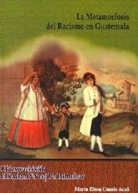

COLECCIÓN No. 1: BIBLIOTECA PARA EL DESARROLLO CONTINUO DEL SER HUMANO
Martínez, Francisco.
Aprender a Vivir contigo Mismo. Tomo I.
Guatemala: Editorial Cholsamaj, julio de 2005.
1ra. Edición.
108 págs.
21.3*28.3 cms.
99922-56-82-6
99922-56-83-4.
US$_______Q._______
Las orientaciones que surgieron de la UNESCO en 1996, en el informe La Educación Encierra un Tesoro, fijan las bases para que la formación sea una herramienta valiosa de desarrollo personal y social:
Aprender a ser uno mismo
Esto es interactuar con el mundo que nos rodea desde la propia perspectiva personal, familiar, y étnica en un mundo tan diverso. Asumir su propia identidad cultural y lingüística, le permite a una persona tener éxito. Si renunciara a sus raíces históricas verá disminuir su seguridad, su creatividad y, sobre todo, compromete su integridad y su autenticidad.
CONTENIDO:
Presentación de la colección. Introducción. Autoconocimiento. Autoestima. Pertenencia. Aceptación personal. Seguridad. Autoconfianza. Valoración. Éxito. Autoconciencia. Autoconcepto.
García, Amilcar.
Aprender a Desarrollarte en Familia. Tomo II.
Guatemala: Editorial Cholsamaj, julio de 2005.
1ra. Edición.
104 págs.
21.3*28.3 cms.
99922-56-82-6
99922-56-84-2.
US$_______Q._______
Las orientaciones que surgieron de la UNESCO en 1996, en el informe La Educación Encierra un Tesoro, fijan las bases para que la formación sea una herramienta valiosa de desarrollo personal y social:
El ser humano sin necesidad de pensarlo o expresarlo, tiene deseos de prosperar, y para poder lograrlo debe contar con dos pilares fundamentales: los principios y los valores. Uno de los principios es entender y comprometerse a cumplir nuestros objetivos y sueños, y el lugar fundamental en el cual se fortalecen los principios y valores, es la familia, siendo una de esas, la razón por la cual se considera como base de la sociedad.
CONTENIDO:
Introducción. Compartir en familia. Integración familiar. Formación del carácter y la personalidad. Principios y valore en la familia. Liderazgo y obediencia. Relación padres e hijos. Descubrimiento de vocaciones. Respeto mutuo. La familia y su espiritualidad. Dedicación y disciplina.
Hernández, Aroldo.
Aprender a Vivir Juntos. Tomo III.
Guatemala: Editorial Cholsamaj, julio de 2005.
1ra. Edición.
104 págs.
21.3*28.3 cms.
99922-56-82-6
99922-56-85-0.
US$_______Q._______
Las orientaciones que surgieron de la UNESCO en 1996, en el informe La Educación Encierra un Tesoro, fijan las bases para que la formación sea una herramienta valiosa de desarrollo personal y social:
Aprender a vivir juntos.
Plantea el reto para construir una sociedad respetuosa de las diferencias personales y culturales. Da la oportunidad de aprender de los demás y crecer juntos. Eso permite que la humanidad viva en una cultura de paz.
Hernández, Aroldo y Jaime Roquel.
Aprender a Aprender. Tomo IV.
Guatemala: Editorial Cholsamaj, julio de 2005.
1ra. Edición.
104 págs.
21.3*28.3 cms.
99922-56-82-6
Tomo 4: 99922-56-86-9.
US$_______Q._______
Las orientaciones que surgieron de la UNESCO en 1996, en el informe La Educación Encierra un Tesoro, fijan las bases para que la formación sea una herramienta valiosa de desarrollo personal y social:
Las condiciones sociales, tecnológicas y políticas cambian constantemente y a gran velocidad. Es decir, lo que aprendemos hoy no tiene garantía de que nos servirá de la misma forma mañana. El éxito de la niñez y juventud será su capacidad de aprendizaje continuo. Aprender a aprender. Es decir, “El futuro de prosperidad está en manos de los emprendedores”.
CONTENIDO:
Introducción. El desarrollo de la atención. El desarrollo de la memoria. El desarrollo del pensamiento. Aprendamos a ser líderes. El placer de descubrir, conocer y comprender. La Utopía del saber omnisciente. Atesoremos una amplia cultura general. Las sinergias de la preparación. Aprender a aprender. De lo conocido a lo desconocido.
Martínez, Francisco, Ixtz´ulu´ Elsa Son Chonay.
El Desarrollo del Pensamiento. Tomo V.
Guatemala: Editorial Cholsamaj, julio de 2005.
1ra. Edición.
94 págs.
21.3*28.3 cms.
99922-56-82-6
Tomo 3: 99922-56-87-7.
US$_______Q._______
El presente tomo, al inicio, contiene lecturas familiares y al final contiene ejercicios para el desarrollo del pensamiento. Entre estas lecturas se encuentra la Carta del Jefe.
Seattle. La cual revela el pensamiento de los pueblos originarios del continente. Estos pueblos viven una relación armónica con la naturaleza. Es por eso que esta carta ha sido catalogada como la más bella y profunda declaración hecha en la defensa de la madre Tierra.
La 2da. parte incluye juegos y ejercicios para el desarrollo del pensamiento. Ejercita la atención, la memoria y la lógica matemática para la resolución de problemas. Además, brinda la oportunidad de compartir el aprendizaje con la familia.
CONTENIDO:
Introducción. Carta al Jefe Seattle, Piel roja. Maya’ Ajilab’äl la Matemática Maya. El Nuevo Traje del Emperador. El Cerbatanero de Cera Negra. Matemáticas en el Destino Pensamiento Lógico. Pensamiento Lateral. Memorización. Respuestas.
COLECCIÓN No. 2 IXIMULEW
EDITORIAL CHOLSAMAJ - CECMA.
Colección IXIMULEW – 1ra. Parte IXIMULEW No. 4-23, 1997.
Guatemala: Editorial Cholsamaj, 1997.
174 págs.
27.5 x 30 cms.
s/n
US$_______Q._______
IXIMULEW es un suplemento publicado en Siglo Veintiuno, cada tres semanas, fue una oportunidad para que los Pueblos Mayas tengan un espacio para expresarse a nivel de todo el país. Hasta entonces solo se contaba con ciertas publicaciones a nivel regional o bien local. Aunque a mediados del 70 del siglo XX, circuló a nivel nacional el mensuario IXIM. Fue dirigido por un equipo de mayas. Cuando se agudizó el conflicto armado en el país, el mensuario dejó de circular.
IXIMULEW fue una iniciativa de CECMA y Siglo Veintiuno. Pero al publicarse el cuarto número, enero de 1996, Editorial Cholsamaj se incorporó en este esfuerzo.
Presentación: IXIMULEW No. 4, enero de 1996
Contenido: En este número se analiza la participación cívica y política del Pueblo Maya´, en Guatemala.
Traducción al Kaqchikel
Director: Miguel Ángel Velasco
Consejo Editorial: Germán Curruchiche, Raxche´ Demetrio Rodríguez, Obdulio Son, Estuardo Zapeta.
Traducción al kaqchikel: Martín Chacach
Edición y Diagramación: Editorial Cholsamaj
IXIMULEW No. 5, febrero de 1996
En este número se amplía el directorio del suplemento.
Presidente: José Rubén Zamora
Director: Migue Ángel Velasco
Consejo Editorial: Germán Curruchiche, Silvia Gereda, Raxche´ Demetrio Rodríguez, Kab´lajuj Tijax Martín Chacach, Obdulio Son, Ajtz´ib´ B´alam Estuardo Zapeta.
Traducción al Q´eqchi´: Arnoldo Chub Ico´
Edición y diagramación: Editorial Cholsamaj
Contenido: Discusión serena del Convenio 169 ahora que el congreso se ha propuesto desengavetarlo para discutir su aprobación el próximo 5 de marzo.
Traducción al Q´eqchi´
IXIMULEW No. 6, marzo de 1996
Contenido: Diversas opiniones sobre el tema Identidad y Derechos de los Pueblos Indígenas, a un año de haber sido firmado.
Traducción al idioma k´iche´.
IXIMULEW No. 7, julio de 1996
Contenido: Economía Maya como parte de la construcción de la nación guatemalteca.
Traducción al Kaqchikel
IXIMULEW No. 8, agosto de 1996
Contenido: Homenaje a todas las mujeres mayas, xinkas y garífunas el 9 de agosto. Día internacional de los Pueblos Indígenas del mundo proclamado por la ONU en el marco del Decenio de los Pueblos Indígenas.
Traducción al Q´eqchi´
IXIMULEW No. 9, septiembre de 1996
Contenido: Los mayas y la paz
Traducción al K´iche´
IXIMULEW No. 10, octubre de 1996
Contenido: Mayas y Ladinos hacia la interculturalidad
Traducción al Mam
IXIMULEW No. 11, Noviembre de 1996
Contenido: Oficialización de los idiomas mayas. Retos y perspectivas.
Traducción al Kaqchikel
IXIMULEW No. 12, diciembre de1996
Contenido: Los mayas y la constitución
Traducción al Q´eqchi´
IXIMULEW No. 13, diciembre de 1996
Contenido: Los mayas y los retos de la paz
Traducción al K´iche´
Los mayas y la reforma educativa. Edición especial.
Traducción al Tz´utujil
IXIMULEW No. 14, enero de 1997
Contenido: Los mayas y el primer año de gobierno
Traducción al Tz´utujil
IXIMULEW No. 15, febrero de 1997
Contenido: Los mayas y las comisiones paritarias
Traducción al Kaqchikel
IXIMULEW No. 16, marzo de 1997
Contenido: La interculturalidad y los mayas
Traducción al Q´eqchi´
IXIMULEW No. 17, marzo de 1997
Contenido: Niños y niñas mayas: Presente y futuro.
Traducción al Tz´utujil
IXIMULEW No. 18, abril de 1997
Contenido: Los mayas y el conteo del tiempo
Traducción al K´iche´
IXIMULEW No. 19, mayo de 1997
Contenido: Universidad maya
Traducción al Mam
IXIMULEW No. 20, junio de 1997
Contenido: Los mayas y la democracia
Traducción al Kaqchikel
IXIMULEW No. 21, junio de 1997
Contenido: Los 180 días de la paz y los mayas
Traducción al K´iche´
IXIMULEW No. 22, julio de 1997
Contenido: Identidad ladina
Traducción al Tz´utujil
IXIMULEW No. 23, agosto de 1997
Contenido: Mayas: 5 mil años de historia
Traducción al Mam
COLECCIÓN No. 3 KEM
Holsbeke, Mirelle y Julia Montoya.
Kemtzij. Kemon Taq Tzij Na’oj. Palabras y pensamientos tejidos. Los Tejidos Mayas, Espejos de una cosmovisión.
Guatemala: Editorial Cholsamaj, 2008.
1ra. Edición.
184 Págs.
21.5*29.5 cms.
978-99922-53-62-5
US$_______Q._______
El presente libro se remonta al tejido precolombino y establece una comparación con los tejidos del siglo pasado y presente. Deja en claro que el traje maya ha conservado muy bien sus principales características hasta el día de hoy. Además, hace ver que los tejidos de de esta gran cultura son las únicas formas de expresión artística que han perdurado sin interrupción durante más de dos milenios. Que es precisamente esta continuidad histórica donde radica una de las diferencias esenciales del traje maya y el traje occidental.
Se admite que un fenómeno cultural perdurable no es necesariamente estático, y ese es el caso de la indumentaria maya. En el transcurso del tiempo se ha producido intercambios entre las diferentes comunidades del Pueblo y eso introdujo ciertos cambios.
Posteriormente, la relación occidental y la introducción de nuevos materiales y técnicas han contribuido a un cambio constante en el estilo de la indumentaria, generando en cierta manera modas. La diferencia es que la moda occidental carece de una conciencia histórica, solo existe de manera efímera. Cada tendencia se impone al comprender que la anterior ha pasado de moda. Entre los mayas también se registran cambios, pero de forma gradual, además, no se producen un rompimiento con el pasado.
Otra diferencia es que entre los mayas, tejer y llevar el traje es un acto colectivo en el que la persona es poco visible, aunque está orgulloso de su trabajo. En el caso occidental, resalta lo individual. Y mientras más medios económicos posee una persona, más será el deseo de distinguirse a través del vestido.
En la actualidad, la fusión creativa de diversos elementos locales en el traje, o el uso de trajes de otras comunidades, ha originado una versión o estilo denominado panmaya. Estilo popular entre mujeres indígenas que trabajan y estudian en las áreas urbanas.
Pero además, cuenta con información verás sobre el origen y pertenencia de los trajes mayas, lo propio y las influencias. Rompe con la versión colonialista de que los indígenas vivían desnudos a la llegada de los invasores españoles y que el taje fue un valioso aporte de occidente. Versión oficial manejada en establecimientos educativos, incluso universidades.
CONTENIDO:
Prefacio. Editorial Cholsamaj/ Introducción. El traje es un lenguaje. Mirelle Holsbeke y Julia Montoya/ Agradecimientos/ El tejido como texto. El traje maya y los mensajes que transmite. Mirelle Holsbeke/ Estrategias de Supervivencia. La diversidad de la indumentaria maya en Guatemala. Rosario Miralbés de Polanco y Bárbar Konoke de Arathoon/ Tejidos de Chiapas. El arte de los antiguos sueños. Walter F. Morris y Carol Karasik/ Los motivos de los tejidos mayas. Espejos de una cosmovisión. Julia Montoya/ El Ub’ixik del decir. Una lectura de la lectura del Popol Wuj. Cecilia Vicuña/ Hilos subversivos. Una interpretación del tejido ya la cultura maya. Robert S. Carlsen/ Vías de exlusión. Indumentaria maya y racismo en la Guatemala contemporánea. Irma Alicia Velásquez Nimatuj/ Glosario de términos/ Bibliografía/ Créditos fotográficos.
Holsbeke, Mireille y Julia Montoya.
Ruwa Kemtzij. Kemon Taq Tzij Na’oj, Tejidos Mayas, El rostro de las palabras y los pensamientos tejidos. CATÁLOGO.
Guatemala: Editorial Cholsamaj, 1ra. Edición, 2008.
160 páginas.
21*29.02 cms.
978-99922-53-68-7.
US$_______Q._______
Este libro presenta una muestra de maravillosas piezas tejidas artísticamente por mujeres mayas. Cuenta con imágenes de prendas tejidas por mujeres de la nación Poqomam, Tz´utujil, K´iche´, kaqchikel, Mam, Awakateka, Ixil, Q´eqchi´, Poqomchi´, Tzeltal y Tzotzil. Conforman cerca de la mitad de las naciones mayas.
Entre los maravillosos tejidos se aprecian fajas, bolsos o morrales, perrajes, faldas, huipiles y sobrehuipiles finamente tejidos. En ellos se observan figuras de uvas, mamíferos, flores, aves, pero sobre todo, símbolos precolombinos que expresan ancestrales ideas y pensamientos. Además, muestra prendas elaboradas hace varias décadas hasta del año 2002. Presenta comparaciones de imágenes de hace siglos atrás con piezas actuales. Se aprecia un notable hilo de tradición que liga esas obras de arte.
Es evidente que las mujeres mayas de las diversas regiones han plasmado de manera ininterrumpida, a través de diversos símbolos, remotos y a la vez permanentes pensamientos de la cosmovisión del milenario Pueblo Maya.
Debe señalarse que estas admirables mujeres artistas han resistido con estoicismo a la presión ejercida por la mentalidad y actitud racista que inició hace más de cinco siglos, desde la invasión española.
Para las mujeres mayas, el traje es la memoria de su pueblo, en la que aún perduran historias míticas y una visión del mundo de ayer y hoy.
En la actualidad, se observan contradicciones en Guatemala. Mujeres y hombres ladinos, en el extranjero y en eventos especiales, lucen trajes mayas, pero dentro del país ven a quienes producen esos admirables tejidos como a ciudadanos de segunda categoría.
CONTENIDO:
Prólogo/Introducción/Mapas de áreas lingüísticas/Área Tzotzil/Área Tzeltal/Área kaqchikel/Área K’iche’/Área Man/Áreas Ixil y Awakateco/Área Tz’utujil/Área Q’eqchi’/Área Poqomchi’/Área Chuj/La cofradía/Indumentaria ceremonial/Los sobrehuipiles/El traje de la alcaldía indígena/El su’t o paño de cabeza/Tejidos con plumas/Telas de gasa de Alta Verapaz/Simbolismo de los principales motivos textiles/Santos con traje/El morral, una prenda para hombre/Los chachales/Los tejidos y los antiguos mitos/El tejido con el telar de cintura/Diálogo entre dos hebras/Una metáfora de la creación del cosmos/Un proceso de ‘nutrir y dar a luz’/Los tejidos mayas, ‘espejos de una cosmovisión’/El traje maya actual/Montaje de la exposición/Bibliografía.
COLECCIÓN No. 4 KUMATZIM WUJ
Kumatzim Wuj Jun, Códice de Dresde.
Guatemala: Editorial Cholsamaj, 2001. 1ra. Edición en 1998, 1ra. Reimpresión 2001.
86 págs.
12.7*24.1 cms.
99922-56-24-9.
US$_______Q._______
Según los editores, el Kumatzim Wuj Jun “es uno de los libros escritos por el Pueblo Maya en su época independiente. Este libro muestra que nuestro Pueblo escribió sus conocimientos matemáticos, astronómicos, y de otras ciencias con un sistema de escritura propio. Sistema en proceso de decodificación por especialistas de diversas partes del mundo”. La edición está basada en la edición facsimilar de 1887 al cui dado de Ernst Förstemann.
Kumatzim Wuj Ka’i’, Códice de Madrid.
Guatemala: Editorial Cholsamaj, 2008.
1ra. Edición.
116 Páginas.
13.2*25.5 cms.
978-99922-53-65-6.
US$_______Q._______
Este es uno de los libros escritos por el Pueblo Maya durante su época independiente. Con certeza se puede afirmar que la escritura es una de las características principales de los pueblos que desarrollaron una civilización.
El Códice de Madrid versa, principalmente, sobre la preparación de la siembra, el viaje de los comerciantes, las lluvias y sequías, las cosechas, sobre calendarios y fiestas.
Las 1ra.s diez páginas están bastante deterioradas, es poco lo que aún se observa como escritura. Una sección importante es la relacionada con las deidades agrícolas, trata sobre ritos propiciatorios para las buenas cosechas y las lluvias adecuadas.
De la página 44 a la 49 se refiere a la cacería del venado. Otra sección trata sobre la apicultura y su cuidado. Se aprecia la castración del panal, así como las abejas buscando alimento entre las flores. El Códice encierra diversos temas, adivinatorio y augural, ritual, calendárico, astronómico y de acciones existenciales.
COLECCIÓN No. 5 LECTURA Y GRAMÁTICA BÁSICA
Serie Lectura Y Gramática Báscia
Ross Montejo, Antonio y Edna Patricia Delgado Rojas, Editorial Cholsamaj - OKMA.
Ik’ti’ Yetwanoj Nixhtej Unin, Cuentos para Niños (Bilingüe Popti’-Castellano).
Guatemala: Editorial Cholsamaj, 2005.
1ra. Edición.
68 págs.
21.5 *27.5 cms.
99922-56-14-1.
US$_______Q._______
Oxlajuj Keej Maya´ Ajtz´ib´ -OKMA- ha elaborado la primera colección de libros infantiles “Lectura y Gramática Básica”, para niñas y niños maya hablantes del nivel primario, inicialmente de los idiomas: k´iche´, kaqchikel, q´anjob´al, popti´, mam, poqomam, achi y poqomchi´. El material busca difundir la escritura estándar del idioma a través de la lectura y escritura, así como la revalorización de la cultura en la niñez y apoyar la educación bilingüe intercultural.
Cuentos para Niños (popti’-castellano) ha sido elaborado para desarrollar la comprensión de la lectura en las niñas y los niños de 07 a 09 años que cursan entre segundo y tercer grados de primaria. Así mismo, pueden ser utilizados por padres de familia que deseen incentivar la lectura en sus hijos. El contenido de los textos es variado, incluye desde relatos mitológicos, descripciones, cuentos, leyendas y otros; todos han sido graduados de menor a mayor dificultad sobre los siguientes criterios: la edad de los usuarios, el contenido, la complejidad semántica y la estructura de los párrafos.
CONTENIDO:
Introducción/ Yijomal spixan ixim ixim, El espíritu del maíz/ Yik’ti’al no’ ponhom b’oj te’ hq’b’al, El sapo y la flor/ Yik’ti’al tzet xuh yoktoj no’ xhik al kalil, El conejo qu llegó a ser alcalde/ tzettxka eb’ab’il yinhtaj hune sxaj hum ti’, Los colores del maíz/ No’ xhik b’oj xin no’ sajcheh, El conejo y el venado/ stxili.l tzoti’, Vocabulario.
Editorial Cholsamaj - OKMA.
Jenaj Chili´l tijineel, Un Grillo Maestro.
Guatemala: Editorial Cholsamaj, enero de 2005.
1ra. Edición.
63 págs.
21. 5*27. 5 cms.
99922 56 17 6.
US$_______Q._______
Oxlajuj Keej Maya´ Ajtz´ib´ -OKMA- ha elaborado la primera colección de libros infantiles “Lectura y Gramática Básica”, para niñas y niños maya hablantes del nivel primario, inicialmente de los idiomas: k´iche´, kaqchikel, q´anjob´al, popti´, mam, poqomam, achi y poqomchi´. El material busca difundir la escritura estándar del idioma a través de la lectura y escritura, así como la revalorización de la cultura en la niñez y apoyar la educación bilingüe intercultural. Son libros bilingües y se basan en la tradición oral recopilada en lugares donde se habla cada idioma maya. Fueron transcritas y adaptadas cuidadosamente a la forma estándar del idioma. El trabajo se ha basado en la tradición oral recopilada en lugares donde se habla cada idioma maya. Es un medio para la construcción del conocimiento y transmisión de la cultura a través de las letras. La colección está compuesta por dos libros “Cuentos para niños” y “Conozcamos la gramática de nuestro idioma”.
Un Grillo Maestro (Poqomchi’ y Castellano) pertenece a la serie CUENTOS PARA NIÑOS. Ha sido elaborado para desarrollar la comprensión de la lectura en las niñas y los niños de 07 a 09 años que cursan entre segundo y tercer grados de primaria. Así mismo, pueden ser utilizados por padres de familia que deseen incentivar la lectura en sus hijos. El contenido de los textos es variado, incluye desde relatos mitológicos, descripciones, cuentos, leyendas y otros; todos han sido graduados de menor a mayor dificultad sobre los siguientes criterios: la edad de los usuarios, el contenido, la complejidad semántica y la estructura de los párrafos.
CONTENIDO:
Introducción. Jenaj Chili’l Tijnee. Características. Sugerencias metodológicas para la utilización del texto. Lineamientos metodológicos. Sugerencias para el uso de Jenaj Chili’l Tijnee. Re’ Tonk’iik’ rich’iil l chiw, Cenzontle y Pecho Colorado. Comprobación de lectura. Inventemos. Escribamos. Cantemos. Wilik N’ilwik Chaloq Qeh Pan Taxaaj, Alguien nos Mira Desde el Cielo. Comprobación de lectura. Dramaticemos. Dibujemos. Re’ Kok, La Tortuga. Comprobación de lectura. Juguemos. Re’ taqeh ruch k’oneel i daqkoj, Los compañeros de juego de kaqkoj. Comprobación de lectura. Nkib’an i Ki’ib’ Chi ak’uni, Aventura de dos jóvenes.
Serie Cuentos Para Niños
Editorial Cholsamaj - OKMA.
Ri Kib’ano’n ri Awaj, Aventura de los Animales (Idioma Achi).
Guatemala: Editorial Cholsamaj, enero de 2005.
1ra. Edición.
58 págs.
21.5*27.5 cms.
99922-56-79-6.
US$_______Q._______
Este material busca difundir la escritura estándar del idioma a través de la lectura y escritura, así como la revalorización de la cultura en la niñez y apoyar la educación bilingüe intercultural. Son libros bilingües y se basan en la tradición oral recopilada en lugares donde se habla cada idioma maya. Fueron transcritas y adaptadas cuidadosamente a la forma estándar del idioma. El trabajo se ha basado en la tradición oral recopilada en lugares donde se habla cada idioma maya. La colección está compuesta por dos libros “Cuentos para niños” y “Conozcamos la gKramática de nuestro idioma”.
Aventura de los animales (Bilingüe Achi y Castellano) pertenece a la serie CUENTOS PARA NIÑOS. Ha sido elaborado para desarrollar la comprensión de la lectura en las niñas y los niños de 07 a 09 años que cursan entre segundo y tercer grados de primaria. El contenido de los textos es variado, incluye desde relatos mitológicos, descripciones, cuentos, leyendas y otros; todos han sido graduados de menor a mayor dificultad sobre los siguientes criterios: la edad de los usuarios, el contenido, la complejidad semántica y la estructura de los párrafos.
CONTENIDO:
Nab’ee taq tzij, Introducción. Nab’ee tzijonik, primer cuento. Uriqitajiik ri ixim, Hllazgo del maíz. Nab’ee Chaak, primer ejercicio. Uka’m Chaak, segundo ejercicio. Roox Chaak, tercer ejercicio.
Editorial Cholsamaj - OKMA.
Ik’ti’ yin Q’anjob’al, Cuentos en Q’anjob’al (Bilingüe Q’anjob’al Castellano).
Guatemala: Editorial Cholsamaj, 2005.
1ra. Edición.
50 págs.
21.5 *27.5 cms.
99922-56-15-X.
US$_______Q._______
Oxlajuj Keej Maya´ Ajtz´ib´ -OKMA- ha elaborado la primera colección de libros infantiles “Lectura y Gramática Básica”, para niñas y niños maya hablantes del nivel primario, inicialmente de los idiomas: k´iche´, kaqchikel, q´anjob´al, popti´, mam, poqomam, achi y poqomchi´. El material busca difundir la escritura estándar del idioma a través de la lectura y escritura, así como la revalorización de la cultura en la niñez y apoyar la educación bilingüe intercultural.
El trabajo se ha basado en la tradición oral recopilada en lugares donde se habla cada idioma maya. Es un medio para la construcción del conocimiento y transmisión de la cultura a través de las letras. La colección está compuesta por dos libros “Cuentos para niños” y “Conozcamos la gramática de nuestro idioma”.
Cuentos en Q’anjob’al ha sido elaborado para desarrollar la comprensión de la lectura en las niñas y los niños de 07 a 09 años que cursan entre segundo y tercer grados de primaria. El contenido de los textos es variado, incluye desde relatos mitológicos, descripciones, cuentos, leyendas y otros; todos han sido graduados de menor a mayor dificultad sobre los siguientes criterios: la edad de los usuarios, el contenido, la complejidad semántica y la estructura de los párrafos.
CONTENIDO:
Introducción. Heb’ ix spixan ixim kotxutx ixim, El espíritu del maíz. Naq txitx ilom txitam, El conejo cuidador de cerdos. Naq winaq max ssik’ jun no’ jos, El hombre que recogió un huevo.
Editorial Cholsamaj - OKMA.
Rch’iil Pan Qaq’orb´al, Lecturas en nuestro Idioma (Poqomam-Castellano).
Guatemala: Editorial Cholsamaj, enero de 2005.
1ra. Edición.
68 págs.
21.3 * 27.5 cms.
99922-56-76-1
US$_______Q._______
Oxlajuj Keej Maya´ Ajtz´ib´ -OKMA- ha elaborado la primera colección de libros infantiles “Lectura y Gramática Básica”, para niñas y niños maya hablantes del nivel primario, inicialmente de los idiomas: k´iche´, kaqchikel, q´anjob´al, popti´, mam, poqomam, achi y poqomchi´. El material busca difundir la escritura estándar del idioma a través de la lectura y escritura, así como la revalorización de la cultura en la niñez y apoyar la educación bilingüe intercultural. Son libros bilingües y se basan en la tradición oral recopilada en lugares donde se habla cada idioma maya. Fueron transcritas y adaptadas cuidadosamente a la forma estándar del idioma. El trabajo se ha basado en la tradición oral recopilada en lugares donde se habla cada idioma maya. Es un medio para la construcción del conocimiento y transmisión de la cultura a través de las letras. La colección está compuesta por dos libros “Cuentos para niños” y “Conozcamos la gramática de nuestro idioma”.
Lectura en Nuestro Idioma (Bilingüe Poqomam y Castellano) pertenece a la serie CUENTOS PARA NIÑOS. Ha sido elaborado para desarrollar la comprensión de la lectura en las niñas y los niños de 07 a 09 años que cursan entre segundo y tercer grados de primaria. Así mismo, pueden ser utilizados por padres de familia que deseen incentivar la lectura en sus hijos. El contenido de los textos es variado, incluye desde relatos mitológicos, descripciones, cuentos, leyendas y otros; todos han sido graduados de menor a mayor dificultad sobre los siguientes criterios: la edad de los usuarios, el contenido, la complejidad semántica y la estructura de los párrafos.
CONTENIDO:
Introducción. Ma’ xojm ch’e’ ma’ imul, el Conoejo y el Coyote. Ma’ tz’oo’ kar, El hermoso pez. Ka’ab’ meb’aa’ winaq, Los dos pobrecitos. Junaj sa ixq’un ch’oh, Una pequeña ratita. Tusuuj q’orik, Vocabulario.
EDITORIAL CHOLSAMAJ - OKMA.
Kitzijonïk Qati’t Qamama’, Narraciones de nuestros abuelos y abuelas (Kaqchikel-Castellano).
Guatemala: Editorial Cholsamaj, enero de 2005.
1ra. Edición.
68 págs.
21.3 * 27.5 cms.
99922-56-16-8
US$_______Q._______
Oxlajuj Keej Maya´ Ajtz´ib´ -OKMA- ha elaborado la primera colección de libros infantiles “Lectura y Gramática Básica”, para niñas y niños maya hablantes del nivel primario, inicialmente de los idiomas: k´iche´, kaqchikel, q´anjob´al, popti´, mam, poqomam, achi y poqomchi´. El material busca difundir la escritura estándar del idioma a través de la lectura y escritura, así como la revalorización de la cultura en la niñez y apoyar la educación bilingüe intercultural. Son libros bilingües y se basan en la tradición oral recopilada en lugares donde se habla cada idioma maya. Fueron transcritas y adaptadas cuidadosamente a la forma estándar del idioma. El trabajo se ha basado en la tradición oral recopilada en lugares donde se habla cada idioma maya. Es un medio para la construcción del conocimiento y transmisión de la cultura a través de las letras. La colección está compuesta por dos libros “Cuentos para niños” y “Conozcamos la gramática de nuestro idioma”.
Lectura en Nuestro Idioma (Bilingüe Poqomam y Castellano) pertenece a la serie CUENTOS PARA NIÑOS. Ha sido elaborado para desarrollar la comprensión de la lectura en las niñas y los niños de 07 a 09 años que cursan entre segundo y tercer grados de primaria. Así mismo, pueden ser utilizados por padres de familia que deseen incentivar la lectura en sus hijos. El contenido de los textos es variado, incluye desde relatos mitológicos, descripciones, cuentos, leyendas y otros; todos han sido graduados de menor a mayor dificultad sobre los siguientes criterios: la edad de los usuarios, el contenido, la complejidad semántica y la estructura de los párrafos.
CONTENIDO:
Itroducción. Ri al, Los azocuanes. Ri ixim, El maíz. Ri utiwa’, Los coyotes. Ri rajawal chikopi’, El dueño de los animales. Ri ak’wala’ ri xe’ok inup che’, La niña y el niño que se conviertieron en Ceiba. Ri umül ruk’in ri utiw, El conejo y el coyote. Kak’a taq tzij, Glosario de términos nuevos.
Editorial Cholsamaj - OKMA.
Kil´ajb´en Qchmam, Relatos de Nuestros Abuelos (Mam-Castellano).
Guatemala: Editorial Cholsamaj, enero de 2005.
1ra. Edición.
60 págs.
21.3* 27.5 cms.
99922-56-77-X.
US$_______Q._______
Oxlajuj Keej Maya´ Ajtz´ib´ -OKMA- ha elaborado la primera colección de libros infantiles “Lectura y Gramática Básica”, para niñas y niños maya hablantes del nivel primario, inicialmente de los idiomas: k´iche´, kaqchikel, q´anjob´al, popti´, mam, poqomam, achi y poqomchi´. El material busca difundir la escritura estándar del idioma a través de la lectura y escritura, así como la revalorización de la cultura en la niñez y apoyar la educación bilingüe intercultural. Son libros bilingües y se basan en la tradición oral recopilada en lugares donde se habla cada idioma maya. Fueron transcritas y adaptadas cuidadosamente a la forma estándar del idioma. El trabajo se ha basado en la tradición oral recopilada en lugares donde se habla cada idioma maya. Es un medio para la construcción del conocimiento y transmisión de la cultura a través de las letras. La colección está compuesta por dos libros “Cuentos para niños” y “Conozcamos la gramática de nuestro idioma”.
Relatos de Nuestros Abuelos (Bilingüe Mam y Castellano) pertenece a la serie CUENTOS PARA NIÑOS. Ha sido elaborado para desarrollar la comprensión de la lectura en las niñas y los niños de 07 a 09 años que cursan entre segundo y tercer grados de primaria. Así mismo, pueden ser utilizados por padres de familia que deseen incentivar la lectura en sus hijos. El contenido de los textos es variado, incluye desde relatos mitológicos, descripciones, cuentos, leyendas y otros; todos han sido graduados de menor a mayor dificultad sobre los siguientes criterios: la edad de los usuarios, el contenido, la complejidad semántica y la estructura de los párrafos.
CONTENIDO:
Introducción. K’wal e’ ok te max, Los niños que se convirtieron en monos. Jun jaxjal yaj, Una familia pobre. Xi tiwin tib’ qman jb’al tuj wtz Q’an Laq, el día que se escondió la lluvia en el cerro Q’an Laq. Jun tqanil tib’aj tza’n tkanet qtxu’ exi’n, Una historia de cómo encontraron el maíz. Jun xjal yaj el tik’in jun oyaj, El señor que despreció un regalo.
COLECCIÓN No. 6 CUENTOS PARA NIÑOS
Serie Kichaqapil Ri Awajib’, Aventura De Los Animales
Tzicap Tzunún, Marleny Nohemí, Editorial Cholsamaj - OKMA.
Kichaqapil ri Awajib’, Aventura de los animales (Idioma K’iche’).
Guatemala: Editorial Cholsamaj, enero de 2005.
1ra. Edición.
62 págs.
21.4*27.4 cms.
99922-56-78-8.
US$_______Q._______
El material busca difundir la escritura estándar del idioma a través de la lectura y escritura, así como la revalorización de la cultura en la niñez y apoyar la educación bilingüe intercultural. Son libros bilingües y se basan en la tradición oral recopilada en lugares donde se habla cada idioma maya. Fueron transcritas y adaptadas cuidadosamente a la forma estándar del idioma. El trabajo se ha basado en la tradición oral recopilada en lugares donde se habla cada idioma maya. Es un medio para la construcción del conocimiento y transmisión de la cultura a través de las letras. La colección está compuesta por dos libros “Cuentos para niños” y “Conozcamos la gramática de nuestro idioma”.
Aventura de los animales (Idioma K’iche’) pertenece a la serie CUENTOS PARA NIÑOS. Ha sido elaborado para desarrollar la comprensión de la lectura en las niñas y los niños de 07 a 09 años que cursan entre segundo y tercer grados de primaria. El contenido de los textos es variado, incluye desde relatos mitológicos, descripciones, cuentos, leyendas y otros.
CONTENIDO:
Introducción. Nab’e Tzijonem, primer cuento: uriqitajik ri ixim, Hallazgo del maíz. Nab’e chak, primer ejercicio. Ukab’ chak, segundo ejercicio. Rox chak, tercer ejercicio. Ukab’ tzijonem, Segundo Cuento: Ri ixtuxa ak’, la gallina. Ukaj chak, cuarto ejercicio. Ro’ chak, quinto ejercicio. Choltzij, vocabulario.
Serie Conozcamos la Gramática de Nuestro Idioma
Nik’te’, María Juliana Sis Iboy, Editorial Cholsamaj - OKMA.
Kitzijoniik Qati’t Qamaam, Cuentos para Niños Achi.
Guatemala: Editorial Cholsamaj, abril de 2007.
1ra. Edición.
62 págs.
21*26.5 cms.
978-99922-56-99-2
US$_______Q._______
Las tradiciones mayas se están perdiendo paulatinamente a causa de la pobreza de producción literaria, principalmente por la falta de incentivos que promuevan este tipo de procción.
Kitzijoniik Qati’t Qamaam pertenece a la serie CONOZCAMOS LA GRAMÁTICA DE NUESTRO IDIOMA que va dirigido a niños de 10 años, que se encuentran cursando entre cuarto y quinto grado del nivel primario, pero que también se adapta a jóvenes y adultos que deseen iniciar su aprendizaje sobre su idioma materno.
El objetivo principal es difundir la escritura estándar del idioma a través de las competencias de lectura y escritura que buscan la revalorización de la cultura en los niños y sobre todo apoyar la educación bilingüe intercultural.
Editorial Cholsamaj - OKMA.
¡Akuchi’ Öj Petenäq Wi Röj Kaqchikela’! Cuentos para Niños Kaqchikel.
Guatemala: Editorial Cholsamaj, abril de 2007.
1ra. Edición.
60 págs.
21*26.5 cms.
978-99922-56-93-0
US$_______Q._______
Las tradiciones mayas paulatinamente se están perdiendo a causa de la pobreza de producción literaria, principalmente por la falta de incentivos que promuevan este tipo de producción. ¡Ak’uchi’ Öj Petenäq Wi Röj Kaqchikela’ pertenece a la serie CONOZCAMOS LA GRAMÁTICA DE NUESTRO IDIOMA que va dirigido a niños de 10 años, que se encuentran cursando entre cuarto y quinto grado del nivel primario, pero que también se adapta a jóvenes y adultos que deseen iniciar su aprendizaje sobre su idioma materno.
El objetivo principal es difundir la escritura estándar del idioma a través de las competencias de lectura y escritura que buscan la revalorización de la cultura en los niños y sobre todo apoyar la educación bilingüe intercultural.
Editorial Cholsamaj - OKMA.
Kik’ulmatajem Winaqib’, Cuentos para Niños K’iche’.
Guatemala: Editorial Cholsamaj, abril de 2007.
1ra. Edición.
62 págs.
21*26.5 cms.
978-99922-56-94-7
US$_______Q._______
Kik’ulmatajem Winaqib’ pertenece a la serie CONOZCAMOS LA GRAMÁTICA DE NUESTRO IDIOMA que va dirigido a niños de 10 años, que se encuentran cursando entre cuarto y quinto grado del nivel primario, pero que también se adapta a jóvenes y adultos que deseen iniciar su aprendizaje sobre su idioma materno.
El objetivo principal es difundir la escritura estándar del idioma a través de las competencias de lectura y escritura que buscan la revalorización de la cultura en los niños y sobre todo apoyar la educación bilingüe intercultural.
Pérez Alonzo, Juventino de Jesús. Guatemala: Editorial Cholsamaj.
Kyla’j Qchman, Cuentos para Niños Mam.
Guatemala: Editorial Cholsamaj, abril de 2007.
1ra. Edición.
58 págs.
21*26.5 cms.
978-99922-56-95-4
US$_______Q._______
Kyla’j Qchman pertenece a la serie CONOZCAMOS LA GRAMÁTICA DE NUESTRO IDIOMA que va dirigido a niños de 10 años, que se encuentran cursando entre cuarto y quinto grado del nivel primario, pero que también se adapta a jóvenes y adultos que deseen iniciar su aprendizaje sobre su idioma materno.
El objetivo principal es difundir la escritura estándar del idioma a través de las competencias de lectura y escritura que buscan la revalorización de la cultura en los niños y sobre todo apoyar la educación bilingüe intercultural.
Editorial Cholsamaj - OKMA.
Hej Yik’ti’ Jichmam Jichmi’, Cuentos para Niños Popti’.
Guatemala: Editorial Cholsamaj, abril de 2007.
1ra. Edición.
68 págs.
21*26.5 cms.
978-99922-56-96-1
US$_______Q._______
Hej Yik’ti’ Jichmam Jichmi’ pertenece a la serie CONOZCAMOS LA GRAMÁTICA DE NUESTRO IDIOMA que va dirigido a niños de 10 años, que se encuentran cursando entre cuarto y quinto grado del nivel primario, pero que también se adapta a jóvenes y adultos que deseen iniciar su aprendizaje sobre su idioma materno.
El objetivo principal es difundir la escritura estándar del idioma a través de las competencias de lectura y escritura que buscan la revalorización de la cultura en los niños y sobre todo apoyar la educación bilingüe intercultural.
Editorial Cholsamaj - OKMA.
Kik’uht Qate’t Qamaam Poqomam, Cuentos para Niños Poqomam.
Guatemala: Editorial Cholsamaj, abril de 2007.
1ra. Edición.
48 págs.
21*26.5 cms.
978-99922-56-97-8
US$_______Q._______
Kik’uht Qate’t Qamaam pertenece a la serie CONOZCAMOS LA GRAMÁTICA DE NUESTRO IDIOMA que va dirigido a niños de 10 años, que se encuentran cursando entre cuarto y quinto grado del nivel primario, pero que también se adapta a jóvenes y adultos que deseen iniciar su aprendizaje sobre su idioma materno.
El objetivo principal es difundir la escritura estándar del idioma a través de las competencias de lectura y escritura que buscan la revalorización de la cultura en los niños y sobre todo apoyar la educación bilingüe intercultural.
Editorial Cholsamaj - OKMA.
Najtir Q’iij, Cuentos para Niños Poqomchi’.
Editorial Cholsamaj, abril de 2007.
1ra. Edición.
62 págs.
21*26.5 cms.
978-99922-56-98-5
US$_______Q._______
Najtir Q’iij pertenece a la serie CONOZCAMOS LA GRAMÁTICA DE NUESTRO IDIOMA que va dirigido a niños de 10 años, que se encuentran cursando entre cuarto y quinto grado del nivel primario, pero que también se adapta a jóvenes y adultos que deseen iniciar su aprendizaje sobre su idioma materno.
El objetivo principal es difundir la escritura estándar del idioma a través de las competencias de lectura y escritura que buscan la revalorización de la cultura en los niños y sobre todo apoyar la educación bilingüe intercultural.
Pascual, Adán Francisco, Editorial Cholsamaj - OKMA.
Jojtaqnejeq Stxolilal yok Koq’anej. Cuentos para niños q’anjob’al.
Guatemala: Editorial Cholsamaj, 2007.
1ra. Edición.
58 Págs.
20.7 *26.8 cms.
978-99922-56-92-3.
US$_______Q._______
El objetivo principal es difundir la escritura estándar del idioma a través de las competencias de lectura y escritura que conllevan objetivos sobre la revalorización de la cultura en los niños y sobre todo apoyar la educación bilingüe intercultural. Los libros son monolingües y están basados en la tradición oral recopilada en lugares donde se habla cada idioma; transcritas y adaptadas cuidadosamente a la forma estándar del idioma. Para el tratamiento pedagógico, didáctico y adecuación de los textos a la edad de los usuarios, se contó con el apoyo de especialistas y varias capacitaciones sobre el tema.
COLECCIÓN No. 7 MAYANIZACIÓN
Bastos, Santiago y Aura Cumes (Coordinadores). Guatemala: Editorial Cholsamaj - FLACSO - CIRMA.
Mayanización y Vida Cotidiana Volumen 1 La ideología multicultural en la sociedad guatemalteca. Introducción y Análisis General.
Guatemala: Editorial Cholsamaj, 2007.
1ra. Edición.
396 págs.
18*24.5 cms.
978-99922-53-60-1
978-99922-53-56-4.
US$_______Q._______
El paquete incluye versión electrónica (CD).
Desde el proceso de los Acuerdos de Paz en Iximulew, Guatemala, fue surgiendo con fuerza una serie de demandas realizadas por quienes históricamente habían sido llamados “indios” o “indígenas” y que ahora se autoproclaman como mayas, buscando revertir la situación de exclusión y subordinación al que se les ha sometido por varios siglos. El tema mayanización es presentado a través de treinta textos trabajados por veintiocho autores. No se da una conclusión, pero el lector puede hacer la suya. Aunque se puede afirmar que en Guatemala existen varias formas de entender la diferencia étnica y de entenderse en ella.
CONTENIDO:
Una investigación colectiva sobre etnicidad e ideologías Santiago Bastos y Aura Cumes/ construcción de la identidad maya como un proceso político Santiago Bastos/ MAYANIZACIÓN Y EL SUEÑO DE LA EMANCIPACIÓN INDÍGENA EN GUATEMALA Aura Cumes. Presentación. mayanización y respuestas indígenas. Multiculturalismo y voces “no indígenas”. “soy pobre pero no Indio”. Las mujeres son “más indias” género, multiculturalismo y mayanizaicón. Unidad nacional la unidad del pueblo maya. LA IDEOLOGÍA MULTICULTURAL EN LA GUATEMALA DEL CAMBIO DE MILENIO Santiago Bastos. Introducción: el análisis de las ideologías. Ideologías en tensión: identidad, cultural y modernidad. Ideologías y cambio social: el multiculturalismo en su contexto histórico. Los no indígenas y el multiculturalismo. Conclusiones provisionales: ideología multicultural y vivencia de la etnicidad en el siglo XXI. Bibliografía del volumen. AUTORA Y AUTOR DE ESTE VOLUMEN.
Bastos, Santiago y Aura Cumes (Coordinadores). Guatemala: Editorial Cholsamaj - FLACSO - CIRMA.
Mayanización y Vida Cotidiana Volumen 2 La ideología multicultural en la sociedad guatemalteca. Estudios de Caso.
Guatemala: Editorial Cholsamaj, 2007.
1ra. Edición.
640 págs.
18*24.5 cms.
978-99922-53-60-1
978-99922-53-57-1.
US$_______Q._______
El paquete incluye versión electrónica (CD).
En este segundo volumen se recogen los dieciocho estudios de casoque se realizaron especialmente para la investigación y que fueron la base de todo el proyecto. En ellos se recrea lo que se denominaIdeología multicultural por los activistas mayas y otros actores. Ellos buscan instaurar esta ideología entre la gente a través de la eduación bilingüe, las escuelas mayas, talleres contra el racismo y otras actividades o medios.
CONTENIDO:
La transición incompleta entre la homogeneidad y la multiculturalidad
en el Estado de Guatemala: el Ministerio de Cultura y Deportes Saríah Acevedo/ Violencia, memoria e identidad: el caso de Choatalum (San Martín Jilotepeque, Chimaltenango) Santiago Bastos/ E l caso de la Defensoría de los Derechos de los Pueblos Indígenas de la Procuraduría de los Derechos Humanos Roddy Brett/ ¿Mayanización? Educación bilingüe y fortalecimiento del idioma popti’ en Jacaltenango Aroldo Camposeco/ Desclasamiento y etnicidad: reacciones en la colonia Primero de Julio ante la movilidad indígena Manuela Camus/ Discurso intercultural e ideologías étnicas en la Escuela Pedro Molina Aura Cumes/ Debates en torno a la identidad y el cambio social en Comalapa, una localidad del altiplano guatemalteco Édgar Esquit/ Territorio y espiritualidad: lugares sagrados q’eqchi’es en Chisec David García./ Significados étnicos, sentidos locales: dinámicas socioeconómicas y discursos identitarios en Huité Felipe Girón./ Revitalización étnica en Santa María Visitación, un municipio tz’utujil Ricardo Grisales y Carlos Benavides/ La política cultural maya en San Juan Sacatepéquez Christopher Jones./ La Asociación de Sacerdotes Mayas de Guatemala Ana López Molina. /De la cosmovisión a la herencia: la mayanización y las bases cambiantes de la etnia en el área ch’orti’ Brent Met. /“¡En Estanzuela no hay indios!” Identidad ladina en un pueblo del oriente de Guatemala Jorge Estuardo Molina/ Multiplicidad y antagonismo en torno a la mayanización en San Pedro la Laguna Engelbert Tally y Josué Chavajay. /San Bartolo Aguas Calientes: el orgullo por una tradición moderna Ana Lucía Robles/ Matices ideológicos de lo étnico en Patzún Enrique Sincal Imaginando naciones desde San Miguel Totonicapán: la lucha por la definición del “maya permitido” en el discurso multicultural Marcelo Zamora/ Autoras y autores de este volumen.
Bastos, Santiago y Aura Cumes (Coordinadores). Guatemala: Editorial Cholsamaj - FLACSO - CIRMA.
Mayanización y Vida Cotidiana Volumen 3 La ideología multicultural en la sociedad guatemalteca. Análisis Específicos.
Guatemala: Editorial Cholsamaj, 2007.
1ra. Edición.
310 págs.
18*24.5 cms.
978-99922-53-60-1
Volumen 3: 978-99922-53-58-8.
US$_______Q._______
El paquete incluye versión electrónica (CD).
En este tercer volumen se recogen los análisis específicos realizados por ocho expertos a partir de los datos recogidos en los estudios de caso. Presenta la dimensión edudcativa en sus versiones pública y privada, formal y no formal para unamayor comparación entre los miembros de la muestra. Está centrado en los actores de la mayanización y en el “cómo# de la operativización de la misma.
CONTENIDO:
El proceso de mayanización y el papel de la educación escolar (Análisis documental) Waqxaqi’ Q’anil Demetrio Cojtí/ Etnicidad, cambio socioeconómico y lógicas sobre el discurso multicultural en Guatemala Claudia Dary/ El discurso multicultural y la mayanización: la juventud y otras generaciones Cecilia Gárces/ Patriarcado, neoliberalismo y mayanización: el desafío de la múltiple emancipación de los sujetos Diana García/ La mayanización y el futuro de las relaciones serviles y tutelas en Guatemala Ramón González Ponciano/ Dinámica de mayanización en las políticas de transformación estructural de la sociedad guatemalteca Serio Mendizábal/ Religión y espiritualidad maya José Roberto Morales/ Mayanización y experiencia religiosa: una lectura a partir de los aportes etnográficos sobre la espiritualidad maya Karen Ponciano/ AUTORES Y AUTORAS DE ESTE VOLUMEN.
COLECCIÓN No. 8 KIKOTEMAL (Aprendamos Jugando)
Son Chonay, Ixtz’ulu’ Elsa y Saqilk’u’x Ajpawaq.
Tzimay Tzij, La jícara de los cuentos.
Guatemala: Editorial Cholsamaj, 2006.
1ra. Edición.
128 págs.
20.7*26.6 cms.
99922-53-27-7
9922-53-27-4.
US$_______Q._______
La jícara de los cuentos es un material de lectura amena y con mensajes positivos acerca de la vida y del trabajo. Difunde cuentos creados y recreados en la cultura maya. Los mismos resaltan valores que nos ayudan a lograr el éxito en la vida.
Además, estos cuentos manifiestan formas propias de ver y entender el mundo. Expresan la imaginación de los pueblos que los originaron.
El material presenta más cuentos mayas con el objetivo de abrir una ventana a los rasgos propios de esta cultura poco conocida y apreciada en el país.
También incluye algunos cuentos de otros pueblos para conocer otras culturas en este mundo cada vez más globalizado.
CONTENIDO:
Tzimay Tzij, la Jícara de los cuentos. Ixpumuy, la joven tejedora. El sabio anciano. El joven sin profesión. El nawal del negocio. La asombrosa transformación. Ami8gas maravillosas. Ixkawoq perdida en el bosque. El joven administrador. La cuidad encantada. Las aventuras de ixch’op. La misteriosa embarcación. El falso ajpop. El joven sediento. El joven valiente. Los nawales durante la Luna llena. El valor de la amistad. La amistad y la libertad. El venado engreído. La bruja cocinera. La herencia. Hanasakajiisan. Kikimimisuki. Antañavo, el lago sagrado de los antankarana. El agua del paraíso.
Cofiño Molina de Sales, Ileana.
Ciencias Naturales 4 (4to. grado de primaria).
Guatemala: Editorial Cholsamaj, junio de 2006.
1ra. Edición.
198 págs.
21.5*26.7 cms.
99922-53-25-8
99922-53-20-7
US$_______Q._______
. En las diferentes unidades, el libro invita a que por analogía, inferencia o razonamiento el estudiante llegue a la respuesta o explicación de determinada pregunta o problemática.
. Mediante la experimentación impulsa a comprobar la teoría aprendida, a reafirmar y a fijar conocimientos.
. A la vez propicia la curiosidad y conduce a buscar respuesta a las mismas mediante la investigación.
. Asimismo, prepara y aporta herramientas que permiten aplicar los conocimientos en determinados momentos de la vida diaria.
. A través de actividades favorece los espacios y las situaciones en que se pueden aplicar los conocimientos, las habilidades, las actitudes y aptitudes desarrolladas.
. Finalmente, ayuda a que por sí mismo se vivan los procesos de aprendizaje y que se camine de acuerdo al propio ritmo. A la vez fomenta el aprendizaje cooperativo y la solidaridad.
*fenómenos del sistema solar.).
CONTENIDO:
UNIDAD 1. La Vida en la tierra: *las plantas, su estructura y sus funciones. *los animales, su estructura sus funciones. *el ecosistema. UNIDAD 2. Mi Cuerpo y su cuidado: *los sistemas del cuerpo. *un cuerpo saludable. *cuidando nuestra salud. *salud y nutrición. UNIDAD 3. La Tierra, un Lugar Especial: *la supervivencia. *cambios ambientales y supervivencia. *la tierra, un hogar especial. *conservo el ambiente. UNIDAD 4. Un Mundo Dinámico: *la materia. *sonido, luz y electricidad. *fuerza y movimiento. *experimento con la materia. UNIDAD 5. La Tierra y el Espacio: *la tierra. *el clima. *exploro los océanos. *fenómenos del sistema solar.
Rendón de Gómez, Lorena.
Comunicación y Lenguaje 4 (4to. Grado de Primaria).
Guatemala: Editorial Cholsamaj, 2006.
1ra. Edición.
152 págs.
21*26.6 cms.
99922-53-22-3
99922-53-20-7.
US$_______Q._______
El material conduce al alumno o alumna a formarse a través de once pasos claves, a saber:
Induce a que por analogía, inferencia o razonamiento se halla la respuesta o explicación de una pregunta, situación o problema.
. Aporta nuevos términos al vocabulario de alumnas y alumnos.
. Mueve a comprobar la teoría aprendida, a reafirmar y fijar conocimientos.
. Contribuye a profundizar y ampliar los conocimientos adquiridos y a descubrir otros.
. Asimismo, propicia los espacios y las situaciones en que se pueden aplicar los conocimientos, las habilidades, actitudes y aptitudes desarrollada en cada unidad.
. También permite que por sí mismo se vivan los procesos de aprendizaje y que se avance de acuerdo al propio ritmo.
. Pero además, fomenta el aprendizaje cooperativo y la solidaridad, como también la oportunidad de aprender unos de otros en un ambiente socializador.
CONTENIDO:
UNIDAD 1. Abro mi Pensamiento a la Lectura: expresiones de cortesía. Técnicas y modalidades del intercambio de información. Ortografía: uso de la “b” y “v”. los adverbios. Matices de la voz para dar significado al texto poético. Ortografía: uso de la “h”. elementos de enlace: preposiciones y conjunciones. Ortografía: acento prosódico y acento ortográfico. El punto. Miniproyecto. UNIDAD 2. Es maravilloso poder expresarse: la comunicación. Uso de los signos de admiración u de interrogación. Lenguaje comunicativo en historietas. Fuentes de información. Ortografía: la coma. Las siglas y las abreviaturas. Uso de la “c” y “s”. el significado de las palabras: sinónimas y antónimas. Homónimas. El argumento. Ortografía: uso de la “g” y “j”. los acrósticos. Pronunciación adecuada de las palabras y oraciones. Uso de comillas. La sílaba. Miniproyecto. UNIDAD 3. Leer para analizar es fascinante: mensajes de los medios de comunicación. Proceso de la comunicación. Reglas de acentuación. Elementos de la descripción. Organización de la información. Proceso de la comunicación: la palabra. Ortografía: uso correcto de la “x”. El informe. Clasificación del sustantivo y el adjetivo. Los pronombres personales. La sílaba: átona y tónica. Gramática: la oración: sujeto y predicado. Ortografía: uso correcto de la “m” y “n”. UNIDAD 4. La imaginación nos hace crear maravillas: la narración: el cuento y la fábula. Expresión: canciones, refranes y poemas. Los signos y señales. La tilde diacrítica. Uso del contexto para identificar palabras desconocidas tipos de lectura: recreativa y referencial. Uso de la biblioteca. Ortografía: uso de la “r” y “rr”. Afijos: sufijos y prefijos. Estructura del sujeto. Estructura del predicado. Uso del punto y coma. Uso de los puntos suspensivos. Proyecto de nuestra unidad.
Zurita Villagrán de Calgua, Nancy Anely.
Matemática 4 (4to. Grado de Primaria).
Guatemala: Editorial Cholsamaj, junio de 2006.
1ra. Edición.
148 págs.
20.5*27cms.
99922-53-21-5
99922-53-20-7
US$_______Q._______
Milenios de años llevan los humanos conociendo y empleando la matemática. Y para mayor facilidad en cuanto a conocer y emplear esta ciencia, en este libro, se plantea considerar siempre los tres siguientes aspectos:
Pienso: invita a que por similitud, inferencia o razonamiento se llegue a la respuesta o explicación de determinada pregunta, situación o problema.
Investigación: despierta la curiosidad e induce a encontrar respuesta a las mismas. Ayuda a profundizar y ampliar los conocimientos ya adquiridos y también a descubrir otros.
Ejercicio: prepara y proporciona herramientas que permiten aplicar los conocimientos en la vida real.
Al tener presente estas consideraciones será interesante introducirse en el mundo de la matemática.
UNIDAD 1. Juguemos Con los Conjuntos: representación de conjuntos. El lenguaje de los conjuntos. Operaciones entre conjuntos. El rincón de problemas. Mis raíces. Mis logros. Probabilidad y estadística: tablas de registro. UNIDAD 2. El Mundo De Los Números: los números naturales. Los números mayas. Los números romanos. El rincón de problemas. Mis raíces. Mis logros. Probabilidad y estadística: Gráficas de barras. UNIDAD 3. Los Números y Sus Operaciones: suma y resta de números naturales. El rincón de problemas. Multiplicación y división de números naturales. Potenciación. El rincón de problemas. Mis raíces. Mis logros. Probabilidad y estadística: pictogramas. UNIDAD 4. Podemos Compartir Con Las Fraccione: teoría de números. Fracciones. El rincón de problemas. Los números decimales. El rincón de problemas. Mis raíces. Mis logros. Probabilidad y estadística: Eventos probables y no probables. UNIDAD 5. Medidas y Geometría: medidas. Geometría. El rincón de problemas. Mis raíces. Mis logros. Probabilidad y estadística: Encuesta.
COLECCIÓN No. 9 CLÁSICOS CHOLSAMAJ
Anónimo.
Cuentos de las Mil y una Noches, Clásicos Cholsamaj.
Guatemala: Editorial Cholsamaj, febrero de 2002.
1ra. Edición.
160 págs.
12.4*19 cms.
99922-56-53-2
US$_______Q._______
De la Contraportada: Editorial Cholsamaj edita libros principalmente en o acerca de los idiomas mayas. Libros especializados para estudios en estas materias.
Con la Colección Clásicos Cholsamaj, se inicia la publicación de literatura universal que demandan los centros educativos para la formación de los estudiantes. De esta manera, deseamos contribuir con nuestro grano de maíz, a la formación de la juventud y al fomento de la lectura. Los Clásicos Cholsamaj, se presentan contextualizados a la multiculturalidad de nuestro país.
Se trata de una colección de cuentos escritos en árabe, que curiosamente, al principio, gozó de más aceptación en la cultura occidental y solo después entre los árabes. De acuerdo a las narraciones orientales, cuenta con un relato marco y en él se insertan los diversos cuentos.
La estructura de la narración se le denomina historia-cañamazo, se trata de un relato, que por su dinámica misma, va generando otros cuentos que se van montando sobre aquella estructura, así:
Cuenta con relatos de excelente calidad y otros con inferior o de mediano valor. Contiene cuentos didácticos y cuentos humorísticos, al lado de series de anécdotas variadas. Posee un estilo sencillo y directo en casi todos los cuentos, eso facilita su lectura.
El presente volumen pretende acercar al lector con una parte de aquella gigantesca obra de la literatura universal.
CONTENIDO:
Un prólogo para las Mil y una Noches. Historia de Sinbad el Mar Historia del primer Viaje de Sinbad el marino Historia del segundo viaje de Sinbad el marino El saco prodigioso. Historia de Zobeida. Cuento de la oca y de los pavos reales. Historia de Alí Babá y los cuarenta ladrones. Historia del pescador y el dfrit. Algunas gracias y teorías del amo de la risa y de los chistes. Historia del saco encantado.
Ana Frank.
Diario de Ana Frank, Clásicos Cholsamaj.
Guatemala: Editorial Cholsamaj, 2003.
1ra. Edición.
256 págs.
12*19 cms.
99922-56-04-4
US$_______Q._______
Editorial Cholsamaj edita libros principalmente en o acerca de los idiomas mayas. Libros especializados para estudios en estas materias.
Con la Colección Clásicos Cholsamaj, se inicia la publicación de literatura universal que demandan los centros educativos para la formación de los estudiantes. De esta manera, deseamos contribuir con nuestro grano de maíz, a la formación de la juventud y al fomento de la lectura. Los Clásicos Cholsamaj, se presentan contextualizados a la multiculturalidad de nuestro país. Es una muestra de cómo presentar la producción literaria de otros Pueblos, con elementos culturales mayas. Los Gutemaltecos debemos conocer otras ideas, pensamientos y creaciones literarias de otras culturas, pero a la vez afirmar nuestra propia identidad.
El Diario de Ana Frank hay que verlo en el contexto de la a segunda guerra mundial que inició en 1939 y culminó en 1945. En esta guerra murieron millones de personas, solo judíos, según informaciones, murieron alrededor de seis millones, entre ellos la mayoría del grupito con quienes se ocultó y convivió Ana Frank.
A causa de la invasión alemana sobre varios países, incluida Holanda, y por la persecución nazi, es que la familia de Ana y miembros de otras dos familias más se vieron en la necesidad de ocultarse.
Durante dos años permanecieron escondidos en un pequeño apartamento en Amsterdam, sufriendo limitaciones y tensiones. Allí consiguieron sobrevivir dos años, gracias al incondicional apoyo y solidaridad de algunas familias holandesas. Finalmente, fueron delatados y capturados en agosto de 1944, incluyendo a dos holandeses solidarios. Fueron enviados a diversos campos de concentración. Ana y su hermana mayor pasaron sus últimos días en el campo de concentración de Bergan-Belsen.
Ana Frank, autora del conmovedor Diario, es judía y nació en el año 1929, Alemania. Una jovencita con carácter firme, valiente, enfrentando sus propios conflictos pero siempre amiga de la verdad.
A través de este diario puede verse también la miseria material y la miseria interior que trajo la guerra, la violación de los derechos de las personas y de los pueblos, el saqueo, el hambre, torturas, heridas, dolor, muerte y destrucción de familias y pueblos. En el caso de los judíos se observa el racismo y el genocidio. Por otro lado se observa la solidaridad, el valor, la esperanza, incluso los sueños positivos.
Asimismo, es un espejo para ver y comprender mejor como también superar las debilidades y errores que se manifiestan y cometen en la interrelación que viven las familias.
Anónimo.
El Lazarillo de Tormes, Clásicos Cholsamaj.
Guatemala: Editorial Cholsamaj, febrero de 2002.
1ra. Edición.
96 págs.
12*19 cms.
99922-56-49-4
US$_______Q._______
Editorial Cholsamaj edita libros principalmente en o acerca de los idiomas mayas. Libros especializados para estudios en estas materias.
Con la Colección Clásicos Cholsamaj, se inicia la publicación de literatura universal que demandan los centros educativos para la formación de los estudiantes. De esta manera, deseamos contribuir con nuestro grano de maíz, a la formación de la juventud y al fomento de la lectura. Los Clásicos Cholsamaj, se presentan contextualizados a la multiculturalidad de nuestro país. Es una muestra de cómo presentar la producción literaria de otros Pueblos, con elementos culturales mayas. Los Gutemaltecos debemos conocer otras ideas, pensamientos y creaciones literarias de otras culturas, pero a la vez afirmar nuestra propia identidad.
El Lazarillo de Tormes consta de siete Capítulos o “tratados” de muy variable extensión. Es una novela escrita en 1ra. persona, a la manera de carta dirigida a una persona de rango superior (“vuestra merced”), en un acto de obediencia y rendición de cuentas, sin comentarios ni reflexiones de orden moral. En este autobiografismo reside la 1ra. gran innovación de las muchas que presenta la obra: el Lazarillo de Tormes es la narración de la trayectoria vital de un ser de vergonzosa extracción social y de su lucha por la supervivencia.
Esta obra, prototipo de la novela picaresca (1554), de autor desconocido, que florecería en la literatura española de comienzos del siglo XVII, muestra una visión pesimista de la sociedad a través de los ojos de un pícaro.
Maquiavelo, Nicolás.
El Príncipe, Clásicos Cholsamaj.
Guatemala: Editorial Cholsamaj, septiembre de 2002.
1ra. Edición.
128 págs.
12.*19.1 cms.
99922-56-67-2
US$_______Q._______
Editorial Cholsamaj edita libros principalmente en o acerca de los idiomas mayas. Libros especializados para estudios en estas materias.
Con la Colección Clásicos Cholsamaj, se inicia la publicación de literatura universal que demandan los centros educativos para la formación de los estudiantes. De esta manera, deseamos contribuir con nuestro grano de maíz, a la formación de la juventud y al fomento de la lectura. Los Clásicos Cholsamaj, se presentan contextualizados a la multiculturalidad de nuestro país. Es una muestra de cómo presentar la producción literaria de otros Pueblos, con elementos culturales mayas. Los Gutemaltecos debemos conocer otras ideas, pensamientos y creaciones literarias de otras culturas, pero a la vez afirmar nuestra propia identidad.
Esta obra constituye el primer tratado de ciencia política con que contó la Humanidad. Ciertamente otros autores se habían ocupado de la política, pero dentro de los límites de la filosofía o la religión. Maquiavelo, en cambio, se refiere a la política como realidad autónoma, sin límites morales. Para Maquiavelo, lo útil, no lo bueno ni lo justo, es lo esencial para la vida política y, por lo tanto, para el ejercicio del poder.
La palabra príncipe significa, para nuestro autor, el principal, el que ejerce la primacía; no se refiere, pues, al hijo de un rey: en verdad, el célebre autor no simpatizaba con la monarquía, sino con la república.
El príncipe, según lo plantea el autor italiano, ha de ser una persona excepcional, capaz de ejercer el poder con acierto, de cumplir los fines superiores del Estado, es decir, los fines políticos, tomando en cuenta la situación donde gobierna. El príncipe debe realizar lo posible, lo factible, en función de los propósitos del Estado, prescindiendo de la moral o la religión.
CONTENIDO:
Prólogo. Capítulo I De las distintas clases de principados y del forma en que se adquieren. Capítulo II De los principados hereditarios. Capítulo III De los principados mixtos. Capítulo IV Por qué el reino de Darío, ocupado por Alejandro, no se rebeló contra sucesores de éste, después de su muerte. Capítulo V De que manera deben gobernarse los Estados que, antes de de ser ocupados, se regían por sus propias leyes. Capítulo VI De los principados nuevos que se adquieren con las armas propias y el talento personal. Capítulo VII De los principados nuevos que se adquieren con armas y fortuna de otros. Capítulo VIII De los que llegaron a príncipes mediante crímenes. Capítulo IX Del principado civil. Capítulo X Cómo deben medirse las fuerzas de todos los principados. Capítulo XI De los principados eclesiásticos. Capítulo XII De las distintas clases de milicia y de los soldados mercenarios. Capítulo XIII De los soldados auxiliares, mixtos y propios. Capítulo XIV De los deberes de un príncipe para con la milicia. Capítulo XV De las cosas por las que los hombres, y especialmente los príncipes, son alabados o censurados. Capítulo XVI De la liberalidad y de la miseria. Capítulo XVII De la clemencia y de la severidad, y si vale más ser amado que temido. Capítulo XVIII De qué modo deben guardar los príncipes la fe prometida. Capítulo XIX El príncipe debe evitar ser aborrecido y despreciado. Capítulo XX Si las fortalezas y otras muchas cosas que los príncipes hacen son útiles o No Capítulo XXI Cómo debe conducirse un príncipe para adquirir consideración. Capítulo XXII De los ministros o secretarios de los príncipes. Capítulo XXIII Cuándo debe huirse de los aduladores. Capítulo XXIV Por qué muchos príncipes de Italia perdieron sus Estados. Capítulo XXV Dominio que ejerce la fortuna en las cosas humanas, y cómo resistirla cuando es adversa. Capítulo XXVI Exhortación a liberar a Italia de los bárbaros.
Fernández de Moratín, Leandro.
El Sí de las Niñas, La Comedia Nueva o El Café, Clásicos Cholsamaj.
Guatemala: Editorial Cholsamaj, febrero de 2002.
1ra. Edición.
186 págs.
12.*19.1 cms.
99922-57-55-9
US$_______Q._______
Editorial Cholsamaj edita libros principalmente en o acerca de los idiomas mayas. Libros especializados para estudios en estas materias.
Con la Colección Clásicos Cholsamaj, se inicia la publicación de literatura universal que demandan los centros educativos para la formación de los estudiantes. De esta manera, deseamos contribuir con nuestro grano de maíz, a la formación de la juventud y al fomento de la lectura. Los Clásicos Cholsamaj, se presentan contextualizados a la multiculturalidad de nuestro país. Es una muestra de cómo presentar la producción literaria de otros Pueblos, con elementos culturales mayas. Los gutemaltecos debemos conocer otras ideas, pensamientos y creaciones literarias de otras culturas, pero a la vez afirmar nuestra propia identidad.
El autor de esta obra nació en Madrid el 10 de marzo de 1760 y murió en París el 21 de julio de 1828. Moratín fue poeta, ensayista y dramaturgo. En 1799 se enamoró de paquita Muñoz, en ella se inspiró para escribir su obra teatral más importante: El sí de las niñas, finalizada en 1801 y exitosamente estrenada en 1806. El tema central es el triunfo del amor que derrota los obstáculos o la oposición de los padres. Los entendidos afirman que con esta obra, el autor logró un modelo de comedia neoclásica, logrando una gran verosimilitud y naturalidad en la conducta de los personajes.
Según Joaquín Casalduero “en esta obra, el autor no cae nunca en lo chabacano, se mantiene siempre dentro de la sencillez y la gracia… El propósito moral no se confunde con la predicación”.
Se afirma que Moratín es el autor con quien el Neoclasicismo logra la aceptación del público español, a causa del talento del escritor y de su acertado sentido de las exigencias que impone la representación teatral.
La segunda obra en este libro es La Comedia nueva o El café, estrenada en Madrid, 1792. El segundo nombre se lo dio el público, porque la acción se desarrolla en un café. En esta obra, el autor evidencia su devoción por la literatura francesa, convirtiéndolo en el representativo principal de los intelectuales llamados galicistas a causa de vigorosa adhesión a las tendencias literarias de Francia. Es su primera obra teatral sobresaliente.
Miller Hemingway, Ernest.
El Viejo y el Mar, Clásicos Cholsamaj.
Guatemala: Editorial Cholsamaj, febrero de 2002.
1ra. Edición.
128 págs.
12.1*19.1 cms.
99922-57-52-4
US$_______Q._______
Editorial Cholsamaj edita libros principalmente en o acerca de los idiomas mayas. Libros especializados para estudios en estas materias.
Con la Colección Clásicos Cholsamaj, se inicia la publicación de literatura universal que demandan los centros educativos para la formación de los estudiantes. De esta manera, deseamos contribuir con nuestro grano de maíz, a la formación de la juventud y al fomento de la lectura. Los Clásicos Cholsamaj, se presentan contextualizados a la multiculturalidad de nuestro país. Es una muestra de cómo presentar la producción literaria de otros Pueblos, con elementos culturales mayas. Los Gutemaltecos debemos conocer otras ideas, pensamientos y creaciones literarias de otras culturas, pero a la vez afirmar nuestra propia identidad.
El autor nació en Illinois, Estados Unidos, el 21 de julio de 1898, y se suicidó el 2 de julio de 1961. Desde 1945 se instaló en Cuba, habiendo recibido el premio Pulitzer en 1953 y el Novel de literatura en 1954.
La novela, El viejo y el mar, es calificado como la obra maestra del célebre autor. Es una novela corta e intensa, de fácil lectura, sin mayores complicaciones en la organización del relato y presentación de los personajes, escrita con un estilo ágil. La novela encierra un hondo simbolismo que representa la lucha por la vida y los afanes de los seres humanos por sobrevivir.
El viejo y experto pescador de la novela lleva 40 días sin pescar. El muchacho a quien ha adiestrado se ve obligado a abandonarlo. Pasan otros 44 días de frustración, más el viejo no se desanima. Mantiene la ilusión de atrapar un pez extraordinario. Cuando por fin lo consigue, los tiburones lo devoran. Fatigado el pescador se entrega al sueño. Al siguiente día comienza una vez más la jornada, de nuevo lo acompaña el muchacho.
La historia del viejo y el mar aparece a la vista como la imagen de la vida misma, pues no se trata solo de la historia de una ilusión y de un fracaso, sino también la epopeya de la energía, de la voluntad, del amor y de la soledad del ser humano y de la victoria sobre la desesperanza.
Se trata de una obra maestra de la literatura universal.
CONTENIDO:
Prólogo. El autor y sus obras. El viejo y el Mar.
Esopo.
Fábulas, Clásicos Cholsamaj.
Guatemala: Editorial Cholsamaj, febrero de 2002.
1ra. Edición.
94 págs.
12*19 cms.
99922-56-42-7
US$_______Q._______
Editorial Cholsamaj edita libros principalmente en o acerca de los idiomas mayas. Libros especializados para estudios en estas materias.
Con la Colección Clásicos Cholsamaj, se inicia la publicación de literatura universal que demandan los centros educativos para la formación de los estudiantes. De esta manera, deseamos contribuir con nuestro grano de maíz, a la formación de la juventud y al fomento de la lectura. Los Clásicos Cholsamaj, se presentan contextualizados a la multiculturalidad de nuestro país. Es una muestra de cómo presentar la producción literaria de otros Pueblos, con elementos culturales mayas. Los guatemaltecos debemos conocer otras ideas, pensamientos y creaciones literarias de otras culturas, pero a la vez afirmar nuestra propia identidad.
Generalmente, las fábulas se mueven en un campo con doble propósito. Busca causar deleite, entretención, pero al mismo tiempo trata de transmitir una lección, particularmente moral, que contribuya al crecimiento espiritual.
Según Correa y Lázaro Carretes (1966: 185), la fábula es un subgénero didáctico, consistente en la narración, en prosa o en verso, de un pequeño suceso, del cual se extrae una consecuencia moral o moraleja. Casi siempre los protagonistas de las fábulas son animales.
Esopo tuvo la habilidad, originalidad e ingenio para configurar este tipo de obras. Sus fábulas han gozado de popularidad desde tiempos antiguos, por supuesto que supo aprovechar el caudal de historietas llegadas del oriente.
Probablemente, vivió en el siglo VI a. C. Su producción se ubica precisamente en la centuria cuando comienza el florecimiento de la prosa griega con intención artística. El autor tuvo la destreza de escribir sus historias sin los recursos de rima, medida, estructura, armonía que el verso, largamente cultivado en Grecia.
Como material educativo, estos textos exaltan una serie de valores y virtudes que reflejan los principios morales del Pueblo Heleno, como la prudencia, la moderación, la fidelidad en la amistad, el agradecimiento, el amor al trabajo, pero también actitudes cuyo valor moral depende de cómo se empleen. Esos contenidos educativos, sumados a la amenidad de los textos, a la gracia del idioma, a la brevedad de cada composición, hacen comprender por qué las fábulas de Esopo se han empleado exitosamente en el sistema educativo. Es un material asequible a los estudiantes desde el nivel primario.
CONTENIDO:
Prólogo. El león y el asno salen a cazar. El hombre bueno, el falso y las monas. El pajarero y las aves. El león vencido por el hombre. El asno silvestre. La cigarra y la hormiga. El lechón, los corderos y el lobo. El águila y el hombre. La espada y el caminante. La pulga y el camello. La encina y la caña. La corneja y la oveja. El buitre y las otras aves. La mujer y la gallina. La zorra, el gallo y los perros. El ciervo y el cazador. El padre y el hijo malcriado. La serpiente y la lima. El lobo r el perro. Los lobos y las ovejas. El hacha y el mango. Las manos, los pies y el vientre. El león rey. El ciervo y el buey. El mercader y el asno La comadreja y los ratones. El pavo real y la diosa Juno La zorra y los cazadores. La mona y la zorra. El lobo y los pastores. El caballo, el ciervo y el cazador. El carnicero y los carneros. El anciano y sus hijos. El perro envidioso. El león y la zorra. El que promete imposibles. La raposa y la zarza. El pescador y los peces. El cordero y el lobo. El parto de los montes. El cazador el perro. Las liebres y las ranas. La cabra, el cabrito y el lobo. El labrador y la culebra. La zorra y la cigüeña. El ciervo, la oveja y el lobo. El calvo y la mosca. El grajo y los pavos reales. La zorra y el busto. La mosca y la mula. El lobo, la zorra y el mono La comadreja y el hombre. La rana y el buey. El león y el pastor. El asno y el lobo. El caballo y el asno La zorra y el lobo los cuadrúpedos y las aves. El halcón y el ruiseñor. El lobo el cordero. El gallo y la marcasita. El ratón, la rana y el milano El lobo y la cigüeña. El hombre y la culebra. El perro y la oveja. El perro y el pedazo de carne. El león, la vaca, la cabra y la oveja. El león y el asno El cuervo y la raposa. El ratón de la ciudad y el del campo. El águila y la raposa. El león, el jabalí, el toro y el asno. El asno y la perrilla. El león y el ratón. La golondrina y las otras aves. El cazador y el jilguero. El águila, la corneja y la tortuga. Las ranas que pedían rey. La zorra y las uvas. Las palomas y el gavilán. El ladrón y el perro. El león y la cabra. La mona y sus hijos. El pescador y pez. Los dos cangrejos. El asno vestido con piel de león. La rana y la raposa. Los perros. El camello y Júpiter. El caldero y la olla. El labrador y el toro. La corneja sedienta. Los cuatro bueyes. El pavo real y la grulla. La tortuga y el águila. El lobo, la mujer y el niño. La hormiga, la paloma y el cazador. Mercurio y el leñador. El labrador y sus hijos. El león, el toro y el chivo. El águila y el escarabajo. El lobo y el carnero. La raposa y el gallo. El lobo y el chivo. La raposa y el gato. El cazador y la cigüeña. La madre y el hijo ladrón. La abeja y Júpiter. El hombre y las dos mujeres. El vaquero y el león. El lobo y el cabrito. Los dos enemigos. El joven y el ladrón. Júpiter y la mona. El árbol y la caña. El avariento. El labrador y la fortuna. La gata convertida en mujer. La gallina de los huevos de oro. El toro y el ratón. El caminante y el sátiro. El adivino. El oráculo y el impío. El cazador y el mirlo. El cuervo y la serpiente. El enfermo y el médico. El médico. Las avispas, las perdices y el labrador. El labrador y los dos perros. El cazador de aves. Los dos perros. La codorniz. Los dos jóvenes y el repostero. El muchacho y la fortuna. El leopardo y las monas. La cabra y el buey. La mula. El asno y las ranas. El trompetero. El negro. El carretero y Hércules. Los ladrones y el gallo. El herrero y el perro. El asno y los caminantes. El hombre y la pulga. El rey y las monas. Es castor. La liebre y la tortuga. El ama y las criadas. El jabalí y la zorra. Los gallos y la perdiz.
Shakespeare, William.
Hamlet, Clásicos Cholsamaj,
Editorial Cholsamaj, marzo de 2004. 1ra. Edición.
176 págs.
12*19 cms.
99922-56-06-0
US$_______Q._______
Editorial Cholsamaj edita libros principalmente en o acerca de los idiomas mayas. Libros especializados para estudios en estas materias.
Con la Colección Clásicos Cholsamaj, se inicia la publicación de literatura universal que demandan los centros educativos para la formación de los estudiantes. De esta manera, deseamos contribuir con nuestro grano de maíz, a la formación de la juventud y al fomento de la lectura. Los Clásicos Cholsamaj, se presentan contextualizados a la multiculturalidad de nuestro país. Es una muestra de cómo presentar la producción literaria de otros Pueblos, con elementos culturales mayas. Los Gutemaltecos debemos conocer otras ideas, pensamientos y creaciones literarias de otras culturas, pero a la vez afirmar nuestra propia identidad.
Esta obra se clasifica dentro del género tragedia. Se considera como una de las más interesantes obras de Shakespeare. En 1602 se puso en escena varias veces. Pero debido a una peste se serraron los teatros en Londres. Así que en 1603 se inició una gira en las provincias y el éxito fue notable. El drama Hamlet es considerado la variante nórdica de la historia de Orestes, vengador de su padre.
En este drama, la tragedia tradicional adquiere otra dimensión. El protagonista huye de su misión heroica porque sabe que la muerte trae más muerte, la venganza arrastra más odio y a la vez más venganza. Al final, el orden se restablece con la muerte de Hamlet. Incluso quiere expiar la memoria de su padre concediendo a Fortimbrás el reino. Como compensación por lo que el padre de Hamlet hizo con el padre de Fortimbrás, a quien había matado y despojado de sus bienes.
Es interesante ver que el contraste principal en este drama está en que el rey Claudio actúa de inmediato y con firmeza cuando su seguridad se ve amenazada. En tanto que Hamlet retrasa la acción y hasta que se encuentra en el umbral de la muerte mata al rey Claudio. Además, actúa solo cuando está totalmente seguro que el rey es culpable.
Puede verse también que el autor utiliza la contraposición de valores y antivalores, los personajes se posicionan de los mismos y así tenemos que hay manifestación de ambición malsana, mentira, traición, crimen, dolor y tristeza, duda, desconfianza, ira, deseo de venganza y por supuesto más muerte. Por otro lado están el respeto, la amistad, la solidaridad, la vida, la justicia…
Se afirma que es una denuncia de los antivalores y la búsqueda de valores en aquella sociedad.
Puede verse también que el autor utiliza la contraposición de valores y antivalores, los personajes se posicionan de los mismos.
García Lorca, Federico.
La Casa de Bernarda Alba, Clásicos Cholsamaj.
Guatemala: Editorial Cholsamaj, febrero del 2002.
1ra. Edición.
128 págs.
12*19 cms.
99922-56-44-3
US$_______Q._______
Editorial Cholsamaj edita libros principalmente en o acerca de los idiomas mayas. Libros especializados para estudios en estas materias.
Con la Colección Clásicos Cholsamaj, se inicia la publicación de literatura universal que demandan los centros educativos para la formación de los estudiantes. De esta manera, deseamos contribuir con nuestro grano de maíz, a la formación de la juventud y al fomento de la lectura. Los Clásicos Cholsamaj, se presentan contextualizados a la multiculturalidad de nuestro país. Es una muestra de cómo presentar la producción literaria de otros Pueblos, con elementos culturales mayas. Los Gutemaltecos debemos conocer otras ideas, pensamientos y creaciones literarias de otras culturas, pero a la vez afirmar nuestra propia identidad.
Lorca es uno de los escritores españoles de mayor importancia, sus piezas teatrales lo definen como uno de los dramaturgos fundamentales del teatro de todos los tiempos y lugares.
La casa de Bernarda Alba es considerada como su obra cumbre en el teatro. En ella, el autor rebela un grado de madurez que hacía esperar un desarrollo todavía más alto, pero se truncó por la violenta muerte del autor.
La obra coloca a Lorca ante una trágica historia en la cual se condensa la representación de la intolerancia y el fanatismo, a nivel personal y colectivo.
El enfrentamiento entre Bernarda y sus hijas rebasa la dimensión individual y se convierte en representación de problemas padecidos por España durante varios siglos, situación que comenzó a resolverse a fondo después de la muerte de Franco (1974), con la denominada transición democrática.
Según Ruiz Ramos, a nivel individual, la obra presenta un microcosmos representativo de múltiples familias de España y el mundo, donde la intolerancia y el falso principio de autoridad se erigen como fuerzas dominantes de personas capaces de aniquilar al prójimo, aunque lleve la propia sangre, solo por imponer sus decisiones o caprichos. Eso es lo que encarna Bernarda, símbolo del egoísmo y la negación del derecho a la libertad.
A nivel colectivo, representa a la España tradicional. En esta nación han estado presentes desde sus orígenes la fuerza de la intolerancia, de la represión y de la negación de la libertad. Ante tales fuerzas surgen otras que buscaban sacar al país del atraso a través de la instauración de un orden de cosas tolerante y libertario.
CONTENIDO:
Prólogo. Acto primero. Acto segundo. Acto tercero.
Franz Kafka.
La Metamorfosis, Clásicos Cholsamaj.
Guatemala: Editorial Cholsamaj, 2002.
1ra. Edición.
96 págs.
12.2*19 cms.
99922-56-43-5
US$_______Q._______
Editorial Cholsamaj edita libros principalmente en o acerca de los idiomas mayas. Libros especializados para estudios en estas materias.
Con la Colección Clásicos Cholsamaj, se inicia la publicación de literatura universal que demandan los centros educativos para la formación de los estudiantes. De esta manera, deseamos contribuir con nuestro grano de maíz, a la formación de la juventud y al fomento de la lectura. Los Clásicos Cholsamaj, se presentan contextualizados a la multiculturalidad de nuestro país. Es una muestra de cómo presentar la producción literaria de otros Pueblos, con elementos culturales mayas. Los Gutemaltecos debemos conocer otras ideas, pensamientos y creaciones literarias de otras culturas, pero a la vez afirmar nuestra propia identidad.
Kafka no habla de insectos, sino de seres humanos cuya condición social, nivel educativo o situación económica los convierte en marginados y despreciados por quienes se consideran dueños absolutos de la verdad sobre el hombre y sobre su misión en la tierra.
La apariencia animal de Gregorio simboliza la “animalización” a que el ser humano puede llegar como resultado del azar o de condiciones sociales desfavorables. Este personaje simboliza la segregación por motivos de raza, religión, ideología, etcétera.
CONTENIDO:
Introducción. Capítulo I. Capítulo II. Capítulo III.
Homero.
La Odisea, Clásicos Cholsamaj.
Guatemala: Editorial Cholsamaj, febrero del 2002.
1ra. Edición.
320 págs.
12*19 cms.
99922-57-51-6
US$_______Q._______
Editorial Cholsamaj edita libros principalmente en o acerca de los idiomas mayas. Libros especializados para estudios en estas materias.
Con la Colección Clásicos Cholsamaj, se inicia la publicación de literatura universal que demandan los centros educativos para la formación de los estudiantes. De esta manera, deseamos contribuir con nuestro grano de maíz, a la formación de la juventud y al fomento de la lectura. Los Clásicos Cholsamaj, se presentan contextualizados a la multiculturalidad de nuestro país. Es una muestra de cómo presentar la producción literaria de otros Pueblos, con elementos culturales mayas. Los Gutemaltecos debemos conocer otras ideas, pensamientos y creaciones literarias de otras culturas, pero a la vez afirmar nuestra propia identidad.
RESUMEN:
Esta obra forma parte de la cultura helena, la cual floreció en los siglos anteriores al apogeo de la civilización romana, entre los siglos X y IV antes de Cristo. Se trata de un relato de aventuras que giran en torno a tres núcleos:
Telémaco, hijo de Odiseo o Ulises que sale a navegar en busca de su padre.
Odiseo que regresa de la guerra de Troya y que en el trayecto sufre una serie de contratiempos que le impiden retornar pronto a Ítaca, su tierra natal.
c. La venganza de Odiseo contra los pretendientes de su esposa Penélope, quienes aprovechando la presencia del marido, intentan conquistar los favores de aquellos.
La asamblea de los dioses es el generador de la acción, con la cual se inicia la obra. Así, surge el viaje con la protección de Atenea, diosa del pensamiento, las artes, las ciencias y la industria, bajo la figura de Mentor. Después viene un compás de espera o suspenso que termina en el canto XXII, cuando Odiseo mata a los pretendientes y es reconocido por su esposa.
Se afirma que en el relato del retorno a Ítaca, Homero logró una de las más conmovedoras escenas de la literatura universal cuando es reconocido por su perro, Argos. También se afirma que el autor dio una lección de cómo crear una obra de ficción, una lección definitiva, cuya vigencia perdura actualmente y perdurará siempre.
CONTENIDO:
Un mundo distinto del nuestro/ La épica/ rapsodia I/ rapsodia II/ rapsodia III/ rapsodia IV/ rapsodia V/ rapsodia VI/ rapsodia VII/ rapsodia VIII/ rapsodia IX/ rapsodia X/ rapsodia XI/ rapsodia XII/ rapsodia XIII/ rapsodia XIV/ rapsodia XV/ rapsodia XVI/ rapsodia XVII/ rapsodia XVIII/ rapsodia XIX/ rapsodia XX/ rapsodia XXI/ rapsodia XXII/ rapsodia XXIII/ rapsodia XXIV.
Anónimo.
Poesías Selectas, Clásicos Cholsamaj.
Guatemala: Editorial Cholsamaj, febrero del 2002.
1ra. Edición.
182 págs.
12*19 cms.
99922-56-58-3
US$_______Q._______
Editorial Cholsamaj edita libros principalmente en o acerca de los idiomas mayas. Libros especializados para estudios en estas materias.
Con la Colección Clásicos Cholsamaj, se inicia la publicación de literatura universal que demandan los centros educativos para la formación de los estudiantes. De esta manera, deseamos contribuir con nuestro grano de maíz, a la formación de la juventud y al fomento de la lectura. Los Clásicos Cholsamaj, se presentan contextualizados a la multiculturalidad de nuestro país. Es una muestra de cómo presentar la producción literaria de otros Pueblos, con elementos culturales mayas. Los Gutemaltecos debemos conocer otras ideas, pensamientos y creaciones literarias de otras culturas, pero a la vez afirmar nuestra propia identidad.
La literatura como obra de arte abarca varios géneros: lírico, épico, novelístico, cuentístico y dramático, aunque en la práctica sucede que a veces un texto se conforma de varios géneros. Por ejemplo, obras teatrales en donde hay fragmentos que responden a la identidad de lo lírico, o novelas con estructuras que se aproximan al género dramático.
El presente libro trata más del género lírico o poesía lírica. Según Rafael Lapesa, este género expresa los sentimientos, imaginaciones y pensamientos del autor. Es la manifestación de su mundo interno, el género poético más subjetivo y personal.
La poesía lírica puede expresarse en diversos esquemas, así: himno, oda, elegía, soneto, villancico, madrigal, canción, romance.
El presente libro expone textos líricos de calidad reconocida por la generalidad de críticos.
CONTENIDO:
Prólogo. A la patria. Nocturno Madrigal. Coplas por la muerte de su padre. La plegaria de los niños. Lied. Soneto I. volverán las oscuras golondrinas. Vida retirada. La vida es sueño. Décima. ¡Quién supera escribir! La silla que ahora nadie ocupa. Lágrimas. El rosario de mi madre. La vaca ciega. La fábrica. Los cristos mudos. Canciones del alma en la íntima comunicación de de unión de amor de Dios. Canción a lo divino Lamentación amorosa y postrero sentimiento de amante. Sotero. Título crepúsculo o entre dos luce, si titúlese o no titúlese. Nublos. El señor que lo veía… Ropa limpia. Redondillas. Los motivos del lobo. A Roosevelt. A Francisca. Retrato de Antonio Machado. Romero solo. Drop aStar. La oración del preso. Los heraldos negros. Traspié entre dos estrellas. La vuelta de los campos. La niña de la lámpara azul. Canción del pirata. ¿Quién me compra una naranja? Dibujos sobre un puerto. Veinte siglos. El dulce milagro. Duerme. Prendimiento de Antoñito el camborio en el camino de Sevilla. Muerte de Antoñito el camborio. La casada infiel. Un beso nada mas. Soneto. Triolet. Placeres de la soledad. Tuércele el cuello al cisne. No me nueve, mi Dios. Para entonces. Mis enlutadas. Resucitarán. Madre naturaleza. Non omnis morian. Para un menú. Castilla. Para argón en España. Yo voy soñando caminos…. A un naranjo y a un limonero. Retrato. Salmo de amor. Interrogaciones. Vergüenza. Los sonetos de la muerte. Setenta balcones y ninguna flor. Manelic. Cristo en la tarde. El salmo de las cumbres. Ciudad dormida. La guerra. Maldición. El maestro. La mañana. El crucificado y su madre. Muero porque no muero… Ya toda me entregué. Oceánica. Balada de la mañana de la cruz. La castigada. Convalecencia. Rama de oro. Poema 15. Celos domingos de provincia. Es la mujer. Balad. ¡Muerta! Gratia plena. A Kempis. En paz. El cristo de Velásquez. Yo pienso en ti.
Twain, Mark.
Príncipe y Mendigo, Clásicos Cholsamaj.
Guatemala: Editorial Cholsamaj, agosto del 2002.
1ra. Edición.
286 págs.
12*19 cms.
99922-56-68-0
US$_______Q._______
Editorial Cholsamaj edita libros principalmente en o acerca de los idiomas mayas. Libros especializados para estudios en estas materias.
Con la Colección Clásicos Cholsamaj, se inicia la publicación de literatura universal que demandan los centros educativos para la formación de los estudiantes. De esta manera, deseamos contribuir con nuestro grano de maíz, a la formación de la juventud y al fomento de la lectura. Los Clásicos Cholsamaj, se presentan contextualizados a la multiculturalidad de nuestro país. Es una muestra de cómo presentar la producción literaria de otros Pueblos, con elementos culturales mayas. Los Gutemaltecos debemos conocer otras ideas, pensamientos y creaciones literarias de otras culturas, pero a la vez afirmar nuestra propia identidad.
El verdadero nombre de Mark Twain es Samuel Langhorne Clemens (1835 – 1910). Cuando se dedicó al periodismo triunfó como humanista.
Príncipe y mendigo surgió en 1882. El autor crea una pieza basada totalmente en la ficción, muy distinta de las publicadas hasta entonces. La eficiencia para narrar, el acierto en el diseño de los personajes y la capacidad para atraer al lector son tres de las características que explican la aceptación inmediata y abundante, que la novela tuvo. La 1ra. Edición se vendió en poco tiempo, sumando 25 mil ejemplares.
El autor produce el relato inventando a un niño inglés del siglo XVI que alimenta un deseo imposible, el de convertirse en un príncipe. Por la existencia de dos personas plenamente iguales, el sueño del niño se convierte en realidad. En tanto que el verdadero príncipe abandona la vida aristocrática y vive las penalidades de los sectores pobres de Inglaterra.
Se afirma que la intención de esta historia es despertar el sentido crítico de cara a la injusticia, el egoísmo y el caprichoso manejo del poder.
CONTENIDO:
Prólogo. CAPÍTULO I. Nacimiento del príncipe y del mendigo. CAPÍTULO II. La infancia de Tom. CAPÍTULO III. Encuentro de Tom y el príncipe. CAPÍTULO IV. Donde comienza las desazones del príncipe. CAPÍTULO V. Tom en palacio. CAPÍTULO VI. Tom recibe instrucciones. CAPÍTULO VII. La primera comida regia de Tom. CAPÍTULO VIII. La cuestión del sello. CAPÍTULO IX. El festival en el río. CAPÍTULO X. las desazones del príncipe. CAPÍTULO. CAPÍTULO XI. En el ayuntamiento. CAPÍTULO XII. El príncipe y su salvador. CAPÍTULO XIII. La desaparición del príncipe. CAPÍTULO XIV. ¡El rey ha muerto! ¡viva el rey!. CAPÍTULO XV. Tom en funciones de rey. CAPÍTULO XVI. La comida de gala. CAPÍTULO XVII. Fu-fu I. CAPÍTULO XVIII. El príncipe con los vagabundos. CAPÍTULO XIX. El príncipe con los aldeanos. CAPÍTULO XX. El príncipe y el ermitaño. CAPÍTULO XXI. Hendon, el salvador. CAPÍTULO XXII. Víctima de la traición. CAPÍTULO XXIII. El príncipe prisionero. CAPÍTULO XXIV. La escapatoria. CAPÍTULO XXV. Hendon Hall. CAPÍTULO XXVI. Repudiado. CAPÍTULO XXVII. En la cárcel. CAPÍTULO XXVIII. El sacrificio. CAPÍTULO XXIX. Hacia Londres. CAPÍTULO XXX. Progresos de Tom. CAPÍTULO XXXI. El día de la coronación. CAPÍTULO XXXII. Eduardo rey. CONCLUSIÓN. Justicia y retribución.
J. H. Forman.
Profesías de Nostradamus y San Malaquías, Clásicos Cholsamaj.
Guatemala: Editorial Cholsamaj, febrero del 2002.
1ra. Edición.
124 págs.
12*19 cms.
99922-56-59-1
US$_______Q._______
Editorial Cholsamaj edita libros principalmente en o acerca de los idiomas mayas. Libros especializados para estudios en estas materias.
Con la Colección Clásicos Cholsamaj, se inicia la publicación de literatura universal que demandan los centros educativos para la formación de los estudiantes. De esta manera, deseamos contribuir con nuestro grano de maíz, a la formación de la juventud y al fomento de la lectura. Los Clásicos Cholsamaj, se presentan contextualizados a la multiculturalidad de nuestro país. Es una muestra de cómo presentar la producción literaria de otros Pueblos, con elementos culturales mayas. Los gutemaltecos debemos conocer otras ideas, pensamientos y creaciones literarias de otras culturas, pero a la vez afirmar nuestra propia identidad.
Miguel de Nostradamus, médico y astrólogo, nació en 1503, en el sur de Francia, murió en 1566. Estudió matemática y medicina, después se dedicó a profundizar en astrología y la magia.
Al observar el espacio afirmaba que de los movimientos y características de los astros recibía secretos mensajes acerca del futuro. En los almanaques publicó algunas de sus predicciones. Comenzó con mensajes sobre el clima, luego entró en otros campos más delicados como la vida social, política, religiosa y económica. Inició escribiendo las Centurias y presagios que durante algún tiempo guardó en secreto. Pero en 1555 publicó 100 ejemplares de su obra. Para 1557, la cifra llegó a 2,000. Aunque su libro no es fácil de descifrar por haber empleado una mezcla de palabras y frases en francés, italiano, griego, español, hebreo y latín. Se cree que la intención del autor era dar al texto una forma vaga, imprecisa, a fin de no comprometerse con una sola y determinada interpretación.
Sobre las profecías de San Malaquias se cuenta con un texto conocido desde 1595. Aunque los estudiosos dudan de que haya sido escrito por el santo mencionado. La obra constituye una serie de enunciados llamados lemas simbólicos, los cuales están relacionados a los papas de la Iglesia Católica que han ocupado la silla de Pedro desde el siglo XII.
CONTENIDO:
prólogo/ Las profecías de Nostradamus/ Otras notables profecías de Nostradamus/ El mayor vidente de Europa/ selección final de las profecías de Nostradamus/ Profecías de nuestros tiempos/ El futuro profético (conclusión)/ Apéndice I/ San Malaquías/ Apéndice II, suceso relacionados a las profecías/ Carta de Nostradamus para su hijo césar Nostradamus.
Shakespeare, William.
Romeo y Julieta, Clásicos Cholsamaj.
Guatemala: Editorial Cholsamaj, febrero del 2002.
1ra. Edición.
160 págs.
12*19 cms.
99922-56-57-5
US$_______Q._______
Editorial Cholsamaj edita libros principalmente en o acerca de los idiomas mayas. Libros especializados para estudios en estas materias.
Con la Colección Clásicos Cholsamaj, se inicia la publicación de literatura universal que demandan los centros educativos para la formación de los estudiantes. De esta manera, deseamos contribuir con nuestro grano de maíz, a la formación de la juventud y al fomento de la lectura. Los Clásicos Cholsamaj, se presentan contextualizados a la multiculturalidad de nuestro país. Es una muestra de cómo presentar la producción literaria de otros Pueblos, con elementos culturales mayas. Los Gutemaltecos debemos conocer otras ideas, pensamientos y creaciones literarias de otras culturas, pero a la vez afirmar nuestra propia identidad.
Shakespeare escribió su obra por el año 1591 y publicado en 1597. La obra tuvo éxito desde sus 1ra.s representaciones, y se ha convertido en una de las creaciones más populares del dramaturgo inglés.
La obra rebela la abundancia de sucesos emocionantes que mantienen atenta la atención del observador o del lector. Pero al fijar más la atención y siguiendo el esquema actancial de Greimas para el análisis de las obras narrativas o teatrales, se tiene que: Julieta es el objeto, lo que se busca. Romeo es el sujeto, es quien acciona en busca del objeto. La rivalidad entre familias aparece en la función de destinatarios, es decir, factores abstractos que se oponen a los propósitos del sujeto. Las acciones de fray Lorenzo cumplen la función de ayudante, o sea factores concretos que favorecen el éxito del sujeto. También la presencia de la función de oponentes, bloquean la culminación de la felicidad amorosa de la joven pareja, por ejemplo, la detención del fraile que llevaba a Romeo el aviso de la falsa muerte de su amada.
Se trata de una maravillosa obra que a lo largo de cuatrocientos años ha sido y es de las piezas básicas del repertorio teatral del mundo entero.
CONTENIDO:
Prólogo/ personajes/ ACATO PRIMERO. Escena I. Escena II. Escena III. Escena IV. Escena V. / ACTO SEGUNDO. Escena I. Escena II. Escena III. Escena IV. Escena V. Escena VI. / ACTO TERCERO. Escena I. Escena II. Escena III. Escena IV. Escena V. ACTO CUARTO. Escena I. Escena II. Escena III. Escena IV. Escena V. ACTO QUINTO. Escena I. Escena II. Escena III.
Hessen, Johannes.
Teoría del Conocimiento, Clásicos Cholsamaj.
Guatemala: Editorial Cholsamaj, febrero del 2002.
1ra. Edición.
158 págs.
12*19 cms.
99922-57-56-7
US$_______Q._______
Editorial Cholsamaj edita libros principalmente en o acerca de los idiomas mayas. Libros especializados para estudios en estas materias.
Con la Colección Clásicos Cholsamaj, se inicia la publicación de literatura universal que demandan los centros educativos para la formación de los estudiantes. De esta manera, deseamos contribuir con nuestro grano de maíz, a la formación de la juventud y al fomento de la lectura. Los Clásicos Cholsamaj, se presentan contextualizados a la multiculturalidad de nuestro país. Es una muestra de cómo presentar la producción literaria de otros Pueblos, con elementos culturales mayas. Los Gutemaltecos debemos conocer otras ideas, pensamientos y creaciones literarias de otras culturas, pero a la vez afirmar nuestra propia identidad.
Existen maestros dotados de capacidad para explicar y enseñar, otros poseen esta capacidad y además la de investigar, entrelazar los datos y ofrecer un texto coherente, claro y breve. Ese es el caso de Hessen, catedrático por varios años en la universidad de Colonia, su libro Teoría del conocimiento se ha convertido en una de las obras más apetecidas por quienes deben estudiar Filosofía. Asimismo, es requerido por quienes buscan profundizar en los mecanismos de la enseñanza y el aprendizaje.
Para referirse a la Teoría del conocimiento es pertinente hacerse la siguiente pregunta:
¿Qué es la filosofía?
El término viene de dos voces griegas: phila, que significa amor, y sophia, que significa sabiduría, es decir, amor a la sabiduría. El diccionario de la lengua española (2001) dice:
Filosofía. Conjunto de saberes que busca establecer, de manera racional, los principios más generales que organizan y orientan el conocimiento de la realidad, así como el sentido del obrar humano.
La filosofía entonces tiene que ver con toda la vida en sus diversas manifestaciones; con el ser humano: su origen, la razón de su existencia, las normas de su conducta. Con las ciencias: para qué y por qué investigar la realidad, hasta dónde puede llegar el ser humano en su sed de conocer más y mejor el mundo que lo rodea. Con el arte: qué es lo bello, cómo se manifiesta, en qué se diferencia el arte de la ciencia. También con los mecanismos a través de los cuales funciona la razón, y según los cuales accedemos al conocimiento de la realidad y del ser humano.
La filosofía se divide en varias ramas: la metafísica, la moral, la ética, la estética, la lógica, la teología, la epistemología o teoría del conocimiento, de esto último es que se ocupa este libro. Trata de definir qué es el saber, qué es el conocimiento, cuáles son los criterios y los tipos de conocimientos, cuál es la relación entre el ser humano y aquello que pretende conocer. En fin, la teoría del conocimiento es uno de los fundamentos de la filosofía.
CONTENIDO:
Prólogo a la obra del conocimiento/ PRIMERA PARTE/ Teoría general del conocimiento, investigación fenomenológica preliminar/ El fenómeno del conocimiento y los problemas que en él se encuentra. Capítulo I. La posibilidad del conocimiento. Capítulo II. El Origen del conocimiento. Capítulo III. La esencia del conocimiento. Capítulo IV. Las especies del conocimiento. Capítulo V. El criterio de la verdad. SEGUNDA PARTE/ Teoría especial del conocimiento.
COLECCIÓN No. 10 LÁMINAS EDUCATIVAS
REPÚBLICA DE GUATEMALA
Himno Nacional.
Editorial Cholsamaj.
21.5*30.3 cms.
US$_______Q._______
Fundación Cholsamaj cumple con su misión de “Investigar, crear, producir y difundir materiales educativos para el conocimientos, respeto y solidaridad entre los pueblos gutemaltecos para el desarrollo del país”, al crear y reproducir estas láminas educativas, que contienen valiosa y amplia información sobre diversos temas de interés nacional, específicamente educativos, para apoyar la promoción de los elementos indispensables para fomentar la paz y contribuir a una eficiente educación de ambiente multi e intercultural.
El Himno Nacional De Guatemala
Actualmente el Himno Nacional de Guatemala es el segundo himno más bello del mundo. La actual letra del Himno Nacional de Guatemala no es totalmente la que escribió José Joaquín Palma. En 1934 el gobierno aprobó los cambios que el guatemalteco José María Bonilla Ruano hizo a la letra original. El Himno Nacional de Guatemala fue el resultado del concurso convocado por el presidente José María Reyna Barrios en 1896.
Pwäq Pa Iximulew, Monedas de Guatemala.
Editorial Cholsamaj.
30.3*21.5 cms.
US$_______Q._______
Fundación Cholsamaj cumple con su misión de “Investigar, crear, producir y difundir materiales educativos para el conocimientos, respeto y solidaridad entre los pueblos gutemaltecos para el desarrollo del país”, al crear y reproducir estas láminas educativas, que contienen valiosa y amplia información sobre diversos temas de interés nacional, específicamente educativos, para apoyar la promoción de los elementos indispensables para fomentar la paz y contribuir a una eficiente educación de ambiente multi e intercultural.
Monedas De Guatemala
El 24 de noviembre de 1924 se crea el quetzal como la nueva moneda monetaria, estableciendo dos años después (30 de junio de 1926) el Banco Central de Guatemala que en 1945 y 1946 es sustituido por el Banco de Guatemala, de capital totalmente estatal.
SÍMBOLOS PATRIOS

Símbolos Patrios.
Editorial Cholsamaj.
21.5*30.3 cms.
US$_______Q._______
Fundación Cholsamaj cumple con su misión de “Investigar, crear, producir y difundir materiales educativos para el conocimientos, respeto y solidaridad entre los pueblos gutemaltecos para el desarrollo del país”, al crear y reproducir estas láminas educativas, que contienen valiosa y amplia información sobre diversos temas de interés nacional, específicamente educativos, para apoyar la promoción de los elementos indispensables para fomentar la paz y contribuir a una eficiente educación de ambiente multi e intercultural.
Simbolos Patrios De Guatemala
Desde que los criollos se declararon independientes de la Corona española fueron creados diversos símbolos para identificarse. Los símbolos patrios representan un aspecto importante de Guatemala. Un símbolo es una representación de un concepto. Cuando hablamos de símbolos patrios nos referimos a las representaciones que nos permiten establecer una relación con conceptos como la libertad, el orgullo de una nación, la integridad, la fortaleza y otros. Cada nación selecciona elementos que identifican su cultura y patrimonio, y que de esta manera dan forma a su identidad.
Inup, La Ceiba, Árbol Nacional.
Editorial Cholsamaj.
21.5*30.3 cms.
US$_______Q._______
Fundación Cholsamaj cumple con su misión de “Investigar, crear, producir y difundir materiales educativos para el conocimientos, respeto y solidaridad entre los pueblos gutemaltecos para el desarrollo del país”, al crear y reproducir estas láminas educativas, que contienen valiosa y amplia información sobre diversos temas de interés nacional, específicamente educativos, para apoyar la promoción de los elementos indispensables para fomentar la paz y contribuir a una eficiente educación de ambiente multi e intercultural.
Árbol Nacional De Guatemala
Por iniciativa presentada por el botánico guatemalteco Ulises Rojas, el Presidente, Coronel Carlos Castillo Armas, decretó que la Ceiba Pentadra fuera reconocida como Árbol Nacional simbolizando la vida, perpetuidad grandeza y fuerza, mediante acuerdo gubernativo del 8 de marzo de 1955.
Q’uq’, El Quetzal, Ave Nacional.
Editorial Cholsamaj.
21.5*30.3 cms.
US$_______Q._______
Fundación Cholsamaj cumple con su misión de “Investigar, crear, producir y difundir materiales educativos para el conocimientos, respeto y solidaridad entre los pueblos gutemaltecos para el desarrollo del país”, al crear y reproducir estas láminas educativas, que contienen valiosa y amplia información sobre diversos temas de interés nacional, específicamente educativos, para apoyar la promoción de los elementos indispensables para fomentar la paz y contribuir a una eficiente educación de ambiente multi e intercultural.
Ave Nacional De Guatemala
Durante el gobierno de Miguel García Granados, en 1871 se delcaró al Quetzal como ave naciona de Guatemala simbolizando la libertad, autonomía e independencia. Se utilizó por primera vez como símbolo patrio cuando se le colocó como parte del Escudo de Armas (1871), sin embargo ha sido parte de la historia y la cultura de los pueblos que habitaron esta región desde épocas prehispánicas.
Lakam, La bandera, Bandera Nacional.
Editorial Cholsamaj.
21.5*30.3 cms.
US$_______Q._______
Fundación Cholsamaj cumple con su misión de “Investigar, crear, producir y difundir materiales educativos para el conocimientos, respeto y solidaridad entre los pueblos gutemaltecos para el desarrollo del país”, al crear y reproducir estas láminas educativas, que contienen valiosa y amplia información sobre diversos temas de interés nacional, específicamente educativos, para apoyar la promoción de los elementos indispensables para fomentar la paz y contribuir a una eficiente educación de ambiente multi e intercultural.
Bandera Nacional De Guatemala
Fue creada durante el gobierno de Miguel García granado en 1871.
La bandera fue el primero de los símbolos patrios pero a sido modificada varias veces a lo largo de nuestra historia. Finalmente el acuerdo gubernativo del 12 de septiembre de 1968 reglamenta en detalle los colores la densidad y colocación de los mismos en la bandera y el escudo nacionales.
Escudo Nacional.
Editorial Cholsamaj.
21.5*30.3 cms.
US$_______Q._______
Fundación Cholsamaj cumple con su misión de “Investigar, crear, producir y difundir materiales educativos para el conocimientos, respeto y solidaridad entre los pueblos gutemaltecos para el desarrollo del país”, al crear y reproducir estas láminas educativas, que contienen valiosa y amplia información sobre diversos temas de interés nacional, específicamente educativos, para apoyar la promoción de los elementos indispensables para fomentar la paz y contribuir a una eficiente educación de ambiente multi e intercultural.
Escudo Nacional De Guatemala
La descripción del escudo de armas se encuentra en el decreto número 33 con artículo único, fechado el 18 de noviembre de 1871. El escudo contiene: 2 rifles (Remingto, como se usaban en la época de la revolución liberarl 1871), 2 espadas de oro (símbolo de justicia y soberanía) enlazados con 2 ramas de laurel (símbolo de victoria) sobre un fondo celeste, el centro cubierto de un pergamino con letras de oro con la siguiente leyenda: “Libertad 15 de Setiembre de 1821” y en la perte superior un quetzal como símbolo de libertad.
Saqijix, Monja Blanca, Flor Nacional.
Editorial Cholsamaj.
21.5*30.3 cms.
US$_______Q._______
Fundación Cholsamaj cumple con su misión de “Investigar, crear, producir y difundir materiales educativos para el conocimientos, respeto y solidaridad entre los pueblos gutemaltecos para el desarrollo del país”, al crear y reproducir estas láminas educativas, que contienen valiosa y amplia información sobre diversos temas de interés nacional, específicamente educativos, para apoyar la promoción de los elementos indispensables para fomentar la paz y contribuir a una eficiente educación de ambiente multi e intercultural.
Flor Nacional De Guatemala
Se tomó la decisión de la elección de una flor nacional para Guatemala gracias a la sugerencia de Leticia M. Southerland, presidenta de la exposición internacional de flores celebrada en Florida (Estados Unidos) en 1933. Desde entonces, esta flor es un símbolo de la paz, pureza y belleza.
Tilimb’atz’, La marimba, Instrumento Nacional.
Editorial Cholsamaj.
21.5*30.3 cms.
US$_______Q._______
Fundación Cholsamaj cumple con su misión de “Investigar, crear, producir y difundir materiales educativos para el conocimientos, respeto y solidaridad entre los pueblos gutemaltecos para el desarrollo del país”, al crear y reproducir estas láminas educativas, que contienen valiosa y amplia información sobre diversos temas de interés nacional, específicamente educativos, para apoyar la promoción de los elementos indispensables para fomentar la paz y contribuir a una eficiente educación de ambiente multi e intercultural.
Instrumento Nacional De Guatemala
La marimba fue declarada como instrumento nacional por Decreto 66-78 del 17 de octubre de 1978 y el 31 de agosto de 1999 como Símbolo Nacional por Decreto 31-99 del Congreso de la República.
La marimba es un instrumento musical que se toca al unísono por varias personas. Esta es la magia de nuestra marimba, enseñarnos que para lograr fines superiores necesitmaos del aporte de todos los involucrados en alcanzar un objetivo común.
La marimba simboliza: acuerdo, unión, solidaridad, concordia y armonía.
LOS MAYAS
Maya’ Tz’aqb’äl, Arquitectura Maya.
30.3*21.5 cms.
Editorial Cholsamaj.
US$_______Q._______
Fundación Cholsamaj cumple con su misión de “Investigar, crear, producir y difundir materiales educativos para el conocimientos, respeto y solidaridad entre los pueblos gutemaltecos para el desarrollo del país”, al crear y reproducir estas láminas educativas, que contienen valiosa y amplia información sobre diversos temas de interés nacional, específicamente educativos, para apoyar la promoción de los elementos indispensables para fomentar la paz y contribuir a una eficiente educación de ambiente multi e intercultural.
Maya’ Tz’aqb’äl
Los Mayas crearon increíbles ciudades como la de preclásica El Mirador, la mayor del clásico Tikal y las post clásicas Chichén Itzá y Uxmal. Debido a sus muchas semejanzas, así como a sus diferencias estilísticas, los restos de la arquitectura maya son una clave importante para entender la evolución de su antigua civilización.
Maya’ Laqb’äl, Cerámica Maya.
Editorial Cholsamaj.
30.3*21.5 cms.
US$_______Q._______
Fundación Cholsamaj cumple con su misión de “Investigar, crear, producir y difundir materiales educativos para el conocimientos, respeto y solidaridad entre los pueblos gutemaltecos para el desarrollo del país”, al crear y reproducir estas láminas educativas, que contienen valiosa y amplia información sobre diversos temas de interés nacional, específicamente educativos, para apoyar la promoción de los elementos indispensables para fomentar la paz y contribuir a una eficiente educación de ambiente multi e intercultural.
Maya’ Laqb’äl
Los Mayas crearon increíbles ciudades como la de preclásica El Mirador, la mayor del clásico Tikal y las post clásicas Chichén Itzá y Uxmal. Debido a sus muchas semejanzas, así como a sus diferencias estilísticas, los restos de la arquitectura maya son una clave importante para entender la evolución de su antigua civilización.
Maya’ Tolonem, Escultura Maya.
Editorial Cholsamaj.
30.3*21.5 cms.
US$_______Q._______
Fundación Cholsamaj cumple con su misión de “Investigar, crear, producir y difundir materiales educativos para el conocimientos, respeto y solidaridad entre los pueblos gutemaltecos para el desarrollo del país”, al crear y reproducir estas láminas educativas, que contienen valiosa y amplia información sobre diversos temas de interés nacional, específicamente educativos, para apoyar la promoción de los elementos indispensables para fomentar la paz y contribuir a una eficiente educación de ambiente multi e intercultural.
Maya’ Tolonem
Para los diferentes trabajos en escultura, bajorrelieves, alto relieves y estelas utilizaron madera, estuco y piedra calcárea, ocasionalmente recubierta de estuco (pasta hecha de polvo de piedra calcárea, conchas y aglutinantes vegetales) pintado de diversos colores.
Instrumentos Musicales Indígenas 1.
Editorial Cholsamaj.
30.3*21.5 cms.
US$_______Q._______
Fundación Cholsamaj cumple con su misión de “Investigar, crear, producir y difundir materiales educativos para el conocimientos, respeto y solidaridad entre los pueblos gutemaltecos para el desarrollo del país”, al crear y reproducir estas láminas educativas, que contienen valiosa y amplia información sobre diversos temas de interés nacional, específicamente educativos, para apoyar la promoción de los elementos indispensables para fomentar la paz y contribuir a una eficiente educación de ambiente multi e intercultural.
Instrumentos Musicales Indígenas
La música maya se basaba en dos tipos de instrumentos: de viento (silbatos, flautas y caracoles) y de percusión, caparazones de tortugas y bastones de madera).
Instrumentos Musicales Indígenas 2.
Editorial Cholsamaj.
30.3*21.5 cms.
US$_______Q._______
Fundación Cholsamaj cumple con su misión de “Investigar, crear, producir y difundir materiales educativos para el conocimientos, respeto y solidaridad entre los pueblos gutemaltecos para el desarrollo del país”, al crear y reproducir estas láminas educativas, que contienen valiosa y amplia información sobre diversos temas de interés nacional, específicamente educativos, para apoyar la promoción de los elementos indispensables para fomentar la paz y contribuir a una eficiente educación de ambiente multi e intercultural.
Instrumentos Musicales Indígenas
La música maya se basaba en dos tipos de instrumentos: de viento (silbatos, flautas y caracoles) y de percusión, caparazones de tortugas y bastones de madera).
Cholq’ij, Días del Calendario Sagrado Maya en Kaqchikel.
Editorial Cholsamaj.
21.5*30.3 cms.
US$_______Q._______
Fundación Cholsamaj cumple con su misión de “Investigar, crear, producir y difundir materiales educativos para el conocimientos, respeto y solidaridad entre los pueblos gutemaltecos para el desarrollo del país”, al crear y reproducir estas láminas educativas, que contienen valiosa y amplia información sobre diversos temas de interés nacional, específicamente educativos, para apoyar la promoción de los elementos indispensables para fomentar la paz y contribuir a una eficiente educación de ambiente multi e intercultural.
Cholq’ij
El calendario desarrollado por los Mayas es reconocido como el segundo más exacto de la actualidad, antecedido por el calendario de la NASA con la diferencia de 8 segundos. Fundación Cholsamaj presenta Cholq’ij, la que contiene los glifos del Calendario Sagrado Maya con los nombres correspondientes en idioma Kaqchikel.
Maya’ Ajilaïk, Glifos de la Numeración Maya en Idioma Kaqchikel.
Editorial Cholsamaj.
21.5*30.3 cms.
US$_______Q._______
Fundación Cholsamaj cumple con su misión de “Investigar, crear, producir y difundir materiales educativos para el conocimientos, respeto y solidaridad entre los pueblos gutemaltecos para el desarrollo del país”, al crear y reproducir estas láminas educativas, que contienen valiosa y amplia información sobre diversos temas de interés nacional, específicamente educativos, para apoyar la promoción de los elementos indispensables para fomentar la paz y contribuir a una eficiente educación de ambiente multi e intercultural.
Maya’ Ajilanïk
Los números Mayas tienen dos variantes de representación: Los puntos y barras (lo más conocido) y la de cuerpos y cabezas. El Pueblo Maya inventó el cero matemático, por lo menos 500 años antes que el Pueblo Indú. Este brillante invento permitió que se desarrollara la meatemática, astronomía, historia, arimtética, y otras. La invención del cero, hasta ahora sabernos que ocurrió dos veces de manera independiente en la historia de la humanidad. Primero por el Pueblo Maya y después por el Pueblo Indú. “Los Mayas concibieron un sencillo sistema numérico que hoy permanece en pie como una de las obras más brillantes del intelecto del hombre”.
Kaqchikel Amaq’, Comunidad Kaqchikel del Pueblo Maya.
Editorial Cholsamaj.
30.3*21.5 cms.
US$_______Q._______
Fundación Cholsamaj cumple con su misión de “Investigar, crear, producir y difundir materiales educativos para el conocimientos, respeto y solidaridad entre los pueblos gutemaltecos para el desarrollo del país”, al crear y reproducir estas láminas educativas, que contienen valiosa y amplia información sobre diversos temas de interés nacional, específicamente educativos, para apoyar la promoción de los elementos indispensables para fomentar la paz y contribuir a una eficiente educación de ambiente multi e intercultural.
Kaqchikel amaq’
Trata sobre una de las grandes comunidades lingüísticas de la cultura maya, Los Kaqchikeles. Presenta datos importantes e históricos sobre esta comunidad lingüística.
IDIOMAS MAYAS
Idiomas Mayas de Guatemala Ramas Chol y Yukateka.
Editorial Cholsamaj.
30.3*21.5 cms.
US$_______Q._______
Fundación Cholsamaj cumple con su misión de “Investigar, crear, producir y difundir materiales educativos para el conocimientos, respeto y solidaridad entre los pueblos gutemaltecos para el desarrollo del país”, al crear y reproducir estas láminas educativas, que contienen valiosa y amplia información sobre diversos temas de interés nacional, específicamente educativos, para apoyar la promoción de los elementos indispensables para fomentar la paz y contribuir a una eficiente educación de ambiente multi e intercultural.
Idiomas Ramas Chol Y Yukateka
Expone una gráfica donde se puede observar el origen de cada uno de los idiomas mayas de Guatemala. Todos proceden de un tronco común que tenía cuatro ramas las que dieron origen a todos los idiomas conocidos actualmente.
Idiomas Mayas de Guatemala Rama Q’anjob’al.
Editorial Cholsamaj.
30.3*21.5 cms.
US$_______Q._______
Fundación Cholsamaj cumple con su misión de “Investigar, crear, producir y difundir materiales educativos para el conocimientos, respeto y solidaridad entre los pueblos gutemaltecos para el desarrollo del país”, al crear y reproducir estas láminas educativas, que contienen valiosa y amplia información sobre diversos temas de interés nacional, específicamente educativos, para apoyar la promoción de los elementos indispensables para fomentar la paz y contribuir a una eficiente educación de ambiente multi e intercultural.
Idiomas Rama Q’anjob’al
Expone una gráfica donde se puede observar el origen de cada uno de los idiomas mayas de Guatemala. Todos proceden de un tronco común que tenía cuatro ramas las que dieron origen a todos los idiomas conocidos actualmente.
Estos son nuestros trajes, espejos de nuestra cosmovisión;
recuerdo y prueba de nuestra gran civilización,
los que mantienen en su regazo,
las palabras y pensamientos tejidos, de nuestros antepasados.
Majestuosa expresión silenciosa,
en los que quedaron plasmados, esencias de una cosmovisión pura,
donde la madre naturaleza, el ser humano y Ajaw,
forman el triángulo perfecto para la convivencia armoniosa.
Editorial Cholsamaj
KAQCHIKEL
VESTUARIOS DE CADA COMUNIDAD LINGÜÍSTICA MAYA
Kitzyaqb’al Aj Kaqchikela’ Jun, Vestuario Maya Comunidad Lingüística Kaqchikel No. 1.
Editorial Cholsamaj.
30.3*21.5 cms.
US$_______Q._______
Fundación Cholsamaj cumple con su misión de “Investigar, crear, producir y difundir materiales educativos para el conocimientos, respeto y solidaridad entre los pueblos gutemaltecos para el desarrollo del país”, al crear y reproducir estas láminas educativas, que contienen valiosa y amplia información sobre diversos temas de interés nacional, específicamente educativos, para apoyar la promoción de los elementos indispensables para fomentar la paz y contribuir a una eficiente educación de ambiente multi e intercultural.
Comunidad Kaqchikel 1
Contiene los hermosos trajes de algunos municipios en los que habita la comunidad lingüística Kaqchikel, tales como: San Juan Comalapa, San Juan Sacatepéquez, Patzún, Chuarrancho, San Pedro Sacatepéquez, San Martín Jilotepéquez, Tecpán y Santa Apolonia.
Kitzyaqb’al Aj Kaqchikela’ Ka’i’, Vestuario Maya Comunidad Lingüística Kaqchikel No. 2.
Editorial Cholsamaj.
30.3*21.5 cms.
US$_______Q._______
Fundación Cholsamaj cumple con su misión de “Investigar, crear, producir y difundir materiales educativos para el conocimientos, respeto y solidaridad entre los pueblos gutemaltecos para el desarrollo del país”, al crear y reproducir estas láminas educativas, que contienen valiosa y amplia información sobre diversos temas de interés nacional, específicamente educativos, para apoyar la promoción de los elementos indispensables para fomentar la paz y contribuir a una eficiente educación de ambiente multi e intercultural.
Comunidad Kaqchikel 2
Contiene los hermosos trajes de algunos municipios en los que habita la comunidad lingüística Kaqchikel, tales como: Santa María de Jesús, San Antonio Aguas Calientes, Santo Domingo Xenacoj, Sumpango, Santa María Cauqué, Santiago Sacatepéquez, Sololá y Santa María Palopó.
Kitzyaqb’al Aj Kaqchikela’ Oxi’, Vestuario Maya Comunidad Lingüística Kaqchikel No. 3.
Editorial Cholsamaj.
30.3*21.5 cms.
US$_______Q._______
Fundación Cholsamaj cumple con su misión de “Investigar, crear, producir y difundir materiales educativos para el conocimientos, respeto y solidaridad entre los pueblos gutemaltecos para el desarrollo del país”, al crear y reproducir estas láminas educativas, que contienen valiosa y amplia información sobre diversos temas de interés nacional, específicamente educativos, para apoyar la promoción de los elementos indispensables para fomentar la paz y contribuir a una eficiente educación de ambiente multi e intercultural.
Comunidad Kaqchikel 3
Contiene los hermosos trajes de algunos municipios en los que habita la comunidad lingüística Kaqchikel, tales como: San Antonio Palopó, Panajachel, San Andrés Semetabaj, Santa Cruz la Laguna, San Marcos la Laguna, Patzicía, Sololá y Santa María de Jesús.
Kitzyaqb’al Aj Kaqchikela’ Julajuj, Vestuario Maya Comunidad Lingüística Kaqchikel No. 11.
Editorial Cholsamaj.
30.3*21.5 cms.
US$_______Q._______
Fundación Cholsamaj cumple con su misión de “Investigar, crear, producir y difundir materiales educativos para el conocimientos, respeto y solidaridad entre los pueblos gutemaltecos para el desarrollo del país”, al crear y reproducir estas láminas educativas, que contienen valiosa y amplia información sobre diversos temas de interés nacional, específicamente educativos, para apoyar la promoción de los elementos indispensables para fomentar la paz y contribuir a una eficiente educación de ambiente multi e intercultural.
Comunidad Kaqchikel 11
Contiene los hermosos trajes de algunos municipios en los que habita la comunidad lingüística Kaqchikel, tales como: San Pedro Sacatepéquez, San Juan Sacatepéquez, San Lucas Tolimán, San José Poaquil, El Tejar y Santa Apolonia.
K’CHE’
Kitzyaqb’al Aj K’iche’, Vestuario Maya Comunidad Lingüística K’iche’ No. 13.
Editorial Cholsamaj.
30.3*21.5 cms.
US$_______Q._______
Fundación Cholsamaj cumple con su misión de “Investigar, crear, producir y difundir materiales educativos para el conocimientos, respeto y solidaridad entre los pueblos gutemaltecos para el desarrollo del país”, al crear y reproducir estas láminas educativas, que contienen valiosa y amplia información sobre diversos temas de interés nacional, específicamente educativos, para apoyar la promoción de los elementos indispensables para fomentar la paz y contribuir a una eficiente educación de ambiente multi e intercultural.
Comunidad K’iche’ 13
Contiene los hermosos trajes de algunos municipios en los que habita la comunidad lingüística K’iche’, tales como: Chichicastenango, Santa Crúz del Quiché, Totonicapán, Santa María Chiquimula, Zunil y Samayac Suchitepéquez.
Kitzyaqb’al Aj K’iche’ Kaji’, Vestuario Maya Comunidad Lingüística K’ichee’ No. 4.
Editorial Cholsamaj.
30.3*21.5 cms.
US$_______Q._______
Fundación Cholsamaj cumple con su misión de “Investigar, crear, producir y difundir materiales educativos para el conocimientos, respeto y solidaridad entre los pueblos gutemaltecos para el desarrollo del país”, al crear y reproducir estas láminas educativas, que contienen valiosa y amplia información sobre diversos temas de interés nacional, específicamente educativos, para apoyar la promoción de los elementos indispensables para fomentar la paz y contribuir a una eficiente educación de ambiente multi e intercultural.
Comunidad K’ichee’ 4
Contiene los hermosos trajes de algunos municipios en los que habita la comunidad lingüística K’ichee’, tales como: Olintepeque, Santa María Chiquimula, Quetzaltenango, San Cristobal Totonicapán, San Francisco el Alto, San Andrés Xecul, Santo Tomás Chichicastenango, Zacualpa, Zunil y Almolonga.
Kitzyaqb’al Aj K’iche’ Kab’lajuj, Vestuario Maya Comunidad Lingüística K’ichee’ No. 12.
Editorial Cholsamaj.
30.3*21.5 cms.
US$_______Q._______
Fundación Cholsamaj cumple con su misión de “Investigar, crear, producir y difundir materiales educativos para el conocimientos, respeto y solidaridad entre los pueblos gutemaltecos para el desarrollo del país”, al crear y reproducir estas láminas educativas, que contienen valiosa y amplia información sobre diversos temas de interés nacional, específicamente educativos, para apoyar la promoción de los elementos indispensables para fomentar la paz y contribuir a una eficiente educación de ambiente multi e intercultural.
Comunidad K’ichee’ 12
Contiene los hermosos trajes de algunos municipios en los que habita la comunidad lingüística K’ichee’, tales como: Nahualá, Chichicastenango, Santa Cruz del Quiché, Cantel, Zunil y Quetzaltenango.
MAM
Kitzyaqb’al Aj Mam Wo’o’, Vestuario Maya Comunidad Lingüística Mam No. 5.
Editorial Cholsamaj.
30.3*21.5 cms.
US$_______Q._______
Fundación Cholsamaj cumple con su misión de “Investigar, crear, producir y difundir materiales educativos para el conocimientos, respeto y solidaridad entre los pueblos gutemaltecos para el desarrollo del país”, al crear y reproducir estas láminas educativas, que contienen valiosa y amplia información sobre diversos temas de interés nacional, específicamente educativos, para apoyar la promoción de los elementos indispensables para fomentar la paz y contribuir a una eficiente educación de ambiente multi e intercultural.
Comunidad Mam 5
Contiene los hermosos trajes de algunos municipios en los que habita la comunidad lingüística Mam, tales como: San Juan Atitlán, San Martín Sacatepéquez, San Pedro Nécta, San Sebastián Huehuetenángo, Santiago Chimaltenango y Todos Santos.
Kitzyaqb’al Aj Mam Kajlajuj, Vestuario Maya Comunidad Lingüística Mam No. 14.
Editorial Cholsamaj.
30.3*21.5 cms.
US$_______Q._______
Fundación Cholsamaj cumple con su misión de “Investigar, crear, producir y difundir materiales educativos para el conocimientos, respeto y solidaridad entre los pueblos gutemaltecos para el desarrollo del país”, al crear y reproducir estas láminas educativas, que contienen valiosa y amplia información sobre diversos temas de interés nacional, específicamente educativos, para apoyar la promoción de los elementos indispensables para fomentar la paz y contribuir a una eficiente educación de ambiente multi e intercultural.
Comunidad Mam 14
Contiene los hermosos trajes de algunos municipios en los que habita la comunidad lingüística Mam, tales como: Comitancillo, San Pedro Sacatepéquez, San Marcos, San Idelfonsos Ixtahuacán, San Rafael Petzal, San Mateo Ixtahuacán (Comunidad Lingüística Chuj), y San Pedro Soloma (Comunidad Lingüística Q’anjob’al).
POQOMCHI’, IXIL Y TZ’UTUJIL
Kitzyaqb’al Aj Poqomchi’, Ixil, Tz’utujil Waqi’, Vestuario Maya Comunidad Lingüística Poqomchi’, Ixil y Tz’utuil No. 6.
Editorial Cholsamaj.
30.3*21.5 cms.
US$_______Q._______
Fundación Cholsamaj cumple con su misión de “Investigar, crear, producir y difundir materiales educativos para el conocimientos, respeto y solidaridad entre los pueblos gutemaltecos para el desarrollo del país”, al crear y reproducir estas láminas educativas, que contienen valiosa y amplia información sobre diversos temas de interés nacional, específicamente educativos, para apoyar la promoción de los elementos indispensables para fomentar la paz y contribuir a una eficiente educación de ambiente multi e intercultural.
Comunidad Poqomchi’, Ixil Y Tz’utujil 6
Contiene los hermosos trajes de algunos municipios en los que habita las comunidades lingüísticas Poqomchi’, Ixil y Tz’utujiil, tales como: Tactic, Tamahú, Chajul, San Juan Cotzal, Nebaj, San Tiago Atitlán, Cerro de Oro y San Pedro la Laguna.
SERIE NO. 1 TZJIONÏK
Ri Kitzijon kan ri Qat’it Qamama’, Cuentos de las Abuelas y los Abuelos (Kaqchikel- Castellano)
Editorial Cholsamaj, enero de 2005.
1ra. Edición.
32 págs.
21.5*27.5 cms.
99922-56-80-X.
US$_______Q._______
Este libro presenta una colección de 13 cuentos en forma bilingüe Kaqchikel-Castellano .
Los mismos emergen del entramado cultural propio de las comunidades lingüísticas Kaqchikel y Tz’utujil, que están alrededor del alago Atitlán. A través de los cuentos se transmiten pensamientos y conocimientos sobre la naturaleza y el universo. Son una fuente de conocimientos expuestos por las abuelas y abuelos, son transmisores de la memoria colectiva del Pueblo Maya. Con este libro se pretende desarrollar el crecimiento emocional e intelectual de los Pueblos Maya, Xinka, Ladina y Garífuna. Con los cuentos se puede promover la multiculturalidad e interculturalidad desde los centros educativos, centros culturales, bibliotecas y demás instituciones.
Este texto es de utilidad para niños de segundo y tercer grado primaria, de 8 a 10 años aproximadamente.
CONTENIDO:
Índice/ El Grand Pueblo debajo del Lago/ El cerro de cristal/ El volcán de Atitlan/ La gente que se convirtió en animal/ Historia del Jaguar y el gato/ El Niño hurfano/ El Hombre jaguar/ personas horribles/ Los secretos de la noche/ el fuego de los niños/ La comadreja/ El corre-caminos/ La dueña de la oscuridad.
Sagastume Gemmell, Marco Antonio.
Ri Cholq’ij, Calendario del Futuro.
Guatemala: Editorial Cholsamaj, octubre de 2005.
1ra. Edición.
56 págs.
8.5*13.5 cms.
99922-56-73-7
US$_______Q._______
De la contraportada: La disponibilidad de obras para niñas, niños y jóvenes es una necesidad. Éstas son indispensables para el desarrollo de hábitos, actitudes y/o comportamientos positivos. Los libros de lectura infantil representan uno de los medios más económicos para complementar la educación de las niñas y niños de nuestro país.
Editorial Cholsamaj presenta la serie Tzijonïk para apoyar la promoción de los elementos indispensables para fomentar la paz y contribuir a la educación de niñas y niños gutemaltecos.
Este material relata de forma breve lo que sufrió Guatemala durante la 2da. mitad del siglo pasado, esencialmente lo que vivió y sufrió el pueblo Maya. Para salvar su vida, muchas familias tuvieron que migrar hacia otros países. También menciona la desinformación generalizada sobre la Civilización Maya en Guatemala. En este desconocimiento está el Cholq’ij o Calendario Sagrado Maya. Pero a la vez hace ver el camino correcto e inteligente de encontrar la identidad, valorarla y recuperarla.
Este cuento motiva a la juventud para escudriñar y profundizar sobre la astronomía maya. Materia en la que los mayas destacaron; y que por esa razón, son admirados en todo el mundo.
Sagastume Gemmell, Marco Antonio.
Ajpatan, El Loco.
Guatemala: Editorial Cholsamaj, Octubre de 2005.
1ra. Edición.
40 págs.
8.5*13.5 cms.
99922-56-74-5
US$_______Q._______
Ajpatan, el Loco, transmite un mensaje valioso, sobre la importancia de la solidaridad y la unidad entre humanos de diferentes culturas.
En Guatemala existe división por varias razones: por credos religiosos, por diferentes ideas. Por ser ricos o pobres, por partidos políticos, por el color de la piel, por cultura diferente. En general, hay discriminación y racismo.
Que el mensaje de este relato sea como la luz y el calor de una rajita de ocote encendida. Que su fuego produzca una gran fogata de solidaridad, amor y unidad entre las familias comunidades y pueblos.
Sagastume Gemmell, Marco Antonio.
Xa Jun Iximulew, Guatemala Unida.
Guatemala: Editorial Cholsama, octubre de 2005.
1ra. Edición.
38 págs.
8.5*13.5 cms.
99922-56-72-9
US$_______Q._______
La disponibilidad de obras para niñas, niños y jóvenes es una necesidad. Éstas son indispensables para el desarrollo de hábitos, actitudes y/o comportamientos positivos. Los libros de lectura infantil representan uno de los medios más económicos para complementar la educación de las niñas y niños de nuestro país.
Editorial Cholsamaj presenta la serie Tzijonïk para apoyarla promoción de los elementos indispensables para fomentar la paz y contribuir a la educación de niñas y niños gutemaltecos.
Presentación. El pueblo Maya ha sobresalido entre las culturas del mundo. El presente relato se refiere brevemente a algunos elementos de la cultura maya. Pero al inicio muestra el racismo y la discriminación histórica que ha padecido el pueblo Maya: que son haraganes, que no les interesa estudiar, que son borrachos… Estos prejuicios han sido el pretexto para explotarlos y excluirlos de los servicios públicos que presta el Estado.
Muchas veces son personas extranjeras quienes admiran y valoran la riqueza cultural del Pueblo Maya. Sólo hasta entonces algunos ciudadanos de Guatemala se percatan sobre los aportes valiosos que el pueblo Maya ha brindado al mundo. El autor hace ver que solo reconociendo y valorando esa riqueza se aprenderá a valorar y respetar al pueblo que gestó tal cultura. Cuando haya respeto y conocimiento mutuo entre los pueblos, entonces se dará la solidaridad la buscada unidad en la diversidad.
Sagastume Gemmell, Marco Antonio.
Maya’ Ajilab’äl. Matemática Maya.
Guatemala: Editorial Cholsamaj, octubre de 2005.
1ra. Edición.
42 págs.
8.5*13.5 cms.
99922-56-75-3
US$_______Q._______
La disponibilidad de obras para niñas, niños y jóvenes es una necesidad. Éstas son indispensables para el desarrollo de hábitos, actitudes y/o comportamientos positivos. Los libros de lectura infantil representan uno de los medios más económicos para complementar la educación de las niñas y niños de nuestro país.
Editorial Cholsamaj presenta la serie Tzijonïk para apoyarla promoción de los elementos indispensables para fomentar la paz y contribuir a la educación de niñas y niños gutemaltecos. (Fragmento).
Presentación. En el presente relato se pone al descubierto un aspecto de la realidad del país, el papel que ha desempeñado la educación pública. Se enseña sobre los egipcios, los Peras, los Griegos, etcétera, pero no sobre los Mayas. Más bien se ha negado o desvalorado todos sus conocimientos y manifestaciones culturales.
En este cuento, veremos la importancia de la matemática, elemento central de la cultura maya. Ayudará para que todos los Mayas, Xinkas, Ladinos y Garífunas, particularmente la niñez y la juventud, empiecen a conocer y valorar los aportes de la civilización maya a la comunidad.
Sagastume Gemmell, Marco Antonio.
Junam Qejqalem. Todas y Todos Somos Iguales.
Guatemala: Editorial Cholsamaj, octubre de 2005.
1ra. Edición.
42 págs.
8.5*13.5 cms.
99922-53-18-5
US$_______Q._______
La disponibilidad de obras para niñas, niños y jóvenes es una necesidad. Éstas son indispensables para el desarrollo de hábitos, actitudes y/o comportamientos positivos. Los libros de lectura infantil representan uno de los medios más económicos para complementar la educación de las niñas y niños de nuestro país.
Editorial Cholsamaj presenta la serie Tzijonïk para apoyarla promoción de los elementos indispensables para fomentar la paz y contribuir a la educación de niñas y niños gutemaltecos.
Presentación. La igualdad de obligaciones, derechos, y oportunidades es uno de los retos difíciles en todos los Estados del mundo. El problema de la discriminación, el racismo, el egoísmo, la explotación, la ambición, han sido las causas por las que diversos Pueblos han vivido desunidos. El complejo de superioridad es una enfermedad mental que genera otra enfermedad, complejo de inferioridad. Ambos complejos deshumanizan y distraen nuestras energías.
La narración que se presenta en las siguientes páginas se refiere al problema vivido por Sudáfrica entre blancos y africanos. Nos comparte los pasos valientes y positivos que allí se están dando. Asimismo, hace ver el papel protagónico que ha desempeñado la Organización de la Naciones Unidas en aquel gran país.
En 200 este sistema de segregación racial se ha superado en gran medida los sudafricanos recuperaron el control sobre su país y sus vidas.
Este cuento nos invita a la reflexión y ha seguir este camino de cambio para Guatemala, para no seguir siendo señalado como la actual Sudáfrica de América.
SERIE No. 2 DERIVACIÓN DE PALABRAS
Sis Iboy, Nik´te´ María Juliana, Editorial Cholsamaj - OKMA.
Ri Utuxiik Tziij pa Achi.
Guatemala: Editorial Cholsamaj, 2007.
1ra. Edición.
102 Págs.
16*21 cms.
978-99922-53-30-4.
US$_______Q._______
La situación de los idiomas mayas en relación al idioma oficial, tienen un espacio limitado para que se puedan desarrollar.
Los efectos son notables, van desde el préstamo gradual de palabras por neologismo, la transferencia de aspectos gramaticales, hasta el desplazamiento total de formas, palabras, incluso el idioma en la forma hablada.
Sin embargo, cada idioma con toda su compleja estructura y los hablantes con su responsabilidad por darle vida a su cultura, contienen el potencial que se necesita para llevar a cabo su reactivación y su actualización, como el desarrollo natural que les permita ampliar sus ámbitos de uso y su consecuente rescate, en los casos extremos.
El presente trabajo pretende ayudar en este proceso tan necesario.
CONTENIDO:
INTRODUCCIÓN/ Sustantivizadores/ Adjetivizadores/ Transitivizadores/ Intransitivizadores/ La voz/ Sustantivos Verbales/ Adverbializadores/ Derivación por Composición/ Distributivos/ Conclusiones/ Índice Alfabético/ Referencias Bibliográficas.
García Matzar, Lolmay Pedro Oscar, Editorial Cholsamaj - OKMA.
Derivación de palabras en Kaqchikel. Rujotayixik Tzij pa Kaqchikel.
Guatemala: Editorial Cholsamaj, 2007.
1ra. Edición.
104 Págs.
16*21 cms.
978-99922-53-39-7.
US$_______Q._______
La situación de los idiomas mayas en relación al idioma oficial, tienen un espacio limitado para que se puedan desarrollar. Tales limitaciones han hecho que los idiomas mayas se han mantenido en un nivel doméstico de uso.
Los efectos son notables, van desde el préstamo gradual de palabras por neologismo, la transferencia de aspectos gramaticales, hasta el desplazamiento total de formas, palabras, incluso el idioma en la forma hablada.
Pero cada idioma, con toda su compleja estructura y los hablantes con su responsabilidad por darle vida a su cultura, contiene el potencial que se necesita para llevar a cabo su reactivación y su actualización, como el desarrollo natural que le permita ampliar su ámbito de uso y su consecuente rescate, en los casos extremos.
El presente trabajo pretende ayudar en este proceso tan necesario.
CONTENIDO:
INTRODUCCIÓN/ Sustantivizadores/ Adjetivizadores/ Base Verbal/ Transitivizadores/ Intransitivizadores/ Infinitivos/ Adverbializadores/ Derivación por Composición/ Conclusiones/ Índice Alfabético/ Referencias Bibliográficas.
López Ixcoy, Saqijix Candelario y Nik´te´ María Juliana Sis Iboy, Editorial Cholsamaj - OKMA.
Utuxaniik Tziij ri K’ichee’ Ch’ab’al, Derivación de palabras en K’ichee’.
Guatemala: Editorial Cholsamaj, 2007.
1ra. Edición.
104 Págs.
16*21 cms.
978-99922-53-31-1.
US$_______Q._______
La situación de los idiomas mayas en relación al idioma oficial, supone un espacio limitado para que se puedan desarrollar.
Los efectos son notables, van desde el préstamo gradual de palabras por neologismo, la transferencia de aspectos gramaticales, hasta el desplazamiento total de formas, palabras, incluso el idioma en la forma hablada.
Por otro lado, cada idioma, con toda su compleja estructura y los hablantes con su responsabilidad por darle vida a su cultura, contienen el potencial que se necesita para llevar a cabo su reactivación y su actualización, como el desarrollo natural que les permita ampliar sus ámbitos de uso y su consecuente rescate, en los casos extremos.
El presente trabajo pretende ayudar en este proceso tan necesario.
CONTENIDO:
INTRODUCCIÓN/ Sustantivizadores/ Adjetivizadores/ Transitivizadores/ Intransitivizadores/ La voz/ Sustantivos Verbales/ Adverbializadores/ Derivación por Composición/ Conclusiones/ Índice Alfabético/ Referencias Bibliográficas.
Pérez Vail, José Reginaldo y Juventino de Jesús Pérez Alonzo, Editorial Cholsamaj - OKMA.
Xulil Yol Mam, Derivación de palabras en Mam.
Editorial Cholsamaj, 2007.
1ra. Edición.
84 Págs.
16*21 cms.
978-99922-53-44-1.
US$_______Q._______
La situación de los idiomas mayas en relación al idioma oficial, supone un espacio limitado para que se puedan desarrollar.
Los efectos son notables, van desde el préstamo gradual de palabras por neologismo, la transferencia de aspectos gramaticales, hasta el desplazamiento total de formas, palabras, incluso el idioma en la forma hablada.
Sin embargo, cada idioma, con toda su compleja estructura y los hablantes con su responsabilidad por darle vida a su cultura, contiene el potencial que se necesita para llevar a cabo su reactivación y su actualización, como el desarrollo natural que le permita ampliar sus ámbitos de uso y su consecuente rescate, en los casos extremos.
El presente trabajo pretende ayudar en este proceso tan necesario.
CONTENIDO:
Abreviatura/ Introducción/ Formación Léxica/ Sustantivizadores/ Adjetivizadores/ Transitivizadores/ Intransitivizadores/ Adverbializadores/ Números/ Medídas/ Distributivos/ Adverbios de Tiempo futuro/ Conclusiones/ Índice Alfabético de afijos/ Referencias Bibliográficas.
Ross Montejo, Antonio Benicio y Edna Patricia Delgado Rojas, Editorial Cholsamaj - OKMA.
Wolnhehomkanh Tzoti’, Derivación de palabras en Popti’.
Guatemala: Editorial Cholsamaj, 2007.
1ra. Edición.
88 págs.
16*21 cms.
978-99922-53-41-0.
US$_______Q._______
Las limitaciones que existen en relación a los idiomas mayas y el idioma oficial han hecho que los primeros se han mantenido en un nivel doméstico de uso. Sin la posibilidad de poder ampliarse a los distintos campos en los cuales el idioma oficial es el único que se utiliza.
Los efectos son notables, van desde el préstamo gradual de palabras por neologismo, la transferencia de aspectos gramaticales, hasta el desplazamiento total de formas, palabras, incluso el idioma en la forma hablada.
Sin embargo, cada idioma con toda su compleja estructura y los hablantes con su responsabilidad por darle vida a su cultura, contiene el potencial que se necesita para llevar a cabo su reactivación y su actualización, como el desarrollo natural que le permita ampliar sus ámbitos de uso y su consecuente rescate, en los casos extremos.
El presente trabajo pretende ayudar en este proceso tan necesario.
CONTENIDO:
Afijo/ Introducción/ Sustantivizadores/ Morfemas Sustantivizadores/ Adjetivizadores/ Morfemas Adjetivizadores/Transitivizadores/ Morfemas Transitivizadores/ Intransitivizadores/ Morfemas Intransitivizadores/ Infinitivizadores/ Morfemas Infinitivizadores/ Sustantivos Verbales/ Adverbializadores/ Predicados Posicionales/ Adverbializadores/ Morfemas Adverbializadores/ Derivación por Composición/ Conclusiones/ Índice Alfabético de Afijos/ Referencias Bibliográficas.
Pascual, Adán Francisco, Editorial Cholsamaj - OKMA.
Skawxub’al Q’anej yul, Q’anjob’al. Derivación de palabras en Q’anjob’al.
Guatemala: Editorial Cholsamaj, 2007.
1ra. Edición.
90 págs.
16 *21 cms.
978-99922-53-33-5.
US$_______Q._______
La situación de los idiomas mayas en relación al idioma oficial, tienen un espacio limitado para que se puedan desarrollar. Tales limitaciones han hecho que los idiomas mayas se han mantenido en un nivel doméstico de uso.
Los efectos son notables, van desde el préstamo gradual de palabras por neologismo, la transferencia de aspectos gramaticales, hasta el desplazamiento total de formas, palabras, incluso el idioma en la forma hablada.
Por otra parte, cada idioma con toda su compleja estructura y los hablantes con su responsabilidad por darle vida a su cultura, contiene el potencial que se necesita para llevar a cabo su reactivación y su actualización, como el desarrollo natural que le permita ampliar sus ámbitos de uso y su consecuente rescate, en los casos extremos.
El presente trabajo pretende ayudar en este proceso tan necesario.
CONTENIDO:
Abreviaturas/ INTRODUCCIÓN/ Sustantivizadores/ Intransitivizadores/ Adjetivizadores/ Adverbializadores/ Derivación por Composición/ Conclusiones/ Índice Alfabético de afijos/ Referencias Bibliográficas.
Benito Pérez, Waycán José Gonzalo, Editorial Cholsamaj - OKMA.
Rutaxb’anik Q’orik pan Poqom, Derivación de palabras Poqomam.
Guatemala: Editorial Cholsama, 2007.
1ra. Edición.
100 págs.
16 *21 cms.
978-99922-53-36-6.
US$_______Q._______
Las limitaciones impuestas por el idioma oficial sobre los idiomas mayas han hecho que estos se han mantenido en un nivel doméstico de uso. Sin la posibilidad de poder ampliarse a los distintos campos.
Los efectos son notables, van desde el préstamo gradual de palabras por neologismo, la transferencia de aspectos gramaticales, hasta el desplazamiento total de formas, palabras, incluso el idioma en la forma hablada.
Sin embargo, cada idioma, con toda su compleja estructura y los hablantes con su responsabilidad por darle vida a su cultura, contiene el potencial que se necesita para llevar a cabo su reactivación y su actualización, como el desarrollo natural que le permita ampliar sus ámbitos de uso y su consecuente rescate, en los casos extremos.
El presente trabajo pretende ayudar en este proceso tan necesario.
CONTENIDO:
INTRODUCCIÓN/ Sustantivizadores/ Adjetivizadores/ Bases Verbales/Transitivizadores/ Intransitivizadores/ La voz/ Sustantivos Verbales/ Adverbios/ Derivación por Composición/ Conclusiones/ Índice Alfabético de Afijos/ Referencias Bibliográficas.
Mó Isém, Romelia, Editorial Cholsamaj - OKMA.
Rutoxl Q’orik pan Poqomchi’, Derivación de palabras Poqomchi’.
Guatemala: Editorial Cholsamaj, 2007.
1ra. Edición.
114 págs.
16 *21 cms.
978-99922-53-35-9.
US$_______Q._______
La situación de los idiomas mayas en relación al idioma oficial, mantienen un espacio limitado para que se puedan desarrollar. Los idiomas mayas se han mantenido en un nivel doméstico de uso.
Los efectos van desde el préstamo gradual de palabras por neologismo, la transferencia de aspectos gramaticales, hasta el desplazamiento total de formas, palabras, incluso el idioma en la forma hablada.
Por otro lado, cada idioma con toda su compleja estructura y los hablantes con su responsabilidad por darle vida a su cultura, contiene el potencial que se necesita para llevar a cabo su reactivación y su actualización, como el desarrollo natural que le permita ampliar sus ámbitos de uso y su consecuente rescate, en los casos extremos.
El presente trabajo pretende ayudar en este proceso tan necesario.
CONTENIDO:
INTRODUCCIÓN/ Sustantivizadores/ Sustantivos Verbales/ Adjetivizadores/ Transitivizadores/ Intransitivizadores/ Predicados no verbales/ Sustantivos Verbales/ Adverbializadores/ Derivación por Composición/ Distributivos/ Conclusiones/ Índice Alfabético/ Referencias Bibliográficas. Xpantzay / El Proto-Maya / Soluciones de los ejercicios.
García Ixmatá, Ajpub’ Pablo, Editorial Cholsamaj
- Tz’utujiil Tinaamitaal. Jotaytziij Tz’utujiil, Derivación de palabras Tz’utujiil.
Guatemala: Editorial Cholsamaj, 1998.
144 págs.
16*21 cms.
84-89451-44-3.
US$_______Q._______
El libro recoge los resultados de una investigación dirigida a aportar información sobre el proceso natural de formación de palabras en el idioma tz’utujiil. La investigación recolectó información y procedió al al análisis de las partes que constituyen las palabras, centrando el interés en los afijos de derivación, analizando sus funciones, clases de raíces, significados que dan, palabras
Contenido: Introducción / Capítulo 1: Derivación / Capítulo 2: Sustantivadores / Capítulo 3: Adjetivos / Capítulo 4: Bases verbales / Capítulo 5: Transitivizadores / Capítulo 6: Intransitivizadores / Capítulo 7: La voz / Capítulo 8: Infinitivos / Capítulo 9: Adverbios / Conclusiones.
SERIE NO. 3 B’ONIWUJ
Son, Obdulio.
Nab´ee B´oniwuj-Nab´ey B´oniwuj, Cuaderno para Colorear 1.
Guatemala: Editorial Cholsamaj, enero de 1993.
1ra. Edición.
20 págs.
21.1*15.5 cms.
84-89451-00-1
US$_______Q._______
Los B’oniwuj son una serie de cuadernos educativos que Editorial Cholsamaj edita con la finalidad de desarrollar las habilidades sensomotrices y apoyar los valores culturales de más del 60% de habitantes de Guatemala que pertenecen al Pueblo Maya. Estos cuadernos contienen una serie de gráficas que se clasifican según su grado de dificultad. El Cuaderno para Colorear 1 es para niños de 5 a 10 años. Contiene en cada hoja una ilustración con su respectivo nombre, en los idiomas: K’iche’, Kaqchikel y Español, enumerados con los números Mayas y Arábigos.
Ajquijay, Ixch´umil Adela (coordinación).
Ukaab’ B’oniwuuj-Ruka’n B’oniwuj, Cuaderno para Colorear 2
Editorial Cholsamaj, diciembre de 1994.
1ra. Edición.
28 págs.
21.3*15.9 cms.
US$_______Q._______
B’oniwuj son cuadernos para colorear dibujos mayas. Se elaboraron para que la niñez conozca y se relacione con algunos de los diseños, números e idiomas de la cultura maya, con la finalidad que al conocerlos puedan valorarlos y utilizarlos. B’ONIWUJ, Cuaderno para Colorear 2, es una serie de materiales educativo, estructurados para niños de diferentes edades y permitiendo el desarrollo de las habilidades sensomotrices a través de diseños que ayuden a ampliar sus conocimientos e identificación con la cultura maya, fortaleciendo su interés y gusto por algún diseño específico.
Cada página contiene una ilustración con su respectivo nombre en los idiomas: K´iche´, Kaqchikel y Español y enumerados con los números Mayas y Arábigos.
Ajquijay, Ixch´umil Adela (coordinación).
Roox B’oniwuuj-Rox B’oniwuj, Cuaderno para Colorear 3.
Guatemala: Editorial Cholsamaj, diciembre de 1994.
1ra. Edición.
28 págs.
21.3*15.9 cms.
84-89451-15-X
US$_______Q._______
B’oniwuj, Cuaderno para Colorear 3, es una serie de materiales educativo, estructurados para niños de diferentes edades y permitiendo el desarrollo de las habilidades sensomotrices a través de diseños que ayuden a ampliar sus conocimientos e identificación con la cultura maya, fortaleciendo su interés y gusto por algún diseño específico. Las ilustraciones que contienen los cuadernos B’ONIWUJ, se obtuvieron de algunas de las fuentes que nuestros abuelos lograron rescatar de la destrucción española; como lo son los tejidos, las estelas, la pintura, la cerámica y otros.
En el Cuaderno para Colorear 3 podeos apreciar los glifos de la Numeración Maya con sus nombres en dos idiomas Mayas, Kaqchikel y k’iche’. Aparece la traducción en idioma español y un espacio adicional en la cual se puede escribir el nombre en otro idioma.
CIENCIAS
POLÍTICA
Cojtí Cuxil, Demetrio, Editorial Cholsamaj - SPEM.
Ub’aniik ri una’ooj uchomab’aal ri maya’ tinamit, Configuración del Pensamiento Político del Pueblo Maya. (2da. Parte).
Guatemala: Editorial Cholsamaj, 1995.
160 págs.
13.5* 21 cms.
84-89451-20-6
US$_______Q._______
“La experiencia enseña que no basta con ser Maya y anticolonialista para que avance la causa, sino que es necesario entender la problemática étnica y racial, y el modo en que opera la opresión colonial... que se realiza en todos los ámbitos: religioso, deportivo, artístico, académico, militar, culinario, político, cultural, etcétera. Esto es lo que explica la diversidad de temas abordados por el autor, y la magnitud del desafío que tienen todos los mayas”.
Contenido: Aspectos claves de la identidad cultural en Mesoamérica: Obstáculos en el abordaje de la identidad cultural desde una perspectiva pluralista. La identidad cultural y las identidades paralelas o conexas. Algunas características claves de la identidad cultural. La problemática de las excavaciones arqueológicas y el derecho del pueblo Maya a su patrimonio cultural: Las diferencias de significado y papel de los objetos y sitios arqueológicos entre Mayas y no Mayas. La norma jurídica y la legitimidad de las excavaciones arqueológicas. Algunas omisiones y deficiencias del reglamento de investigaciones arqueológicas. Algunos incumplimientos del reglamento de investigaciones arqueológicas. Algunos límites y deficiencias del IDAEH en la protección y conservación del patrimonio cultural. Los problemas no abordados. Los Mayas en las universidades guatemaltecas colonialistas: La visión de una profesora visitante de las universidades guatemaltecas. Las universidades guatemaltecas son universidades coloniales. Los Mayas se descubren ignorados y perseguidos por las universidad. Los Mayas se defienden de y en las universidades coloniales. La tímida descolonización interna en las universidades. Los censos nacionales de población, medios de opresión del pueblo Maya: El marco de referencia colonial de los censos oficiales de población. Algunas manipulaciones de los censos y datos oficiales de población indígena. El rechazo de los datos censales sobre población indígena y la búsqueda de fuentes y fórmulas alternativas. Limitaciones de las fuentes y fórmulas alternativas de cifras de población indígena. Artículos periodísticos: El V Centenario y el fracaso del proyecto criollo-ladino de nación guatemalteca. Representación política Maya y ley electoral y de partidos políticos. Unidad del estado mestizo y regiones autónomas Mayas. Colonialismo mestizo y anticolonialismo Maya, primeros desencuentros.
Waqi´ Q´anil, Demetrio Cojtí Cuxil.
Configuración del Pensamiento Político del Pueblo Maya. (1ra. Parte) Runa’oj ri Maya’ Amaq’.
Guatemala: Editorial Cholsamaj, marzo de 2004. 1ra. Edición 1991, 2da. Edición 2004.
230 págs.
15.5*21cms.
999222-56-16-8
US$_______Q._______
El autor plantea que Guatemala es una sociedad multinacional, pues está conformada por varias naciones, pero administrada por un Estado ladino dominante. Por ello los mayas han tenido que soportar la imposición de la cultura y el idioma de los ladinos, una administración pública e identidad nacional ladina.
Asimismo, la existencia de los idiomas mayas constituye un testimonio de la resistencia cultural y política de los mayas ante el colonialismo ladino y el asimilismo étnico a que han sido sometidos. Tal resistencia se mantiene en los estratos rurales del Pueblo Maya.
También señala que no son los mayas quienes deben aprender el castellano para poder entender las informaciones que transmiten los medios de comunicación, son ellos quienes deben informar en idiomas mayas.
De acuerdo a los Derechos Humanos, son los servidores y servicios públicos los que deben adaptarse lingüísticamente a los gobernados.
Finalmente, indica que después de quinientos años de la invasión castellana, el colonialismo continúa contra el indio. Que los mayas ven así el mantenimiento de su opresión nacional mediante el paso de las dictaduras colonialistas a las democracias colonialistas.
CONTENIDO:
Presentación. Introducción. Nab’ey Tanaj (primera parte). Problemas de la Identidad Guatemalteca: problemas de la Identidad Nacional Guatemalteca. Los sistemas colonialistas de Definición del indígena y de la Activación de su Nacionalidad. Ruka’n Tanaj (segunda parte). Lingüística y Cultura Maya: Lingüística e Idioma Maya en Guatemala. Ensayo sobre las variedades de Enseñanza Bilingüe (desde el bilingüismo etnocida hasta el bilingüismo etnocida) Rox Tanaj (tercera parte). Los Medios de Comunicación y el Pueblo Indígena: los medios de comunicación y el Derecho a la Información del pueblo Maya en Guatemala. La Penetración del Discurso Radiofónico en las Comunidades Tradicionales Mayas. Rukaj Tanaj (cuarta parte). La cuestión Política: La opinión Política: la dinámica de formación y expresión en el campesinado Maya. Bibliografía.
Consejo de Organizaciones Mayas de Guatemala (compilador), COMG - Editorial Cholsamaj.
Rutz’aqik Rutikik Qamaya’ Xe’el, Construyendo un futuro para nuestro pasado, Derechos del pueblo Maya y el proceso de paz.
Guatemala: Editorial Cholsamaj, 1995.
1ra. Edición.
120 págs.
13.6*21 cms.
s/n
US$_______Q._______
Recopilación de documentos fundamentales sobre el proceso reivindicativo de los pueblos indígenas gutemaltecos. Refleja cambios sustanciales en la percepción, a partir de 1992, de la sociedad guatemalteca respecto a la situación del Pueblo Maya. El Pueblo Ladino ha iniciado la discusión del tema y el Pueblo Maya ha cobrado mayor conciencia de su identidad y de su situación colonial, mejorando su grado de organización. Estosdocumentos registran los cambios que van desde planteamientos de la existencia de pueblos histórica y culturalmente diferentes hasta la inclusión de COPMAGUA en la Asamblea de la Sociedad Civil y el salto que significó el Acuerdo sobre Identidad y Derechos de los Pueblos Indígenas.
Contenido: 1. Derechos específicos del pueblo Maya, COMG. 5 de septiembre de 1991. 2. Identidad y derechos de los pueblos indígenas. Sajb’ichil, COPMAGUA. 30 de mayo de 1994. 3. Identidad y derechos de los pueblos indígenas, Asamblea de la Sociedad Civil, 13 de julio de 1994. 4. Acuerdo sobre identidad y derechos de los pueblos indígenas. Punto 3 de Acuerdo de Paz Firme y Duradera. 31 de marzo de 1995. 5. Acuerdo de la 2da. Magna Asamblea de Sajb’ichil, COPMAGUA. 3 de abril de 1995.
Curruchiche Gómez, Miguel Ángel.
Discriminación del Pueblo Maya en el Ordenamiento Jurídico de Guatemala.
Guatemala: Editorial Cholsamaj, 1994.
2da. Edición.
128 págs.
13.5*21 cms.
84-89451-11-7
US$_______Q._______
Desde la invasión española a territorios indígenas, el se dividió en dos mundos. Por la concepción racista del español se tiene una situación de dominador-dominado, explotador-explotado. Además, en el país, a la población se ha tomado como homogénea y de esa manera se ha legislado.
A partir de esa realidad se realizó una investigación bibliográfica de las principales instancias legales que conforman el ordenamiento jurídico del país. El objetivo es tratar de determinar cuánta injusticia, expresa o sutil, se plasma en sus enunciados para con el Pueblo Maya´. Asimismo, extractar lo más sobresaliente de sus preceptos racistas.
También se insertan observaciones de campo que datan más de diez años. Conocimientos y experiencias por trabajar en varias instancias del gobierno y extranjeras en el área rural de Guatemala. Más experiencias obtenidas en juzgados del departamento de Chimaltenango como practicante de la Facultad de Ciencias Jurídicas y Sociales de la Universidad de San Carlos.
Incluye investigación de campo, a través de muestreo, en ocho poblaciones del Pueblo Maya Kaqchikel, en Chimaltenango.
Como contraste, en el Pueblo Maya´ Kaqchikel se observa y se participa de los valores morales, la sinceridad, la buena fe, etc., que rigen las actuaciones dentro del Pueblo.
Contenido: Capítulo uno: Desenvolvimiento de la vida indígena pre-colonial. Capítulo dos: La época colonial hasta nuestros días. Capítulo tres: La población maya y la normas jurídicas generales. Capítulo cinco: investigación de campo. Conclusiones.
Cojtí Cuxil, Demetrio.
Ri Maya’ Moloj pa Iximulew, El movimiento Maya (En Guatemala).
Guatemala: Editorial Cholsamaj, 1997.
160 págs.
13.5 *21 cms.
84-89451-27-3
US$_______Q._______
La originalidad de este estudio, en comparación con otros sobre el movimiento Maya, es el de ser una investigación desde dentro. Corrige aserciones erradas sobre el movimiento expresadas por columnistas desinformados en los medios de comunicación. La visión desde dentro no hace el estudio más completo, pero sí más exacto, pues refleja datos que los estudiosos externos y sus detractores no han podido averiguar.
Contenido: Datos generales de Guatemala y del pueblo maya: Aspectos étnicos, sociales y políticos. La situación de colonialismo interno en Guatemala: Definiciones y situaciones. Indicadores. Posiciones del pueblo maya: Opción entre asimilismo y autonomismo; Prioridad entre autonomismo y clasismo; Opción entre autonomismo relativo y autonomismo total; Autonomismo regional y autonomismo federal. El movimiento maya de hoy: Definición de términos; Naturaleza y perfil del movimiento; Grados de conciencia étnica. Raíces y factores de desarrollo del movimiento maya: Factores internos o propios, externos y asimilados, contextuales y coyunturales; La contribución del mundo académico. Objetivos generales del movimiento maya: El pueblo y grupo étnico como sujeto de derecho. El pluralismo étnico en la igualdad. El derecho a la autodeterminación interna. Las estrategias de lucha: Estrategias de rechazo y oposición, de componenda y adaptación, combinadas de oposición y adaptación. Campos de lucha del movimiento maya: El campo político, el cultural, el social, el económico, el ideológico. Las tentativas de consolidación organizativa: Algunas limitantes del bajo nivel organizativo maya. La organización maya según períodos políticos. Prefigurando la organización Mayanista durante el período 1996-2000. La documentación del movimiento maya. Los mayas y los organismos e instancias internacionales: Los organismos e instancias indígenas y no-indígenas; Otras instancias internacionales.
Bastos, Santiago y Manuela Camus, Editorial Cholsamaj - Flacso.
Entre el Mecapal y el Cielo. Desarrollo del movimiento maya en Guatemala.
Guatemala: Editorial Cholsamaj, 2003.
1ra. Edición.
350 págs.
17.5*25.3 cms.
99922 56 06 1
US$_______Q._______
Entre el mecapal y el cielo, es una investigación y análisis que los autores realizan sobre el movimiento maya en sus múltiples facetas, entre los años 1995 y 2002. El libro aporta elementos para la reflexión y el análisis sobre las consecuencias de hechos como el resultado de la Consulta Popular, la ruptura de la Coordinación de Organizaciones del Pueblo Maya de Guatemala (Copmagua), la incorporación de muchos mayas en la aventura electoral y la incidencia de la cooperación internacional. Visualizan al movimiento maya en su profundidad histórica. Elaboran su caracterización a partir de las respuestas a las preguntas: ¿Quién es maya? ¿Quiénes forman parte del movimiento maya? En el marco contextual, al interior del cual se desarrolla el proceso, abordan los debates sobre el V Centenario, el movimiento internacional de 500 años de resistencia, la campaña del Nobel de la Paz, de los Acuerdos de Paz y de las reformas constitucionales. Así como las complejas relaciones entre el movimiento maya y el movimiento revolucionario.
Contenido: Presentación / Introducción / Capítulo 1: Pasos de animal grande / Capítulo 2: La época más oscura / Capítulo 3: El movimiento maya, hacia un proyecto propio / Capítulo 4: Hacia la paz y el reconocimiento mutuo / Capítulo 5: La implementación de “el acuerdo más trompudo” / Capítulo 6: De la crisis a la rearticulación / Capítulo 7: Los mayas y el Estado guatemalteco / Capítulo 8: Los mayas y otros actores políticos / Capítulo 9: Los desafíos del movimiento maya / Anexos / Bibliografía.
Cojtí, Demetrio.
Ri k’ak’a’ Saqamaq’ pa Iximulew, La difícil transición al estado multinacional. El caso del estado monoétnico de Guatemala: 2004.
Guatemala: Editorial Cholsamaj, junio 2005.
1ra. Edición.
168 págs.
14.7*21 cms.
99922-56-81-8.
US$_______Q._______
El estudio está dirigido a todos los interesados en la construcción y consolidación de un Estado y una democracia pluralistas con equidad étnica. Pero principalmente, está dirigido a los pueblos, comunidades y organizaciones indígenas. Quienes tienen la oportunidad de verificar con datos y evidencias, la marginación y la discriminación de que son objeto, y el camino que falta recorrer para alcanzar dicha equidad en las estructuras del Estado y de la Democracia.
Contenido: Presentación / Capítulo 1. Los Pueblos Indígenas en la Democracia y Estado Gutemaltecos / Capítulo 2. Organismo Ejecutivo / Capítulo 3. Organismo Legislativo / Capítulo 4. Organismo Judicial / Capítulo 5. Entidades Descentralizadas / Capítulo 6. Entidades Autónomas / Capítulo 7. Instancias Públicas de Fiscalización / Capítulo 8. Instancias de Diálogo y Participación / Anexo 1. Listado incompleto de medidas simbólicas, operativa y substantivas del Estado a favor de los Pueblos Indígenas / Anexo 2. Ministros, viceministros y diplomáticos indígenas. / Anexo 3. Diputados Mayas por Períodos de Gobierno / Anexo 4. Áreas en que debe existir legislación indígena específica / Anexo 5. Miembros de la coordinación interinstitucional / Anexo 6. Declaración de Iximche’ / Bibliografía
Casaús Arzú, Marta Elena.
Uk´exwachixiik ri Kaxlan Na´ooj pa Iximulew, La metamorfosis del racismo en Guatemala.
Guatemala: Editorial Cholsamaj, 1998.
1ra. Edición.
166 págs.
13.1*20.4 cm.
84-89451-35-4.
US$_______Q._______
Éste es un estudio cualitativo de las percepciones, actitudes y expectativas que tienen los grupos dominantes de Guatemala sobre las relaciones interculturales en la sociedad. Permite vislumbrar la ideología política y el contexto cultural en el que se inscriben dichos grupos.
Contenido: Introducción / Capítulo 1: Marco conceptual / Capítulo 2: Pensamiento y práctica racista en la oligarquía guatemalteca / Conclusiones / Bibliografía.

Casaús Arzú, Marta Elena.
Uk´exwachixiik ri Kaxlan Na´ooj pa Iximulew, La metamorfosis del racismo en Guatemala.
Guatemala: Editorial Cholsamaj, 2002. 1ra. Edición 1998, 2da. Edición 2002.
168 págs.
13.1*20.4 cm.
99922-56-66-4.
US$_______Q._______
Éste es un estudio cualitativo de las percepciones, actitudes y expectativas que tienen los grupos dominantes de Guatemala sobre las relaciones interculturales en la sociedad. Permite vislumbrar la ideología política y el contexto cultural en el que se inscriben dichos grupos.
Contenido: Introducción / Capítulo 1: Marco conceptual / Capítulo 2: Pensamiento y práctica racista en la oligarquía guatemalteca / Conclusiones / Bibliografía.
Sandoval, Miguel Ángel.
Ch’ipil Li’inem, La paz precaria: Notas sobre un proceso de paz inconcluso.
Guatemala: Editorial Cholsamaj, 2000.
1ra. Edición.
204 págs.
16.3*21 cms.
99922-53-06-1.
US$_______Q._______
“Se trata de textos periodísticos, urgentes, hechos al calor de los acontecimientos políticos que se desarrollan alrededor del proceso de paz. Es un libro al mismo tiempo abarcador e incompleto, que parte del conocimiento de los compromisos de la paz y se detiene en los incumplimientos. Es crítico y polémico sin dejar de ser propositivo. Abarca del 29 diciembre de 1996 con la firma de la paz y concluye en el tercer aniversario en 1999. Se recomienda su lectura, para evitar que se pierda la memoria de estos años luminosos y tristes, en los cuales tiene lugar el nacimiento, a pesar de todo, de una nueva época para nuestro país”. Frank La Rue.
Contenido: Aprendiendo de la paz. De indígenas, tierra y esperanza. Tiempo de verdad. Primer aniversario. La constitución, las reformas y la consulta. A 18 meses, recapitulemos. La izquierda de desdibuja. La paz tiene dos años. El informe de la comisión. La reforma política. Tres años sin respuestas. Reflexiones finales. Suplemento sobre la verificación de los Acuerdos de Paz en Guatemala.

Tzian, Leopoldo.
Kajlab´aliil Mayaiib´ xuq musiib´: Ri´ ub´antajiik Iximuleew, Mayas y Ladinos en Cifras: El Caso de Guatemala.
Guatemala: Editorial Cholsamaj, 1994.
1ra. Edición.
62 págs.
16.5*21.5 cms.
84-89451-29-X.
US$_______Q._______
Introducción: A partir de las últimas décadas, los datos oficiales de la estadística han sido objeto de serias críticas. Y es que cada vez aparecen menos indígenas, mas en la realidad está claro que esta población ha aumentado considerablemente. Al parecer, los datos han sido manejados con el sistema colonial. Ante tal situación se realizó un diagnóstico para las pautas que se utilizan para cada una de las diferentes cifras porcentuales encontradas para representar al Pueblo Maya y Ladino De esa manera deducir datos que ofrezcan una mayor aproximación de habitantes por pueblos de Guatemala.
El resultado de la investigación se divide en dos partes:
Visualización y realidad sociocultural, que posee información recabada de los últimos estudios antropológicos, lingüísticos, sociales, culturales y políticos, así como los resultados estadísticos del presente ensayo. Define y diferencia el uso de los términos que son de carácter elemental. Asimismo, visualiza la composición sociocultural. Así, Guatemala es multicultural desde el punto de vista de pueblos. Al final describe y localiza la diversidad cultural y lingüística de Guatemala.
Diagnóstico de la identificación y cuantificación de la población. Se inicia con el asunto histórico, antes de la invasión española el territorio estaba conformado en 100% por el Pueblo Maya y Xinka. A partir de 1492 comienza a surgir el Pueblo Ladino y Garífuna. Es entonces cuando comienza aparecer el problema de definir a los pueblos y naciones. En la actualidad, la cuantificación oficial, apegada a criterios coloniales, minimiza a los pueblos Maya y Xinka. Por otro lado, la cuantificación en base a criterios socioculturales, antropológicos, lingüísticos y políticos, que tratan de quitar los efectos coloniales en los datos estadísticos. De esa manera mostrar equilibrio entre la realidad y los datos estadísticos.
Contenido: Parte uno: Visualización y realidad sociocultural. Segunda parte:
Diagnóstico de la identificación y cuantificación de la población. Referencias: mapas, cuadros, gráficas.
Tzian, Leopoldo.
Kajlab´aliil Mayaiib´ xuq musiib´: Ri´ ub´antajiik Iximuleew, Mayas y Ladinos en Cifras: El Caso de Guatemala.
Guatemala: Editorial Cholsamaj, 1997. 1ra. Edición 1994, 1ra. Reimpresión 1997.
62 págs.
16.5*21.5 cms.
84-89451-29-X
US$_______Q._______
A partir de las últimas décadas, los datos oficiales de estadística han sido objeto de serias críticas. Y es que cada vez aparecen menos indígenas, mas la realidad es que esta población ha aumentado considerablemente. Al parecer, los datos han sido manejados con el sistema colonial. Ante tal situación se realizó un diagnóstico para las pautas que se utilizan para cada una de las diferentes cifras porcentuales encontradas para representar al Pueblo Maya y Ladino. De esa manera deducir datos que ofrezcan una mayor aproximación de habitantes por pueblos de Guatemala. Los resultados de ese trabajo es lo que se presenta en este material.
lingüísticos y políticos, que tratan de quitar los efectos coloniales en los datos estadísticos. De esa manera mostrar equilibrio entre la realidad y los datos estadísticos.
Contenido: Parte uno: Visualización y realidad sociocultural. Segunda parte:
Diagnóstico de la identificación y cuantificación de la población. Referencias: mapas, cuadros, gráficas.
Cojtí Cuxil, Demetrio; Son Chonay, Ixtz’ulu’ Elsa; Guaján R. Raxche’.
Ri K’ak’a’ runuk’ik ri Saqamaq’, Nuevas perspectivas para la construcción del Estado multinacional.
Guatemal: Editorial Cholsamaj, 2007.
1ra. Edición.
208 págs.
14.5*20.5 cms.
978-99922-56-91-6
US$_______Q._______
Esta obra es una continuación del libro titulado Ri K’ak’a’ Saqamaq’ pa Iximulew, La difícil transición al estado multinacional: El caso del estado monoétnico de Guatemala: 2004. En dicho libro, se hizo un inventario de la situación en que se encontraba el tema indígena en el Estado guatemalteco. Buscó conocer lo que se dice y se hace en el Estado a favor de los pueblos indígenas. Trató de conocer lo que había de indígena en cada uno de los tres organismos del Estado, así como en las entidades descentralizadas y autónomas, instancias públicas de fiscalización a instancias de diálogo y participación. Uno de los resultados claves de dicha revisión fue constatar que no había un modelo de Estado multicultural, multiétnico y multilingüe. Otro hallazgo fue constatar que el Estado y la democracia guatemaltecas, mientras no se multiculturalicen en sí mismos, no pueden generar e implementar debidamente políticas públicas y programas multiculturales. Un tercer hallazgo fue descubrir que el tipo de reconocimiento de los pueblos indígenas, entre gobiernos de facto y de corte militar y, gobiernos democráticamente electos, no presentaba ninguna diferencia. De ahí la necesidad de proponer un modelo de Estado Multinacional que implique cambios en la estructura estatal y en la manera de reconocer a los pueblos indígenas. Ahora, 2007, las circunstancias han cambiado. Se celebró el décimo aniversario de la Firma de los Acuerdos de Paz, el 29 de diciembre, 2006, y se han realizado varias evaluaciones de los avances en el cumplimiento del Acuerdo sobre Identidad y Derechos de los Pueblos indígenas.
Contenido: A manera de prólogo / Presentación /¿Cumplimiento o incumplimiento de los temas sustantivos? Acuerdo sobre Identidad y Derechos de los Pueblos Indígenas / Introducción / Identidad de los pueblos maya, xinka y garífuna / Lucha contra la discriminación / Derechos culturales / Derechos civiles, políticos, sociales y económicos / Valoración de los avances del AIDPI, tras 12 años de su firma / Bibliografía // Elemento para un modelo guatemalteco de estado multinacional / Presentación / Introducción a la cuestión de las múltiples naciones de un Estado / Las fallas claves de la actual democracia y Estado gutemaltecos con respecto a pueblos indígenas / La incipiente legislación pro Estado de autonomías y multinacional / Las vigentes propuestas de solución a la diversidad cultural / Los rasgos esenciales del enfoque del poder compartido / Hacia un modelo de Estado multinacional / Resumen y conclusión / Bibliografía.
Cojtí Cuxil, Demetrio.
Políticas Para la Reivindicación de los Mayas de Hoy (Fundamento de los Derechos Específicos del Pueblo Maya).
Guatemala: Editorial Cholsamaj, julio de 1994.
1ra. Edición.
88 págs.
13.*21 cms.
84-89451-03-6
US$_______Q._______
El objetivo de este trabajo es fundamentar el porqué de cada una de las demandas mayas y las políticas que las orientan. La 1ra. parte presenta un análisis de la realidad étnica de Guatemala y de las ideologías asimilistas e hibridistas que justifican la opresión y desmantelamiento de las nacionalidades mayas. En la 2da. parte plantea, principalmente, el marco teórico de sus reivindicaciones. En la 3ra. parte están las demandas inmediatas de los mayas a nivel de comunidades étnicas individuales.
El análisis sobre estos temas busca contribuir a modificar los ancestrales prejuicios que un sector de la sociedad guatemalteca mantiene sobre el Pueblo Maya.
CONTENIDO:
Presentación. Pueblo Maya y Reanudad Étnica de Guatemala: situación de colonialismo interno Soluciones asimilista y sincretista. Fundamentos y medios para lograr el asimilismo y el sincretismo étnicos. Balbuceos del derecho mestizo en derechos mayas. Concepto y Dignificado del Pueblo Maya y De sus Derechos: naturaleza del pueblo Maya. Solución autonómica al colonialismo interno Derechos humanos del pueblo Maya. Las Demandas Inmediatas de las Nacionalidades del Pueblo Maya. Demandas territoriales. Exigencias políticas. Demandas jurídicas. Reivindicaciones lingüísticas. Demandas educativas. Demandas culturales. Reivindicaciones civiles y militares. Demandas económicas. Demandas sociales. Bibliografía.
Nelson, Diane M. Man Ch’itil.
Un dedo en la llaga. Cuerpos políticos y políticas del cuerpo en Guatemala del Quinto Centenario.
Guatemala: Editorial Cholsamaj, 2006.
1ra. Edición.
686 págs.
16.3*20.8 cms.
99922-53-24-X.
US$_______Q._______
Muchos gutemaltecos se refieren al movimiento de organización indígena comparándolo con “un dedo en la llaga”. Diane Nelson explora las implicaciones de esta metáfora dolorosamente gráfica en su extensa investigación sobre la guerra civil y sus secuelas. ¿Por qué utiliza la metáfora de un cuerpo? ¿Qué cuerpo está herido, y como reacciona ante otras torturas aparentes? ¿Es esta la condición del cuerpo político, cómo se relacionan con éste los cuerpos humanos? Aquellos que fueron heridos literalmente durante los 35 años de guerra y los que están atrapados en el abrazo equivoco de la conquista sexual, el trabajo doméstico, el mestizaje y los movimientos de cambio social. Nelson analiza estas cuestiones —junto con los chistes, ambivalencias y estructuras de deseo que las rodean— tanto en términos concretos como teóricos. Explora las relaciones entre los activistas de derechos culturales, los gutemaltecos ladinos (no indígenas), el Estado como sitio de la lucha y las fuerzas transnacionales, que incluyen a Premios Nobel de la Paz, la televisión global, y las antropólogas gringas. Y adicionalmente, muestra como el concepto Guatemala del Quinto Centenario ha puesto en la mira la cuestión de la identidad maya y guatemalteca.
Contenido: Introducción: Cuerpos políticos y políticas de cuerpos en la Guatemala del Quinto Centenario / Gringa posicionada, cuerpos vulnerables y fluidaridad / Fetichismo de estado y efecto piñata / Etiquetas hostiles tomadas como símbolos de identidad / Generizando la cuestión étnico-nacional / Cuerpos que revientan Genero, “raza” y discursos de mestizaje / Los maya hackers y la Nación-Estado ciberespacial / Un marco transnacional / Economía biopolítica global / Bibliografía / Índice analítico.
ECONOMÍA
Cambranes, Julio. C.
Ruch’ojinem Qalewal, 500 Años de Lucha Por la Tierra. (Estudios Sobre Propiedad Rural y Reforma Agraria en Guatemala).
Guatemala: Editorial Cholsamaj, 2004.
1ra. Edición.
432 págs.
16 *21.5 cms.
99922-56-07-9
US$_______Q._______
El libro presenta parte de nuestra historia así como un análisis de la tenencia y uso de la tierra. Tema que aún no se discute abiertamente. Problema con raíces centenarias, tal como lo dice el autor: La invasión española de 1524 a Guatemala dio inicio al mayor robo de tierras y a las mayores formas de explotación de la población nativa que conoce la historia del país. La gobernabilidad y la democracia real del país dependen de las reformas políticas, económicas y sociales que se lleven a cabo; donde la tenencia de la tierra y la redistribución del territorio del país son procesos centrales.
Contenido: Nota del autor / Prólogo a la presente edición / Presentación / Capitulo I, Sobre tierras, clases y explotación en la Guatemala prehispánica / Capitulo II, Aspectos socioeconómicos de la propiedad agraria bajo el feudalismo colonial / Capitulo III, La crisis del orden burgués establecido / Capitulo V, Democratización y movimientos y movimientos campesinos pro tierras / Capitulo VI, El clamor por la tierra, el clamor por una vida mejor, el clamor por la reforma agraria / Capitulo VII, Reflexiones en torno a los conflictos campesinos, la reforma agraria y el desarrollo rural / Bibliografía.
Casaús, Marta E. y Gimeno, Juan Carlos (editores).
Rujotayixik, K’iy B’anob’äl, Desarrollo y diversidad cultural en Guatemala.
Guatemala: Editorial Cholsamaj/Universidad Autónoma de Madrid/AECI, 2000.
322 págs.
16.4*20.8 cms.
99922-53-12-6
US$_______Q._______
Conjunto de ensayos, resultado de las discusiones de la Maestría en Gerencia para el Desarrollo Sostenible que se basa en un enfoque intercultural donde, partiendo del reconocimiento de las diferencias se explora la posibilidad de crear conjuntamente ”una nueva síntesis”, desde donde puede aportar cada cultura. Los artículos proporcionan una guía plural, aunque incompleta, parcial y no homogénea para abordar la problemática del desarrollo. En ellos se reconoce que, aunque en este ámbito hay siempre más preguntas que respuestas, es necesario y urgente plantear respuestas porque la sobrevivencia, la salud, la seguridad, el bienestar y el futuro de mucha gente depende de ellas.
Contenido: 1ra. parte: Creando un escenario para compartir ideas, teorías y experiencias. El caso de la Maestría en Gerencia para el Desarrollo Sostenible. Juan Carlos Gimeno y Marta Elena Casaús: La diversidad cultural como motor de desarrollo, un desafío para el conocimiento y la acción. Virgilio Alvarado y Teresa García: La Maestría, una experiencia intercultural. 2da. parte: Reconstruir la historia para repensar el desarrollo. Gustavo Palma Murga: El Período Colonial en Guatemala. Arturo Taracena Arriola: Guatemala y sus retos desde la óptica de un historiador político. Juan Carlos Gimeno Martín: La antropología y el problema de la posibilidad del conocimiento acerca de los otros. Carlos Guzmán Böckler: Identidades prohibidas y libertades presentidas (Guatemala al albor del siglo XXI). Edelberto Torres-Rivas: Sobre la democracia, la violencia y el miedo. (América Latina en los años recientes). 3ra. parte: Tejer el desarrollo para construir la historia. Marta E. Casaús Arzú: En busca de la identidad perdida. Reflexiones en torno a la consulta popular para las enmiendas a la constitución. Demetrio Cojtí Cuxil: Heterofobia y racismo guatemalteco. Perfil y estado actual. David M. Rivas: El desarrollo en un mundo sostenible. Antonio
Rodríguez, Raxhe’, Demetrio.
Las ONGs y Las Relaciones Interétnicas.
Guatemala: Editorial Cholsamaj, 1995.
1ra. Edición.
32 págs.
21.1*13.7 cms.
84-89451-23-0
US$_______Q._______
La sociedad guatemalteca básicamente es una sociedad colonial. Situación colonial que inició desde el momento en que al Pueblo Maya se le despojó de su soberanía y quedó sujeto a España.
Las ONGs como parte de la sociedad, reproducen las relaciones coloniales existentes en Guatemala. El presente folleto esboza las formas más comunes de trabajo de las ONGs y propone líneas generales para transformarlas.
Se puede evaluar la efectividad de las ONGs para impulsar el desarrollo pluralista, con parámetros económicos. Se puede determinar anualmente cuanto de la inversión quedó en la comunidad, y cuanto fuera y que pudieron haber sido sustituidos por productos locales.
Ejemplo: las ONGs que tienen programa de artesanías producen muchos objetos y utensilios que la misma institución podría consumir; sin embargo, las cortinas los manteles, los canastos, las papeleras, las pantallas de lámparas, los trastos, etc. son comprados en fábricas industriales de la capital o del extranjero.
Contenido: Introducción / Definiciones de ONGs / Etnia / Raza / Relaciones Interétnicas / Cultura / Desarrollo / Estratificación Étnica / Asimilismo Cultural / Integracionismo Cultural / Pluralismo Cultural / Pueblo /Las ONGs y las Relaciones Interétnicas / Orígenes y Filiación de las ONGs en el Altiplano de Guatemala / Las ONGs y la Diversidad Cultural / ONGS en Comunidades Mayas / Políticas de Desarrollo de las ONGs / Apreciaciones sobre las Actividades de las ONGs / Propuesta para las ONGs / Bibliografía.
Racancoj A., Víctor M.
Socio-economía Maya Precolonial.
Guatemala, Editorial Cholsamaj, 1997. 1ra. Edición 1994, 1ra. Reimpresión 1997.
114 págs.
13.7*21 cms.
84-89451-30-3
US$_______Q._______
Resalta la particularidad del modelo de desarrollo Maya, partiendo de un somero examen de la realidad geográfica, histórica y de las estructuras más importantes, entre ellas la ideológica. Dada la complejidad del tema, no es un exhaustivo análisis, sino una 1ra. discusión. Su hipótesis central es: “En el pueblo maya precolonial, además del medio geográfico y la organización socioeconómica, la cosmovisión y la cooperación constituyeron elementos de carácter esencial en la dialéctica del desarrollo y llevaron a conformar un modelo con especificidad ideológica, económica, política y cultural.”
Contenido: Territorio Maya. Síntesis del proceso civilizatorio: Primer período de formación, horizonte primitivo. Segundo período formativo, pre agrícola. Tercer período formativo, agricultura del frijol. Cuarto período formativo, agricultura del maíz. La cosmovisión y la cooperación Maya. Estructuras socioeconómicas: La agricultura. Las artesanías. Discusión y conclusión final. Contenido cuadros, esquemas y mapa.
Racancoj A., Víctor M.
Socio-economía maya precolonial.
Guatemala: Editorial Cholsamaj, 2006. 1ra. Edición 1994, 2da. Edición 2006.
108 págs.
15.2*21 cms.
99922-56-60-5.
US$_______Q._______
El libro Socio-economía maya precolonial contiene datos que ayudarán a conocer y comprender la historia del Pueblo Maya. El autor muestra cómo fue conformándose la economía de todo un pueblo, fundamentándose en la cooperación y cosmovisión propias. El documento fue escrito en 1984 pero sigue teniendo validez; actualmente, la cooperación entre los mayas continúa dándose y es la base del fortalecimiento de sus estructuras sociales.
Contenido: Presentación / Introducción // Capítulo 1: Territorio Maya // Capítulo 2: Síntesis del proceso civilizatorio maya: Primer período de formación, Horizonte primitivo / Segundo período formativo, Pre Agrícola / Tercer período formativo, Agricultura del frijol / Cuarto período formativo, Agricultura del maíz // Capítulo 3: La cosmovisión y la cooperación maya // Capítulo 4: Estructuras socioeconómicas: La agricultura: Producción agrícola: Sistemas de cultivo / Fuerzas de trabajo / Los instrumentos de trabajo / La propiedad de los medios de producción / Las relaciones sociales de producción en la agricultura / Las artesanías / Las relaciones comerciales // Los aspectos social y político: Organización social / Organización política / La organización territorial física // Capítulo 5: Discusión y conclusión final / Bibliografía.
SOCIOLOGÍA
Otzoy, Irma.
Maya’ b’anikil, Maya’ tzyaqb’äl, Identidad y vestuario Maya.
Guatemala: Editorial Cholsamaj, 1996.
2da. Edición.
44 págs.
13.7*21.2 cms.
84-89451-26-5.
US$_______Q._______
“El reconocimiento de los Mayas como Pueblo con todos sus derechos incluye el vestir y el tejer los trajes Mayas; es un cumplimiento artístico y una demanda de libertad sociocultural. Esto incluye el respeto y el entendimiento de los cambios y la continuidad expresada en los tejidos, ya que ambos involucran actos de autodeterminación”.
Contenido: Estudios sobre el vestuario y tejidos mayas. Perspectivas colonialistas del traje maya. Vestigios más antiguos de los trajes mayas. Tejedora y portadora del traje maya: de política y estética.
Fischer, Edward F. y R. McKenna Brown.
Rujotayixik ri Maya’ B’anob’al, Activismo cultural maya.
Guatemala: Editorial Cholsamaj, 1999.
1a. Edición.
270 págs.
16 *21 cms.
99922-53-02-9
US$_______Q._______
El libro reúne los trabajos de académicos mayas, norteamericanos y un alemán, entre los que se incluyen antropólogos, lingüistas y un historiador del arte. Visto en conjunto el volumen es un diálogo de construcción elaborada entre académicos mayas y occidentales que trata sobre el futuro de los estudios gutemaltecos y del Pueblo Maya.
Contenido: Prefacio / Introducción: El rol del académico no-maya en los estudios mayas: Hacia un diálogo más abierto, Edward F. Fisher y R. McKenna Brown / Artículo I: Políticas para la reivindicación de los mayas: Fundamentos de los derechos específicos del pueblo maya, Demetrio Cojti Cuxil / Artículo II: El cambio cultura inducido como una estrategia para el desarrollo socioeconómico: El Movimiento Maya en Guatemala, Edward F. Fischer / Artículo III: Cultura maya y políticas de desarrollo, Raxche’, Demetrio Rodríguez Guaján / Artículo IV: La lectura de la historia una forma de resistencia: Intelectuales públicos mayas en Guatemala, Kay B. Warren / Artículo V: Escritura antigua y mensajes nuevos: El papel del alfabetismo jeroglífico en el activismo cultural maya, Circe Sturm / Artículo VI: El taller maya de escritura jeroglífica, Linda Schele / Artículo VII: La mujer, el tejido y la educación en la revitalización maya, Carol Hendrickson / Artículo VIII: Movimiento Pro Idiomas Mayas en Guatemala, R. McKenna Brown / Artículo IX: El papel de la estandarización idiomática en la revitalización, Nora C. England / Artículo X: Educación maya: Análisis histórico y contemporáneo de la política de educación en idiomas mayas, Julia Becker Richards y Michael Richards / Artículo XI: La gramática prescriptiva y revitalización kaqchikel, Judith M. Maxwell, Ixq’anil.
Vanegas Vázquez, Ramiro, Chikimulja’ Kocha Arompa tuk’a uk’ab’a e Chinamob’ ye Turwar, Toponimia de Chiquimula.
Guatemala: Editorial Cholsamaj, 1997.
1ra. Edición.
254 págs;
20.6*15.9 cms.
84-89451-33-8
US$_______Q._______
No se sabe con qué nombre designaron a sus pueblos los primeros habitantes del oriente de Guatemala, por lo que en el centro científico y religioso de Copán Chikimulja’, nada existió con el nombre con que se le llama en la actualidad. Debido a la interacción que se dio entre los idiomas Español, Maya, Náhuatl y Ch’orti’,el lector encontrará en este trabajo, nombres de pueblos sin derivación por ser desconocida y otros que no tienen traducción al español, por no existir un estudio lingüístico sobre los mismos, para aplicar su ortografía e interpretación correcta, especialmente los de habla Ch’orti’.
Contenido: Prólogo / Dedicatoria / Chiquimula / Municipios, aldeas, montañas, cerros, ríos, lagunas y quebradas. / Cuidemos nuestros bosques las quebradas se han agotado / Chiquimula significado del nombre de sus pueblos toponimios de Chiquimula. Glosario de términos / Pronunciación en Ch’orti’ /Prosodia / Alfabeto Ch’orti’ / Bibliografía / Mapas, incluye 14 mapas / Fotos, incluye 4 fotografías / Figuras, consta de 4 figuras.
Zapeta, Estuardo.
Las huellas de B’alam.
Guatemala: Editorial Cholsamaj, 1999.
1ra. Edición.
482 págs.
16.2*21 cms.
99922-53-01-0.
US$_______Q._______
Tradicionalmente, los medios de comunicación en Guatemala estaban cerrados a miembros del Pueblo Maya. Estuardo Zapeta irrumpió en los medios periodísticos, abordando principalmente la problemática de los mayas en la sociedad guatemalteca. Sus artículos adquieren relevancia por ser uno de los más destacados intelectuales mayas en la Guatemala de hoy. En este libro se recogen, en orden cronológico, sus Párrafos periodísticos publicados en el diario Siglo Veintiuno, durante 1994 a 1996.
LINGÜÍSTICA
Garzon, Susan, R. Mckenna Brown, Julia Becker Richards, Wuqu’ Ajpub’.
Rub’eyal Ri Qach’ab’äl. La Vida de Nuestro Idioma, El mantenimiento, cambio y revitalización del idioma Maya Kaqchikel (edición en castellano).
Guatemala: Editorial Cholsamaj. Noviembre de 2000.
1ra. Edición en Inglés 1998, 1ra. En Castellano 2000.
314 págs.
15*21cms.
99922-53-14-2
US$_______Q._______
Este libro reúne a varios autores interesados en el Idioma Kaqchikel y las probabilidades que existen para su conservación, no obstante es uno de los cuatro idiomas mayas mayoritarios del país. También expone la estructura y dinámica d las comunidades indígenas que se han resistido a se dominadas durante casi cinco siglos.
Tres de los autores hacen uso de la investigación etnográfica y etnolingüística para mostrar la variación en el balance del uso del Kaqchikel y del Castellano en tres comunidades. Uno de los autores expone, cómo los Mayas se enfrentan a las dificultades de formase en una comunidad y sociedad divididas, no sólo por los distintos idiomas que se hablan sino también por los sistemas de valores contradictorios entre sí.
Esta publicación responde a las recomendaciones del informe de la Comisión de Oficialización de los Idiomas Indígenas de Guatemala. El Proceso de la oficialización demanda de estudios sobre la situación de los idiomas, gramáticas, diccionarios, textos, entre otros.
El libro trata sobre el idioma kaqchikel, particularmente, sobre las probabilidades que existen para su conservación. De manera general, trata sobre los hablantes de este idioma, el historial de contactos que han tenido con otros grupos, y el camino que han elegido o que se han visto forzado a seguir en su lucha como familia o como pueblo.
Tres de los autores parten de la investigación etnográfica y etnolingüística para mostrar la variación en el balance del uso del kaqchikel y el castellano, entre comunidades mayas, con atención especial a la manera en que se ajusta la práctica lingüística de las personas a las condiciones actuales y a las exigencias de cambios futuros.
El cuarto autor muestra cómo los mayas se han enfrentado a las dificultades de criarse en una comunidad y en una nación dividida, no solo por los diferentes idiomas que se hablan sino también por sistemas de valores contradictorios entre sí.
Incluye también una descripción de los pasos que se están dando para conservar y revitalizar el kaqchikel.
La realidad es que los mayas están siendo presionados para que rehagan o modifiquen sus costumbres y creencias tradicionales, inclusive al punto de perder su cultura e identidad étnica. El idioma es uno de los elementos culturales con riesgo de extinguirse, porque quienes los hablan se sienten obligados a usar otro idioma de mayor utilidad para desenvolverse en la sociedad que los rodea.
Es importante señalar que cuando un idioma muere, con el acaba una forma particular de visualizar el mundo. La literatura oral que proviene de siglos atrás también se extingue o se transforma conforme la población deja de usar el idioma formal y poético, y con ello la antigua sabiduría pierde valor, quedándose en el olvido.
El estudio también expone la estructura y dinámica de las comunidades indígenas que se han resistido a ser dominadas durante casi cinco siglos. Los miembros de estas comunidades están ahora en el proceso de reafirmarse como mayas. La mayoría de ellos reconoce la importancia de sus idiomas como fuente del conocimiento cultural y como símbolo de su identidad étnica.
CONTENIDO:
Prólogo/ Agradecimientos/ Introducción (Susan Garzon)./ Las comunidades Indígenas/ Una breve historia cultural del altiplano guatemalteco/ Estudio de San Marcos La Laguna/ Estudio de San Antonio Aguas Calientes/ Estudio de San Juan Comalapa/ Revitalización de los Idiomas Mayas en Guatemala/ La Escuela en la Vida de un Maya Kaqchikel/ Conclusiones/ Referencias Bibliográficas/ Mapas/ Cuadros.
England, Nora C.
Ukuta’ Miil, Ramaq’iil, Utzijob’aal: Ri Maya’ Amaaq’, Autonomía de los idiomas mayas: historia e identidad.
Guatemala: Editorial Cholsamaj, 1994.
2da. Edición.
170 págs.
16*21 cms.
84-89451-05-2.
US$_______Q._______
La autora parte del concepto de que una explicación de la autonomía lingüística de los idiomas mayas tiene que partir de lo que entendemos de su historia —de dónde vinieron desarrollándose y a dónde llegaron—. Tiene que explicar además el proceso de interpretación histórica lingüística, porque en buena parte se hace por evidencia indirecta y los resultados no son ni simples ni obvios.
Contenido: Principios: Relaciones entre idiomas; Separación de idiomas; La familia Maya; Cambio lingüístico. Cambio y contacto: Reconstrucción lingüística; Innovación; Innovación y contacto; Orden básico. Identidad.
Características comunes: Fonología; Clases de palabras; Movimiento y dirección; El sistema ergativo; La voz; Estructura poética. Autonomía. Diferencias entre idiomas: Fonología; Los marcadores del juego A; Los marcadores del juego B; Tiempo, aspecto y modo; Morfología; Orden básico, resumen. Apéndices: La metodología léxicoestadística. Reconstrucciones del protomaya. Contiene figuras, mapas y cuadros.
de Guzmán, Pantaleón , Editorial Cholsamaj - ALMG.
Kaqchikel Choltzij, Compendio de Nombres en Lengua Kaqchikel. (Vocabulario Kaqchikel).
Guatemala: Editorial Cholsamaj, 2001.
1ra. Edición.
246 págs.
15.2*20.7 cms.
99922-56-39-7
US$_______Q._______
El Compendio de nombres... fue escrito en 1704, comprende aproximadamente seis mil palabras. El autor se basó en gran parte en la variante dialectal de Santa María de Jesús, Sacatepéquez.
Contenido: Introducción / Tratado primero: Árboles frutales / Árboles silvestres / Árboles aromáticos / Resinas de árboles // Tratado segundo: Yerbas comestibles / Yerbas medicinales / Yerbas silvestres / Cañas / Colores // Tratado tercero: Piedras preciosas / Piedras pedernales / Metales / Vientos y planetas / Elementos // Tratado cuarto: Animales / Culebras / Gusanos y lombrices / Abejas, avispas y ronrones / Peces y animales acuáticos / Aves / Espinas / Enfermedades // Tratado quinto: Cuerpo // Tratado sexto: Diversas cosas/1ra. parte // Tratado séptimo: Significado de verbos por imperativo y acusativo recíprocos // Tratado octavo: Parentesco / Parentescos descendiendo / Parentescos ascendiendo / Parentescos descendiendo (mujeres) / Parentescos por afinidad / Parentescos por afinidad (mujeres) / Parentescos por línea atrás / Parentescos por línea atrás (mujeres).
England, Nora C.
Introducción a la Lingüística: Idiomas Mayas.
Guatemala: Editorial Cholsamaj/Proyecto Lingüístico Francisco Marroquín, 2002. 2da. Edición 1996, 1ra. Reimpresión 1999, 2da. Reimpresión 2002.
170 págs.
16.1*21.1 cms.
99922-53-03-7
US$_______Q._______
Esta introducción a la lingüística maya se organiza según los temas principales de la lingüística descriptiva. Los ejemplos se derivan de los idiomas mayas e incluye ejercicios dirigidos a los hablantes de estos idiomas. Utiliza la ortografía de la Academia de Lenguas Mayas.
Contenido: Introducción / Capítulo 1: La fonética articulatoria / Capítulo 2: La fonología / Capítulo 3: La morfología / Capítulo 4: La sintaxis / Conclusiones / Sugerencias para lectura / Referencias / Índice de figuras y cuadros.
Oxlajuuj Keej Maya’ Ajtz’ib’ OKMA - Editorial Cholsamaj.
Maya’ Chii’, Los Idiomas Mayas de Guatemala.
Guatemala: Editorial Cholsamaj, 2001. 1ra. Edición, 1ra. Reimpresión 1997, 2da. Reimpresión 2001.
164 págs.
21.1*16 cms.
99922-56-28-1
US$_______Q._______
Este libro puede ser útil para la formación de maestros o estudiantes del nivel superior por la presentación de manera general de los temas relacionadas con los idiomas mayas como el número de hablantes, lugares donde se hablan, literatura, situación social, entre otros. La apertura del sistema educativo guatemalteco en el abordaje de estos temas en el aula contribuye con el fortalecimiento y desarrollo de los idiomas indígenas en general o en su defecto la extinción de los mismos.
Con la publicación de Maya’ Chii’, la Editorial Cholsamaj apoya la revitalización de la cultura maya en general así como la potenciación de la conciencia y lealtad lingüística de los Mayas actuales y la convivencia pacífica entre los Pueblos Maya, Xinka, Ladino y Garífuna en el marco del ejercicio y goce de los derechos humanos tanto individuales como colectivos.
Contenido: Introducción / Cuáles son y donde se hablan / cómo se desarrollan / Variación idiomática / Alfabeto / Gramática / Literatura Maya / Situación social de los Idiomas Mayas / Sugerencias para la lectura / Glosario / Bibliografía
Maya’ Choltzij, Cholsamaj - OKMA.
Vocabulario comparativo de los idiomas mayas de Guatemala.
Guatemla: Editorial Cholsamaj, 2003.
1ra. Edición.
344 págs.
21*27.5 cms.
s/n
US$_______Q._______
Este vocabulario es un material netamente léxico de gran utilidad para lingüistas y personas que quieran hacer algún tipo de comparación léxica entre los idiomas mayas; también es importante para quienes quieran saber cómo se expresa un término en otro idioma que no es el propio y darse cuenta del origen común de los diferente idiomas mayas que se hablan actualmente. Se incluye el español e inglés para que personas no mayas también puedan hacer uso del material.
Contenido: Prefacio / Introducción / Los idiomas mayas: historial y desarrollo / Ámbitos de uso de los idiomas mayas / Consonantes / Representación fonética del alfabeto práctico de los idiomas mayas / Oclusivas / Africadas / Fricativas / Resonantes / Vocales / Sistemas de vocales / Acento / Características morfológicas / Flexión / Derivación / sustantivos según posesión / sustantivos según composición / Vocabulario comparativo.
DICCIONARIOS MONOLINGÜES
Ajpacajá Tum, Florentino Pedro.
K’ichee’ Choltzij, Diccionario K’ichee’.
Guatemala: Editorial Cholsamaj, 2001.
1ra. Edición.
894 págs.
21.5*27.5 cms.
99922-56-25-7
US$_______Q._______
La obra da a conocer la riqueza literaria característica del Pueblo Maya y que hasta ahora permanece en forma oral. El idioma es la base fundaméntal de la identidad de los Pueblos, por lo que la sistematización de los mismos, se hace necesaria. Sin idiomas mayas difícilmente Guatemala podría exhibir un rostro multicultural y multiétnico.
Contenido: Agradecimiento / Introducción / Discurso ceremonial Kíchee’ para matrimonio 1ra. ceremonia de reconciliación / Tyoxib’al tziij Rec. k’ulaneem / Naab’e siloweem k’atoweem tooj tziij on chupb’al q’aaq’ / 2da. ceremonia de los contrayentes / Ukaab’ siloweem k’atoween kámoj tziij / Ofrecimiento de las ofrendas y bebidas / Tyoxinik Rec. Ula’b’al on kojoj ja’ / Despedida de final / k’amoj tziij uk’isb’al / Ultima amonestación y besamanos por los contrayentes / Uk’isb’al pixab’anik xuq siqonik kumal kasaal.
DICCIONARIOS BILINGÜES
(Idioma maya-español)
Ramírez Pérez, José; Andrés Montejo y Baltazar Díaz Hurtado, Cholsamaj
- Proyecto Lingüístico Francisco Marroquín. Diccionario jakalteko.
Guatemala: Editorial Cholsamaj, 2001. 1ra. Edición, 1ra. Reimpresión 2001.
346 págs.
16.3 *21 cms.
99922-56-38-9.
US$_______Q._______
El jakalteko es un idioma que se habla por alrededor de 32 mil personas en el departamento de Huehuetenango. Para su elaboración se recurrió a diversas fuentes. Cada entrada principal está clasificada de acuerdo con su clase gramatical.
Cojtí Macario, Narciso; Martín Chacach Cutzal y Marcos Armando Calí, Cholsamaj
- Proyecto Lingüístico Francisco Marroquín. Diccionario kaqchikel.
Guatemala: Editorial Cholsamaj, 2001. 1ra. Edición 1998, 1ra. Reimpresión 2001.
458 págs.
16.2*21 cms.
99922-56-36-2.
US$_______Q._______
El kaqchikel cuenta con alrededor de 400 mil hablantes, siendo uno de los idiomas mayas mayoritarios en Guatemala. El proceso de elaboración del diccionario se inició en la década de los setenta, interrumpiéndose en los años ochenta y se retomó nuevamente en 1992. Cada entrada cuenta con ejemplos en kaqchikel con traducción al español.
Diccionario K’iche’, Cholsamaj
- Proyecto Lingüístico Francisco Marroquín.
Guatemala: Editorial Cholsamaj, 2005. 1ra. Edición 1996, 1ra. Reimpresión 2001, 2da. Reimpresión 2005.
540 págs.
16*21.1 cms.
99922-56-45-1.
US$_______Q._______
La elaboración del Diccionario k’iche’ se inició en 1972. El número de hablantes del idioma k’iche’ asciende aproximadamente a 950 mil hablantes. Cada entrada incluye su clasificación gramatical, su significado en castellano y una oración de ejemplo, tanto en k’iche’ como en castellano Incluye alrededor de nueve mil palabras.
Ortiz Domingo, Juan Francisco Pérez Mendoza y Miguel Hernández Mendoza, Cholsamaj
- Proyecto Lingüístico Francisco Marroquín. Diccionario Mam.
Guatemala: Editorial Cholsamaj, 2001. 1ra. Edición 1986, 1ra. Reimpresión 2001.
516 págs.
16.2*21 cms.
99922-56-32-X.
US$_______Q._______
El mam es hablado por casi 500 mil personas en los departamentos de Quetzaltenango, Huehuetenango y San Marcos. En este diccionario se recoge el mam del municipio de San Ildefonso Ixtahuacán, en Huehuetenango. Incluye alrededor de seis mil entradas.
Hofling, Charles Andrew y Tesucún Félix Fernando.
Tojt’an Maya’ Itzaj, Diccionario Maya Itzaj - Castellano.
Guatemala, 2000.
1ra. Edición.
830 págs.
21.3*27.4 cms.
99922-53-15-0
US$_______Q._______
El Itzaj es uno de los idiomas mayas derivado de la rama Yukateka, junto con el Mopán, el Yukateko y el Lakantum. El Itzaj se habla en parte de los municipios de Flores, La Libertad, San Andrés, San Benito y San José en Petén y cuenta con menos de mil hablantes. Su publicación responde a las recomendaciones del informe de la Comisión de Oficialización de los Idiomas Indígenas de Guatemala, que clasifica al Itzaj como una de las “Lenguas Especiales”, por el peligro que corre de desaparecer. De ahí la importancia de este diccionario porque cuando un Pueblo pierde su idioma, pierde un pilar fundamental de su identidad, pues la cosmovisión se plasma en cada uno de los idiomas.
Contenido: Agradecimiento. Mapa: Topónimos en el área del lago Petén Itzá. Introducción. Historia del proyecto del Diccionario Maya Itzaj. Instrumentos de elicitación. Guía de uso: Ortografía y Pronunciación. Formato de la base de datos. Rasgos generales de las Entradas en el Diccionario. Léxico en el contexto gramatical: Bosquejo gramatical con énfasis en rasgos de entradas léxicas. Paradigmas según el tipo de raíz. Índices. Apéndices: Taxonomía de flora, taxonomía de fauna y partes del cuerpo. Diccionario Maya Itzaj - Castellano. Índice de raíces Mayas. Indice Castellano - Maya Itzaj.
De Sedat, Elizabeth R.V. Cholsamaj - FODIGUA.
Tusq’orik pokomchii’ Kaxlan Q’orik, Diccionario Poqomchii’- Castellano.
Guatemala: Editorial Cholsamaj, 2001.
1ra. Edición.
886 págs.
16.2*21.1 cms.
99922-56-20-6
US$_______Q._______
El diccionario contiene un vocabulario de aproximadamente 20,000 mil palabras y una introducción a la gramática poqomchii’, cuyo trabajo final es aporte de varias personas e instituciones. El contenido en general presenta características importantes como el hecho de que se iniciara en la década de los 60, muestra una forma del poqomchii’ de aquella época que ha cambiado en algunos aspectos a la fecha.
Contenido: Prólogo / Los poqomchii’es / Propósitos / El método usado para elaborar el diccionario / Alfabeto poqomchii’ / Sustantivos / Los verbos / Verbos intransitivos / Adverbios / Los números / Partículas / Conjunciones / Preposiciones / Pronombres / Negativo / Prefijos / Perfecto / Presente / Bibliografía.
Diego de Diego, Antonio; Francisco Pascual, Nicolás de Nicolás Pedro, Carmelino Fernández Gonzáles y Santiago Julián Matías, Cholsamaj – PLFM.
Diccionario Q’anjob’al. Asesora: Karen Dakin.
Guatemala: Editorial Cholsamaj, 1996. 1ra. Edición 1996, 1ra. Reimpresión 2001.
398 págs.
16.4*21cms.
99922-56-37-0
US$_______Q._______
El Q´anjob´al es uno de los 21 idiomas mayas que se habla en Guatemala. Cuenta con más de 125,000 hablantes distribuidos en los municipios de San Juan Ixkoy, San Pedro Soloma, Santa Eulalia y Santa Cruz Barillas.
El Q´anjob´al también ha venido sufriendo un deterioro acelerado en los últimos años.
Pero está el derecho y la obligación de detener y revertir ese deterioro. El presente trabajo ha sido una respuesta inicial. El mismo inició en 1974 y culminó en 1995. Se contó con la asesoría de especialistas en lingüística como el Dr. Kaufman. Constituye un valioso trabajo de divulgación y acercamiento lingüístico del Pueblo Maya, particularmente el Q´anjob´al.
El alfabeto empleado es el de la Academia de Lenguas Mayas de Guatemala.
CONTENIDO:
Capítulo 1. Introducción. La fonología: La fonética. Los articuladores. Puntos de articulación. Manera de articulación: Obstruyentes. Fricativas. Resonantes. Las vocales. Modos de articulación. Cuadro fonémico vocálico. Cuadro fonémico consonantico. Ejemplos de fonemas. Apartado fonador. Capítulo 2. La morfología: Morfema: tipo de morfemas. Ejemplos. El número: número cardinal. Número ordinal. El sustantivo: clasificación de sustantivos. Los adjetivos: otras derivaciones de adjetivos. El Verbo. El pronombre. Capítulo 3. La sintaxis: orden básico. Anexos: abreviaturas usadas en este diccionario. Mapas lingüísticas del Idioma. Idiomas mayas de Guatemala. Mapa de los municipios del departamento de Huehuetenango.
Sam Juárez, Miguel; et. al Cholsamaj - PLFM.
Diccionario Q’eqchi’.
Guatemala: Editorial Cholsamaj, 2001. 1ra. Reimpresión 2000, 3ra. Reimpresión 2001.
458 págs.
16*20.5 cms.
99922-56-30-3.
US$_______Q._______
El idioma Q’eqchi’ es hablado por alrededor de 400 mil personas en los departamentos de Alta Verapaz, Izabal, Petén y en algunos lugares de Belice. Este diccionario incluye además una parte introductoria sobre la gramática del idioma.
Pérez Mendoza, Francisco y Miguel Hernández Mendoza, Cholsamaj - PLFM.
Diccionario Tz’utujil.
Guatemala: Editorial Cholsamaj, 2001. 1ra. Edición 1996, 1ra. Reimpresión 2001.
706 págs.
16.3*20.8 cms.
99922-56-31-1.
US$_______Q._______
El tz’utujil es un idioma maya hablado en los departamentos de Sololá y Suchitepéquez. Cuenta con alrededor de 100 mil hablantes. Este diccionario recoge la variante dialectal de San Juan la Laguna en el departamento de Sololá. Incluye alrededor de 6,300 entradas. El material fue compilado a) traduciendo las entradas de una lista de vocabulario en español desarrollada para el área maya; b) trabajando con una lista generada en computadora de todas las raíces monosílabas posibles en tz’utujil, agregando afijos, inflexiones y derivaciones a cada una de las sílabas y estableciendo luego si daba como resultado bases de palabras que realmente existen; c) extrayendo material de varios dominios semánticos culturalmente importantes para la comunidad; y d) revisando textos en tz’utujil.
Mendoza Solís, Johana Liseth; y María Virginia Rodríguez Rodríguez, Cholsamaj - OKMA.
Pujb’il Yool Awakateco, Diccionario Bilingüe Awakateko-Español.
Guatemala: Editorial Cholsamaj, 2007.
1ra. Edición.
530 págs.
16*21 cms.
978-99922-53-51-9.
US$_______Q._______
Pujb’il Yool Awakateco es un diccionario de consulta general, útil para toda persona, hablante o no hablante del idioma Awakateco.
Cuenta con más de 6.000 palabras, descritas de forma sencilla para su mejor inteligibilidad y desarrolladas de manera que pueda ser de fácil comprensión par el lector.
Se incluyen, para cada término, información morfológica, ejemplos y notas gramaticales.
CONTENIDO:
El diccionario está ordenado de forma alfabética, siguiendo el patrón del alfabeto Awakateco de la Academia de las Lenguas Mayas de Guatemala y específicamente por La Comunidad Lingüística Awakateco. Su contenido, en cuanto al léxico, incluye sustantivos, verbos, adjetivos, adverbios y números. Se estructura por segmentos, incluye una guía de uso, una gramática básica y un glosario español Awakateco.
Patal Majzul, Filiberto, Cholsamaj - OKMA.
Rusoltzij ri Kaqchikel, Diccionario Bilingüe Estándar Kaqchikel Ilustrado.
Guatemala: Editorial Cholsamaj, 2007.
1ra. Edición.
660 págs.
16*21cms.
978-99922-53-38-0.
US$_______Q._______
Rusoltzij ri Kaqchikel es un diccionario de consulta general, útil para toda persona, hablante o no hablante del idioma Kaqchikel.
Cuenta con más de 6.000 palabras y más de 15.000 acepciones del léxico de las variantes más significativas del idioma Kaqchikel, escritas de forma estándar para su mejor inteligibilidad y desarrolladas de manera que pueda ser de fácil comprensión para el lector.
Se incluyen, para cada término, información morfológica, ejemplos, notas culturales, recetas de uso y dominios léxicos.
Contiene fotografías, que ilustran plantas, tejidos, alfarería, oficios y animales propios de la región.
CONTENIDO:
El diccionario está ordenado de forma alfabética, siguiendo el patrón utilizado por la Academia de las Leguas Mayas de Guatemala y específicamente por La Comunidad Lingüística Kaqchikel. Su contenido en cuanto al léxico, incluye sustantivos, verbos, adjetivos, adverbios, y números; así mismo se incluye algunas partículas y afijos. Se estructura por segmentos, incluye una guía de uso, una gramática básica, frases idiomáticas y un glosario español-Kaqchikel. Las entradas o palabras que son poco comunes se encuentran ilustradas con fotografías.
Pérez Alonzo, Juventino de Jesús, Cholsamaj - OKMA.
Pujb’il Yol Mam, Diccionario bilingüe estándar mam ilustrado.
Guatemala: Editorial Cholsamaj, 2007.
1ra. Edición.
658 págs.
15.9*21 cms.
978-99922-53-40-3.
US$_______Q._______
La tradición lexicográfica del idioma Mam ha sido casi nula, a la fecha no se tiene un registro completo de todo el léxico del idioma. Durante el año 2003, OKMA, como institución que se dedica a la investigación lingüística de los idiomas mayas, se propuso el reto de iniciar un proceso de investigación lexicográfica que tuviera como objetivo la producción de un diccionario que abarcara el vocabulario general del Mam de una forma más extensa. La característica singular de este proyecto es lograr incorporar en una sola obra el vocabulario de las variantes más significativas del Mam de diferentes zonas dialectales reconocidas, aplicando criterios de estandarización para la escritura de las variaciones entre cada dialecto.
Vásquez Aceituno, Juan Carlos; Ana Luciana Arcón Puzul y Juan Adolfo Solis Baltazar, Cholsamaj - OKMA.
Choltziij re Tujaal Tziij, Diccionario Bilingüe Sakapulteko-Español.
Guatemala: Editorial Cholsamaj, 2007.
1ra. Edición.
578 págs.
16*21.1 cms.
978-99922-53-43-4.
US$_______Q._______
Choltziij re Tujaal Tziij es un diccionario de consulta general, útil para toda persona, hablante o no hablante del idioma Sakapulteko.
Cuenta con más de 6.000 palabras, descritas de forma sencilla para su mejor inteligibilidad y desarrolladas de manera que pueda ser de fácil comprensión par el lector.
Se incluyen, para cada término, información morfológica, ejemplos y notas gramaticales.
CONTENIDO:
El diccionario está ordenado de forma alfabética, siguiendo el patrón del alfabeto Sakapulteko de la Academia de las Lenguas Mayas de Guatemala y específicamente por La Comunidad Lingüística Sakapulteka. Su contenido, en cuanto al léxico, incluye sustantivos, verbos, adjetivos, adverbios y números. Se estructura por segmentos, incluye una guía de uso, una gramática básica y un glosario español Sakapulteko.
Morales Simón, Erico; Ernesto Baltazar Gutiérrez, Cholsamaj - OKMA.
Pujb´il Yool B’a’aj, Diccionario Bilingüe Tektiteko-Español.
Guatemala: Editorial Cholsamaj, 2007.
1ra. Edición.
652 págs.
16*20.8 cms.
978-99922-53-42-7.
US$_______Q._______
Pujb’il Yool B’a’aj es un diccionario de consulta general, útil para toda persona, hablante o no hablante del idioma Tektiteko.
Cuenta con más de 6.00 0 palabras, descritas de forma sencilla para su mejor inteligibilidad y desarrolladas de manera que pueda ser de fácil comprensión par el lector.
Se incluyen, para cada término, información morfológica, ejemplos y notas gramaticales.
CONTENIDO:
El diccionario está ordenado de forma alfabética, siguiendo el patrón del alfabeto Tektiteko de la Academia de las Lenguas Mayas de Guatemala y específicamente por La Comunidad Lingüística Tektiteko. Su contenido, en cuanto al léxico, incluye sustantivos, verbos, adjetivos, adverbios y números. Se estructura por segmentos, incluye una guía de uso, una gramática básica y un glosario español Tektiteko.
Vicente Méndez, Miguel Ángel, Cholsamaj - OKMA.
Cholaj Tzijb’al Li Uspanteko, Diccionario Bilingüe Uspanteko-Español.
Guatemala: Editorial Cholsamaj, 2007.
1ra. Edición.
400 págs.
15.9/21 cms.
978-99922-53-45-8.
US$_______Q._______
Cholaj Tzijb’al Li Uspanteko es un diccionario de consulta general, útil para toda persona, hablante o no hablante del idioma Uspanteko.
Cuenta con más de 6.000 palabras, descritas de forma sencilla para su mejor inteligibilidad y desarrolladas de manera que pueda ser de fácil comprensión par el lector.
Se incluyen, para cada término, información morfológica, ejemplos y notas gramaticales.
CONTENIDO:
El diccionario está ordenado de forma alfabética, siguiendo el patrón del alfabeto Uspanteko de la Academia de las Lenguas Mayas de Guatemala y específicamente por La Comunidad Lingüística Uspanteko. Su contenido, en cuanto al léxico, incluye sustantivos, verbos, adjetivos, adverbios y números. Se estructura por segmentos, incluye una guía de uso, una gramática básica y un glosario español Uspanteko.
GRAMÁTICAS
Tzul, Julio Alberto y Alfonso Tzimaj Cacao, Cholsamaj - PLFM.
Gramática del idioma Q’eqchi’.
Guatemala: Editorial Cholsamaj, 2001. 1ra. Edición 1997, 1ra. Reimpresión 2001.
130 págs.
15.8*20.1 cms.
99922-56-29-X.
US$_______Q._______
En el año 2001, el idioma q´eqchi´ era hablado por aproximadamente 361,000 personas. Se trabajó esta gramática para responder a las necesidades lingüísticas de la nación Q´eqchi´, empleando el alfabeto oficializado el 23 de noviembre de 1987. Está abierto para ser ampliado y complementado, pues se trata de un trabajo inicial. Pues se busca alcanzar mayor extensión de alfabetismo y una mejor comunicación entre las comunidades que hablan el mismo idioma.
Contenido: Introducción / Capítulo 1, La fonología: La fonética; Los articuladores; Puntos de articulación y sonidos; Maneras de articulación; Modo de producir un sonido; Las consonantes; Producción de sonidos; Aparato fonador; Símbolos fonéticos; Cuadro fonético; Las vocales; Metodología para el análisis fonémico; Análisis fonémico de consonantes; Cuadro fonémico de consonantes; Las vocales; Variación libre; Variación dialectal; Neutralización de fonemas; El alfabeto práctico; Ejemplificación de vocales / Capítulo 2, La morfología: La palabra; El morfema; Número gramatical; Tiempo; Aspecto; Modo; Paradigmas; Clases de palabras; El sustantivo; El verbo; Otras clases de palabras / Capítulo 3, La sintaxis: Reglas gramaticales; Constituyentes; Orden básico; La base; Oración simple; Comparación del español con los idiomas mayas; Derivación de oraciones simples; Tipos de estructuras sintácticas; La voz; Oración compleja; Coordinación; Subordinación; Anexos: Abreviaturas; Mapa de los idiomas de Guatemala.
García Matzar, Pedro y Rodríguez Guaján José Obispo, Editorial Cholsamaj - OKMA.
Rukemik ri Kaqchikel Chi’, Gramática Kaqchikel.
Guatemala: Editorial Cholsamaj, 1997.
1ra. Edición.
490 págs.
16*21 cms.
84-89451-43-5
US$_______Q._______
Este trabajo se considera el más completo desarrollado hasta la fecha. Es una gramática de referencia que describe analíticamente la variación entre hablantes y sirve para dar información sobre la estructura gramatical del idioma. Describe detalladamente la fonología, la morfología y la sintaxis de las variantes dialectales de los autores: Iximche’ (Tecpán, Chimaltenango) y Semetab’äj (San Andrés Semetabaj, Sololá). También incluye información sobre las variantes de los revisores: Chi Xot y Pa S’um y otras a las que se tuvo acceso.
Contenido: Fonología: Inventario de fonemas. Descripción de sonidos. Acento. Sílaba. Procesos fonológicos. Reglas de escritura. Guía para el uso de las vocales relajadas. Verbos intransitivos. Derivados de raíces onomatopéyicas. Verbos intransitivos pasivos. Pasivo completivo. Adjetivos posicionales, descriptivos, moderativos, superlativos. Versivo. Participio perfecto. Sustantivos. Morfología: Clases de raíces. Clasificación de palabras. Categorías de flexión. Procesos de derivación. Estructura fonológica del morfema. Clases de palabras. Procesos de derivación. Sintaxis: Sintagmas. Oración simple y compleja. Fragmento de una entrevista realizada en 1922 en San Andrés Semetabaj con doña Benita Matzar, donde relata su historia personal; el texto está en Kaqchikel con traducción al Castellano.
López Ixcoy, Saqijix Dominga Candelaria, Cholsamaj - OKMA.
Ri Ukemiik ri K’ichee’ Chii’, Gramática K’ichee’.
Guatemala: Editorial Cholsamaj, 1997.
1ra. Edición.
462 págs.
21.2*16 cms.
84-89415-31-1
US$_______Q._______
OKMA, en esta ocasión presenta la serie Gramáticas de Referencia, en los idiomas K’ichee’, Kaqchikel, Mam, Tz’utujiil y Poqom. Estas gramáticas contienen información detallada de la estructura gramatical de cada uno de los idiomas mencionados, el análisis y la presentación de resultados pueden ser de gran ayuda para alcanzar una gramática estándar. Tienen como precedentes gramáticas escritas en el Proyecto Lingüístico Francisco Marroquín y las gramáticas publicadas por el mismo grupo en años anteriores.
Contenido: Introducción / Capitulo I Fonología / Inventario de Fonemas / Descripción de Sonidos / Consonantes / Sílaba / Procesos Fonológicos / Reglas de Escritura / Capitulo II Morfología / Clases de Raíces / Clasificación de Palabras / Categorías de Flexión / Procesos de Derivación / Estructura Fonológica del Morfema / Clases de Palabras / Derivación de Palabras / Capitulo III Sintaxis / Sintagma Oración Simple.
Pérez, B’aayil Eduardo y Ajb’ee Odilio Jiménez, Cholsamaj - OKMA.
Ttxoolil Qyool Mam. Gramática Mam
Guatemala: Editorial Cholsamaj. 1997.
440 págs.
16*21 cms.
84-89451-41-9.
US$_______Q._______
Gramática de referencia que describe analíticamente la variación entre hablantes y sirve para dar información sobre la estructura gramatical del idioma. Describe detalladamente la fonología, la morfología y la sintaxis de las variantes dialectales de San Sebastián, Huehuetenango y Cajolá, Quetzaltenango. Se tuvo acceso a otras variantes por medio de informantes y de materiales de otros autores. En esta edición se incluyen numerales mayas en la enumeración de páginas, capítulos, etc., con el propósito de avanzar en la incorporación de elementos mayas en el proceso de reivindicación lingüística y cultural del Pueblo Maya.
Contenido: Fonología: Inventario de fonemas. Descripción de sonidos. Acento. Sílaba. Procesos fonológicos. Reglas de escritura. Morfología: Clases de raíces. Clasificación de palabras. Categorías flexivas. Procesos de derivación. Estructura fonológica del morfema. Clases de palabras. Procesos de derivación. Sintaxis: Sintagmas. Oración simple y compleja. Texto “Nuestra Vida” en Mam con traducción al Castellano.
Santos Nicolás, José Francisco y José Gonzalo Benito Pérez, Cholsamaj - OKMA.
Rukorb’aal Poqom Q’orb’al, Gramática Poqom (Poqomam).
Guatemala: Editorial Cholsamaj, 1998.
484 págs.
16.1*20.8 cm.
84-89451-46-X
US$_______Q._______
Esta gramática de referencia describe analíticamente la estructura gramatical del idioma poqom. Describe detalladamente la fonología, morfología y sintaxis de la variante dialectal de los autores, Palín, y agrega alguna información comparativa de San Luis Jilotepeque.
Contenido: Lista de abreviaturas / Introducción / Capítulo 1: Fonología / Capítulo 2: Morfología / Capítulo 3: Sintaxis / Texto en poqom / Referencias.
Montejo, Ruperto y Nicolás de Nicolás Pedro, Cholsamaj - PLFM.
Gramática Q’anjob’al.
Guatemala: Editorial Cholsamaj, 2001. 1ra. Edición 1996, 1ra. Reimpresión 2001.
172 págs.
16.5*21 cms.
99922-56-35-4.
US$_______Q._______
El q’anjob’al es un idioma maya hablado por alrededor de 110 mil personas en el departamento de Huehuetenango. Esta gramática incluye lo relativo a morfología, fonología y sintaxis.
Contenido: Capítulo I: Introducción; Fonología; El fonema; Asimilación; Variación libre; Par Mínimo; Alfabeto practico / Capítulo II: La morfología; Morfema; Base; Derivación; Inflexión; Clases de palabras; Sustantivos; Verbo; Adjetivo; Partículas; Pronombres; Medidas; Palabras afectivas; Clasificadores / Capítulo III: La sintaxis; Constituyentes; Orden básico; La frase; Oración; La voz; Interrogación; Negación; Enfoque; Oraciones complejas / Anexos: Abreviaturas; Idiomas mayas de Guatemala; Comunidad lingüística q’anjob’al.

Mó Isem, Romelia, Cholsamaj - OKMA. Rikemiik Li Tujaal Tziij, Gramática Sakapulteka.
Guatemala: Editorial Cholsamaj, abril de 2007.
1ra. Edición.
570 págs.
16.3*20.4 cms.
978-99922-53-50-2.
US$_______Q._______
La gramática contiene una descripción de la estructura gramatical de este idioma. El propósito es proporcionar un análisis del idioma tal como se habla, hecho de acuerdo con las categorías gramaticales de los propios idiomas mayas. Para lograr este objetivo se analizaron textos transcritos de grabaciones del habla natural y se utilizaron varios ejemplares de los textos para ilustrar la descripción gramatical. El objetivo del materiale es apoyar el conocimiento y el mantenimiento de los idiomas mayas y por otro lado contribuir a la investigación científica del lenguaje humano.
CONTENIDO:
Abreviaturas. CAPÍTULO 1: Introducción. CAPÍTULO 2: Fonología. CAPÍTULO 3: Préstamos y procesos Morfofonémicos. CAPÍTULO 4: Morfología. CAPÍTULO 5: Sintaxis. CAPÍTULO 6: Oraciones Simples. CAPÍTULO 7: Oraciones Complejas. CAPÍTULO 8: Discurso. Anexo. Consultores. Referencias.
Pérez Vail, José Reginaldo, Cholsamaj - OKMA.
Xtxolil Yool B’a’aj, Gramática Tektiteka.
Guatemala: Editorial Cholsamaj, abril de 2007.
1ra. Edición.
510 págs.
16.3*20.4 cms
978-99922-53-37-3.
US$_______Q._______
La gramática Tektiteka contiene una descripción de la estructura gramatical de este idioma. El propósito es proporcionar un análisis del idioma tal como se habla, hecho de acuerdo con las categorías gramaticales de los propios idiomas mayas. Para lograr este objetivo se analizaron textos transcritos de grabaciones del habla natural y se utilizaron varios ejemplares de los textos para ilustrar la descripción gramatical. El objetivo del material es apoyar el conocimiento y el mantenimiento de los idiomas mayas y por otro lado contribuir a la investigación científica del lenguaje humano.
CONTENIDO:
Abreviaturas. Introducción. CAPÍTULO 1: Fonología. CAPÍTULO 2: Morfología. CAPÍTULO 3: Sintaxis. CAPÍTULO 4: Oraciones Simples. CAPÍTULO 5: Oraciones Complejas. CAPÍTULO 6: Discurso. Consultores. Referencias.
García Ixmatá, Pablo, Cholsamaj - OKMA.
Rukeemiik ja Tz’utujiil Chii’, Gramática Tz’utujiil.
Guatemala: Editorial Cholsamaj, 1997.
482 págs.
16*21 cms.
84-89451-39-7
US$_______Q._______
Esta es una gramática de referencia que describe analíticamente la variación entre hablantes y sirve para dar información sobre la estructura gramatical del idioma.
Describe detalladamente la fonología, la morfología y la sintaxis de las variantes dialectales del autor: San Pedro La Laguna; también las variantes de San Juan La Laguna y de Santiago Atitlán. La elaboración de esta gramática es un paso necesario en el proceso de codificación lingüística del idioma, previo a elaborar la gramática prescriptiva o normativa con reglas escritas que describan la variante estándar y promuevan su uso.
Contenido: Fonología: Inventario de fonemas. Descripción de sonidos. Acento. Sílaba. Procesos fonológicos. Reglas de escritura. Morfología: Clases de raíces. Clasificación de palabras. Categorías de flexión. Procesos de derivación. Estructura fonológica del morfema. Clases de palabras. Sintaxis: Sintagma. Oración simple y compleja. Texto en Tz’utujiil con traducción al Castellano.
Can Pixabaj, Telma Angelina, Cholsamaj - OKMA.
Jkemiik Yoloj Li Usapanteko, Gramática Uspanteka.
Guatemala: Editorial Cholsamaj, abril de 2007.
1ra. Edición.
490 págs.
16.3*20.4 cms.
978-99922-53-34-2.
US$_______Q._______
La gramática uspanteka contiene una descripción de la estructura gramatical de este idioma. El propósito es proporcionar un análisis del idioma tal como se habla, hecho de acuerdo con las categorías gramaticales de los propios idiomas mayas. Para lograr este objetivo se analizaron textos transcritos de grabaciones del habla natural y se utilizaron varios ejemplares de los textos para ilustrar la descripción gramatical. Las gramáticas descriptivas fueron una parte de un proyecto más amplio de documentación, en el cual incluyó para cada idioma la recopilación de una base de textos y un vocabulario que forma la base de un diccionario.
CONTENIDO:
Abreviaturas. Consultores. Introducción. Capítulo 1 fonología. Capítulo 2 morfología. Capítulo 3 sintagmas. Capítulo 4 oraciones simples. Capítulo 5 oraciones complejas. Capítulo 6 discurso. Referencias.
England, Nora C., Cholsamaj – OKMA.
Introducción a la Gramática de los Idiomas Mayas.
Guatemala: Editorial Cholsamaj, 2001.
174 págs.
16.4*21 cms.
99922-56-27-3
US$_______Q._______
El propósito de este libro es explicar los patrones gramaticales que se encuentran en los idiomas mayas y señalar a la vez la variación que existe entre idiomas diferentes y a veces entre dialectos o variantes del mismo idioma.
Contenido:
Abreviaturas y Símbolos / Introducción // Sonidos: Marco descriptivo / Consonantes / Vocales / Acento / Sílaba // Palabras: Marco descriptivo / Sustantivo / Adjetivo / Número / Artículo, Demostrativo / Medida, Mensurativo / Pronombre / Verbo / Adverbio / Posicional / Afectivo / Preposición, Sustantivo Relacional / Conjunción / Subordinador // Sintagmas: / Marco Descriptivo / Sintagma nominal / Sintagma adjetival / Sintagma verbal / Sintagma adverbial / Sintagma adposicional // Oración: / Marco descriptivo / Oración simple / Oración compuesta / Oración compleja / Cláusula relativa / Cláusula de complemento / Cláusula adverbial / Cláusula de condición / Cláusula causativa // Referencias.
GRAMÁTICAS
GRAMÁTICA PEDAGÓGICA

Mendoza Solís, Johana Liseth, Cholsamaj - OKMA.
Xhchajb’il Xtxolb’il Yool Awakateko, Gramática Pedagógica Awakateka.
Guatemala: Editorial Cholsamaj, 2007.
1ra. Edición.
200 Págs.
20.4*26.7 cms.
978-99922-53-49-6.
US$_______Q._______
La gramática Pedagógica Awakateka es un instrumento cuyo objetivo es mostrar en la forma escrita aspectos elementales de la estructura de este idioma. Abarca desde la forma de escribir con símbolos convencionales hasta la formación de oraciones. Se ha elaborado de tal manera que pueda ayudar al hablante o al interesado en conocer este idioma maya, su contenido se aborda de manera sencilla y se presentan ejercicios que ayudarán a comprender de mejor manera los contenidos presentados.
CONTENIDO:
Tema. Abreviaturas. Introducción. Unidad 1. Alfabeto: Unidad 2: Sustantivos. Unidad 3: Modificadores del sustantivo. Unidad 4: verbos. Unidad 5: tipos de verbos. Unidad 6: adverbios. Unidad 7: adverbios. Unidad 8: derivación de palabras. Unidad 9: la oración. Unidad 10: tipos de oraciones. Unidad 11: negación, interrogación. Vocabulario. Bibliografía.
Vásques Aceytuno, Juan Carlos, Cholsamaj - OKMA.
Rik’utiik Rikemiik Li Tujaal Tziij, Gramática Pedagógica Sakapulteca.
Guatemala: Editorial Cholsamaj, 2007.
1ra. Edición.
236 págs.
15.9*21 cms.
978-99922-53-48-9.
US$_______Q._______
La gramática Pedagógica Sakapulteka es un instrumento cuyo objetivo es mostrar en la forma escrita aspectos elementales de la estructura de este idioma. Abarca desde la forma de escribir con símbolos convencionales hasta la formación de oraciones. Se ha elaborado de tal manera que pueda ayudar al hablante o al interesado en conocer este idioma maya, su contenido se aborda de manera sencilla y se presentan ejercicios que ayudarán a comprender de mejor manera los contenidos presentados.
CONTENIDO:
Abreviaturas. Introducción. Unidad 1: alfabeto. Unidad 2: sustantivos. Unidad 3: modificadores de sustantivos. Unidad 4: verbos. Unidad 5: tipos de verbos. Unidad 6: adverbios. Unidad 7: preposiciones y sustantivos relacionales. Unidad 8: derivación de palabras. Unidad 9: la oración. Unidad 10: tipos de oraciones. Unidad 12: negación e interrogación. Referencia7 bibliográfica.
Baltazar Gutierrez, Ernesto, Cholsamaj - OKMA.
Xnaq’tzb’il Yool B’a’aj, Gramática Pedagógica Tektiteka.
Guatemala: Editorial Cholsamaj. 2007.
1ra. Edición.
198 págs.
16.3*20.4 cms.
978-99922-53-46-5.
US$_______Q._______
La gramática Pedagógica Tektiteka tiene como objetivo mostrar en la forma escrita aspectos elementales de la estructura de este idioma. Abarca desde la forma de escribir con símbolos convencionales hasta la formación de oraciones. Se ha elaborado de tal manera que pueda ayudar al hablante o al interesado en conocer este idioma maya, su contenido se aborda de manera sencilla y se presentan ejercicios que ayudarán a comprender de mejor manera los contenidos presentados.
CONTENIDO:
Abreviaturas. Introducción. Unidad 1: alfabeto. Unidad 2: sustantivos. Unidad 3: modificadores de sustantivos. Unidad 4: verbos. Unidad 5: tipos de verbos. Unidad 6: adverbios. Unidad 7: preposiciones y sustantivos relacionales. Unidad 8: derivación de palabras. Unidad 9: la oración. Unidad 10: tipos de oraciones. Unidad 12: negación e interrogación. Referencia7 bibliográfica.
GRAMÁTICA NORMATIVA
Delgado Rojas, Edna Patricia; et.al., Cholsamaj - OKMA.
Stz’ib’nheb’anil ab’xub’al Popti’, Gramática Normativa Popti’.
Guatemala: Editorial Cholsamaj, 2007.
1ra. Edición.
304 págs.
16*20.7 cms.
978-99922-53-32-8.
US$_______Q._______
La presente Gramática Normativa abarca los niveles de fonología, morfología, sintaxis y léxico del idioma. Su mayor objetivo es normar la escritura del idioma, considerando las distintas variantes que tiene. Con este trabajo se pretende fortalecer el idioma en sus diversos ámbitos de uso.
CONTENIDO:
Agradecimiento. Introducción. CAPÍTULO 1: Información sociolingüística. CAPÍTULO 2: Alfabeto. CAPÍTULO 4: Frases y oraciones.
MANUALES DE REDACCIÓN
Benito Pérez, Waykan José Gonzalo, Cholsamaj - OKMA.
Rukorb´aal Tz’ihb’anik Poqomam Q’orb’al, Manual de redacción Poqomam.
Guatemala: Editorial Cholsamaj, agosto de 1994,
1ra. Edición.
166 págs.
16*21 cms.
84-89451-08-7
US$_______Q._______
El Manual de Redacción del Idioma Poqomam tiene características de una gramática prescriptiva o normativa. Contrasta las formas variadas que se pueden encontrar en el idioma y además sugiere la normación escrita, con base a los análisis realizados.
Se manejan tres criterios: El estilo, la historia y la presentación de información gramatical. En cuanto a la forma escrita, para su comprensión a nivel de comunidad lingüística, se manejó la estandarización.
El manual va dirigido a escritores en idiomas mayas, a maestros y personas que se interesan en el estudio de los idiomas mayas. Pero particularmente, va dirigido al Pueblo Poqomam para colaborar en la revaloración de su idioma, elemento fundamental de su cultura.
Contenido: Prefacio. Capítulo uno: Introducción. Capítulo dos: Ortografía. Capítulo tres: Clases de palabras. Capítulo cuatro: La frase. Capítulo cinco: La oración.
Rodriguez Guaján, Pakal B´alam José Obispo, Cholsamaj - OKMA.
Rutz’ib’axik ri Kaqchikel, Manual de Redacción Kaqchikel.
Guatemala: Editorial Cholsamaj, agosto de 1994.
1ra. Edición.
208 págs.
16*21 cms.
84-89451-10-9.
US$_______Q._______
Este trabajo tiene características de una gramática prescriptiva o normativa, porque contrasta las formas variadas que se pueden encontrar en el idioma y sugiere la normación escrita, con base en los análisis realizados. Para el efecto, se consideraron los siguientes criterios: el estilo, la historia y la presentación de información gramatical. El manual va dirigido a todas las personas, pero particularmente a todos los kaqchikeles para colaborar en la revalorización de su idioma como elemento fundamental de su cultura.
CONTENIDO:
Prologo. Introducción. Ortografía. La frase. La oración. Referencias.
López Ixcoy, Saqijix Candelaria Dominga, Cholsamaj - OKMA.
Ri Ukemiik ri Tz’ib’anik pa K’ichee’ Ch’ab’al, Manual de redacción K’ichee’.
Guatemala: Editorial Cholsamaj, 1994.
1ra. Edición.
170 págs.
16*21 cms.
84-89451-06-0.
US$_______Q._______
El hecho de tener información detallada de la estructura de un idioma constituye una fuente inagotable de análisis profundo; estos datos generan muchos cuestionamientos, porque mientras más se profundiza y se analiza las cuestiones lingüísticas presentadas, más se evidencia la complejidad que encierra la gramática de un idioma. El presente trabajo es el resultado de un proyecto trabajado, principalmente, durante el año 1990. Este trabajo tiene características de una gramática prescriptiva o normativa. El manual va dirigido a escritores en idiomas mayas, a maestros que imparten la enseñanza en idioma Maya, a las personas que se interesan en el estudio de los idiomas Mayas y especialmente a todos los Mayas K’iche’ para que puedan colaborar en la revalorización de su idioma como elemento fundamental de su cultura.
Contenido: Prólogo / Introducción: Escritura Maya / Escritura con Caracteres Latinos / Propósito y uso del manual / Ortografía: Alfabeto / Números / Uso del guión / Reglas para el uso de mayúsculas / Ciertas características fonológicas de palabras / División de palabras / Variación y contracción / Puntuación / Clases de palabras: Sustantivos / Números / Medidas / Verbo / Adjetivos / Posicionales / Estativos / Clasificadores / Palabras afectivas / Adverbios / Partículas / La frase: Definición / Tipos de frases / Frase nominal / Frase verbal / Frase adjetival / Frase adverbial / Frase preposicional / Frase sustantivo relacional / La frase nominal / La oración: Definición / La oración simple / La oración compuesta / Concordancia / La voz / Orden de elementos.
Sis Iboy, Nik´te´ María Juliana, Cholsamaj - OKMA.
Ru Ukemik ri Tz’ib’anik pa K’ichee’ (kich’ab’al ri rab’inaleeb’), Manual de Redacción K’ichee’ (variante Rab’inaleeb’).
Guatemala: Editorial Cholsamaj, agosto de 1994.
1ra. Edición.
167 págs.
16*20.5 cms.
84-89451-07-9.
US$_______Q._______
Este trabajo tiene características de una gramática prescriptiva o normativa, presenta formas contrastadas en relación a estructuras variadas que se pueden encontrar en el idioma. También sugiere la normalización escrita con base en los análisis realizados.
Hace ver que la forma oral del habla presenta una serie de variaciones regionales como sociales, que las mismas deben ser estandarizadas en su forma escrita para tener la posibilidad de comprensión a nivel de comunidad lingüística. Para ello recalca lo siguiente:
Patrones para la formación de palabras (derivación)
Estructuras completas contrastadas con las contradicciones en el habla.
la puntuación
la ortografía
el orden de los elementos.
evitar el uso de préstamos en los ejemplos, entre otras.
El manual va dirigido a escritores en idiomas mayas, a maestros que imparten clases en idioma maya, a quienes se interesan por los idiomas mayas, pero especialmente, al pueblo Maya K’iche’, para que revalore su idioma como elemento fundamental de su cultura.
Se hace ver que aún no se ha realizado el estudio de la gramática K’ichee’ de manera profunda y completa. Es por eso que la normalización de la forma escrita apenas comienza.
CONTENIDO:
Prólogo. Capítulo 1. Introducción. Escritura Maya. Escritura con Caracteres latinos. Propósitos y uso del manual. Capítulo 2. ortografía. Alfabeto. Números mayas. Uso del guión. Uso de mayúsculas. Ciertas características fonológicas de palabras. División y contracción. Signos de puntuación. Capítulo 3. clases de palabras. Sustantivos. Números. Palabras de medidas. Verbo. Adjetivos. Posicionales. Estativos. Clasificadores personales. Palabras afectivas. Adverbios. Partículas. Capítulo 4. la frase. Definición tipos de frases. Frase nominal. Frase verbal. Frase adjetival. Frase adverbial. Frase preposicional y de sustantivos relacional. La frase nominal. Coordinación. Capítulo 5. la oración. Definición. Oraciones simples. Oraciones compuestas. Concordancia. Ergatividad. Orden de elementos. Referencias.
Montejo Esteban, Saq ch’en Ruperto, Cholsamaj - OKMA.
Yunal stxolilal kotz’ib’on koti, Manual de redacción Q’anjob’al.
Guatemala: Editorial Cholsamaj, 1994.
1ra. Edición.
168 págs.
16.2*21 cms.
84-89451-09-5
US$_______Q._______
Este trabajo tiene características de una gramática prescriptiva o normativa, porque contrasta las formas variadas que se pueden encontrar en el idioma y además sugiere la normación escrita, con base en los análisis realizados. Para el efecto se consideraron los siguientes criterios: El estilo, se consideró la formalidad y la informalidad en el habla. La historia, clasificándola en: conservadora, la que toma explícitamente las formas que se pueden ver en los textos escritos por religiosos y por mayas durante los siglos XVI a XVIII e, historia innovadora, es decir, la que considera los cambios que se han dado desde los siglos mencionados y que se evidencian al comparar el habla actual con los textos de aquella época. La presentación de información gramatical, clasificándola en: mayor información, considerando la forma completa de las palabras y, menor información, que toma las formas contractas o suprimidas que en determinados momentos omiten alguna parte de las palabras.
Capítulo V. La oración / Definición / Sujeto / Predicado / Oraciones simples / La concordancia / Orden de elementos / La oración compuesta / Capítulo VI. Normas léxicas / Patrones morfológicas para la construcción de palabras / Variación léxica / Alternativas al uso de préstamos / Referencias.
VARIACIÓN DIALECTAL
Caz Cho, Sergio, Cholsamaj - OKMA.
Xtz’ilb’al rix li aatinak sa’ Q’eqchi’, Informe de Variación Dialectal en Q’eqchi’.
Guatemala: Editorial Cholsamaj, 2007.
1ra. Edición.
250 págs.
20.6*26.6 cms.
978-99922-53-52-6.
US$_______Q._______
De la contraportada: Desde 1990 Oxlajuuj Keej Maya’ –OKMA- se ha dedicado profundamente en la investigación sobre los idiomas mayas. Ha contribuido significativamente en rescatar profundamente las estructuras de los idiomas mayas, capacitando recursos humanos especializados en la lingüística y preparando materiales técnicos.
En 1997 emprendió un gran proyecto de investigación y capacitación sobre los idiomas en las comunidades lingüísticas: Q’eqchi’, Tz’utujiil, Poqomchii’, Poqomam, K’ichee’, Kaqchikel, Q’anjob’al, Popti’ y Mam, y como resultado a este proyecto se han escrito ocho Informes de Variación Dialectal. Estos documentos contienen en forma detallada sobre las diferencias y similitudes de los idiomas de las comunidades estudiadas. Contiene información específica sobre: fonología, morfología, sintaxis y léxico.
A la serie de seis informes publicados en el año 2000: K’ichee’, Kaqchikel, Poqom (Poqomchii’ y Poqomam), Mam, Q’anjob’al y Popti’, se agrega es esta oportunidad la Variación Dialectal en Q’eqchi’. Estos trabajos son los primeros en su tipo qu se publican. Se espera qu sean una fuente importante para el tratamiento serio y formal del proceso de estandarización de la forma escrita de estos idiomas.
CONTENIDO:
Abreviaturas. Introducción. 1 fonología. 2 morfología. 2.1 morfemas. 2.2 clases de raíces, bases y palabras. 2.3 clases de palabras. 2.4 derivaciones. 3 léxico. 4 sintaxis. 4.1 sintagma. 4.2 fundación nominal. 4.3 orden de constituyentes. 4.4 orden de los adverbios. 4.5 estructura interna de la oración. 4.6 la voz. 4.7 enfoque. 4.8 tópico. 4.9 negación. 4.10 interrogación. 4.11 estructura de la cláusula. 4.12 coordinación. Referencias bibliográficas.
Patal Majzul, Filiberto; et.al, Cholsamaj - OKMA.
Rujunumaxik ri Kaqchikel chi’, Variación dialectal en Kaqchikel.
Guatemala: Editorial Cholsamaj, 2000.
222 págs.
1ra. Edición.
21.1*27.1 cms.
99922-53-13-4
US$_______Q._______
Este trabajo constituye el conjunto de datos que permite establecer y comparar las diferencias y similitudes del idioma en los niveles léxico, fonológico, morfológico y sintáctico encontrados en cada uno de los lugares investigados en 1998: Sololá cabecera, San Marcos La Laguna, San Antonio Palopó y Santa Catarina Palopó en Sololá; Tecpán, Patzún, Patzicía, San José Poaquil, San Martín Jilotepeque, San Andrés Iztapa, San Miguel Pochuta y San Pedro Yepocapa en Chimaltenango; San Antonio Aguas Calientes, Santa María de Jesús, Santo Domingo Xenacoj y Santa María Cauqué en Sacatepéquez; San Juan y San Pedro Sacatepéquez y San Pedro Chuarrancho en Guatemala.
Contenido: Introducción. Capítulo I. Fonología: Fonemas. Variación alofónica. Neutralización. Procesos fonológicos. Ensordecimiento de consonantes. Palatalización. Análisis vocálico. Capítulo II. Morfología. Flexión. Raíces, bases y palabras. Derivaciones. Capítulo III. Léxico. Rasgos que identifican a una comunidad o región. Cambios semánticos. Retenciones e innovaciones. Capítulo IV. Sintaxis. Sintagmas. Orden de constituyentes. Énfasis. Negación de constituyentes. Interrogación. Voz. Estructura de cláusulas. Capítulo V. Anexo: Comunidad Lingüística Kaqchikel. Fonología. Morfología. Léxico. Sintaxis. Textos.
Par Sapón, María Beatriz y Telma Angelina Can Pixabaj, Cholsamaj - OKMA.
Ujunamaxiik ri K’ichee’ Ch’ab’al, Variación dialectal en K’ichee’.
Guatemala: Editorial Cholsamaj, 2000.
1ra. Edición.
280 págs.
21*27 cms.
99922-53-07-X.
US$_______Q._______
Este informe constituye el conjunto de datos que permite establecer y comparar las diferencias y similitudes del idioma en los niveles léxico, fonológico, morfológico y sintáctico encontrados en cada uno de los lugares investigados en 1998: Joyabaj, Zacualpa, Cubulco, Rabinal, San Miguel Chicaj, Nahualá, Santa Clara La Laguna, Santa Lucía Utatlán, Aldea Argueta (Sololá), Cantel, Zunil, San José Chiquilajá (Quetzaltenango), Totonicapán, Momostenango, Santa María Chiquimula, San Antonio Ilotenango, Santa Cruz de El Quiché, Chichicastenango, Cunén y Samayac.
Contenido: Capítulo I. Fonología: Introducción. Cuadro fonémico de consonantes. Cuadro fonémico de vocales. Semejanzas fonológicas. Diferencias fonéticas. Cambios fonológicos. Pérdida de consonantes y vocales. Sistema vocálico. /h/ como fonema. El acento. Resumen. Capítulo II. Morfología: Introducción. Flexión. Sufijos de categoría. Pluralidad. Clases de raíces bases y palabras. Afijos de Derivación. Pérdida de tiempo/aspecto/modo. Capítulo III. Léxico: Introducción. Rasgos que identifican a una comunidad o región. Cambios que sufren las palabras de lugar a lugar. Palabras que difieren de lugar a lugar. Palabras que cambian de región a región. Cambios semánticos. Ampliación semántica. Retención e innovación. Préstamos. Lexicoestadística. Capítulo IV. Sintaxis: Introducción. Estructura sintagmática. Función nominal. Orden. Enfoque. Énfasis no contrastivo. Negación. Interrogación. La voz. Subordinación. Coordinación. Anexo: Fonología: listado especial. Mapas. Léxico: listas de Swadesh. Textos.
Pérez, Eduardo; Zoila Blanca Luz García Jiménez y Odilio Jiménez, Cholsamaj - OKMA.
Tx’ixpub’ente tiib’ qyool, Variación dialectal en Mam.
Guatemala: Editorial Cholsamaj, 2000.
1ra. Edición.
362 págs.
21.3*27.3 cms.
99922-53-11-8.
US$_______Q._______
Este trabajo constituye el conjunto de datos que permite establecer y comparar las diferencias y similitudes del idioma en los niveles léxico, fonológico, morfológico y sintáctico encontrados en cada uno de los lugares investigados en 1998: Cabricán, Cajolá, San Miguel Sigüilá, San Juan Ostuncalco, Concepción Chiquirichapa, San Martín Sacatepéquez, Génova Costacuca, Tectitán, Tacaná, Tajumulco, Concepción Tutuapa, San Miguel Ixtahuacán, Santa Cruz Comitancillo, Santiago Chimaltenango, San Pedro Necta, San Juan Atitlán, Santa Bárbara, San Idelfonso Ixtahuacán, San Gaspar Ixchil, Colotenango, San Rafael Petzal, San Sebastián Huehuetenango y Todos Santos.
Contenido: Introducción general. Capítulo I. Fonología: Cuadros fonémicos. Correspondencia práctica de fonemas. Semejanzas y variaciones fonológicas. Clasificación de sonidos por clase. Acento. Capítulo II. Morfología: Morfología flexiva. Morfología derivativa. Detalles de derivación. Capítulo III. Léxico: Rasgos que identifican a una comunidad o región. Cambios que sufren las palabras de lugar a lugar. Palabras que difieren de lugar a lugar. Cambios semánticos. Extensión semántica. Sinónimos. Retención e innovación. Préstamos. Lexicoestadística. Capítulo IV. Sintaxis: Estructura sintagmática. Función de los nominales. Énfasis. Énfasis no contrastivo. Énfasis de acción. Orden básico. Ergatividad mixta. La voz. Negación. Interrogación. Oraciones complejas. Coordinación. Anexo: Direccionales. Lista de Swadesh. Lista especial. Mapas.
Ross Montejo, Antonio Benicio y Edna Patricia Delgado Rojas, Cholsamaj - OKMA.
Slahb’ab’anil Kotzotelb’al yul Popti’, Variación dialectal en Popti’.
Guatemala: Editorial Cholsamaj, 2000.
1ra. Edición.
362 págs.
21*26.6 cms.
99922-53-10-X.
US$_______Q._______
Este trabajl constituye el conjunto de datos que permite establecer y comparar las diferencias y similitudes del idioma en los niveles léxico, fonológico, morfológico y sintáctico encontrados en cada uno de los lugares investigados en 1998: San Andrés, San Marcos, Concepción, San Antonio y Santa Ana Huista; Nentón, Yinhch’ewex y Jacaltenango. Estos datos servirán para la elaboración de una propuesta estándar en el nivel escrito y para la preparación de diccionarios, gramáticas, libros de lectura estándar y otros, contribuyendo al desarrollo de la lingüística Maya.
Capítulo II. Morfología: Flexión. Clases de raíces y bases. Clases de palabras. Derivación. Capítulo III. Sintaxis: Estructura sintagmática. Función nominal. Orden. Ergatividad mixta. La voz. Interrogación. Negación. Enfoque. Subordinación. Coordinación. Capítulo IV. Léxico: Rasgos que identifican a una comunidad o región. Cambios que sufren las palabras de lugar a lugar. Palabras que difieren de lugar a lugar. Cambios semánticos. Extensión semántica. Homónimos. Sinónimos. Retenciones e innovaciones. Préstamos. Lexicoestadística. Anexos de fonología. Anexos de morfología. Anexos de léxico.

Malchic Nicolás, Manuel Bernardo; Ixmaakk´ Romelia Mo´ Isem, Raxche´ Augusto Tul Pax, Cholsamaj - OKMA.
Rub’iral ruk’ihaal wach Poqom q’orb’al, Variación Dialectal en Poqomam.
Guatemala: Editorial Cholsamaj, 2000.
1ra. Edición.
408 págs.
21*26.6 cms.
99922-53-6-1.
US$_______Q._______
Este material contiene información detallada sobre la variación existente entre los diferentes municipios de habla Poqom. Municipios estudiados durante el proyecto realizado por OKMA en 1998.
El objetivo principal de este estudio fue conocer la variación dialectal en los niveles de fonología, morfología, sintaxis y parte del léxico.
Durante 1998 se realizó la investigación dialectal. En la sección de léxico se recabaron cerca de 1,600 palabras. En morfología se buscó determinar cambios morfofonémicos, variación de afijos flexivos y derivativos, etcétera. En sintaxis se recabó datos sobre orden de constituyentes, cambios de voz, tipos de sintagmas que existen, etcétera.
Además, cada investigador recopiló una serie de textos que incluyen experiencias personales, leyendas, historias, tradiciones de la comunidad, etcétera.
Con este trabajo se pudo confirmar una vez más la estrecha relación que existe entre el idioma poqomam y poqomchii´.
Contenido: Abreviaturas. Introducción. Capítulo uno: Fonología. Capítulo dos: Morfología. Capítulo tres: Léxico. Capítulo cuatro: Sintaxis.
Raymundo González, Saqjumay Sonia, et al, Cholsamaj - OKMA.
Sk’exkixhtaqil yallay koq’anej, Variación dialectal en Q’anjob’al.
Guatemala: Editorial Cholsamaj, 2000.
1ra. Edición.
364 págs.
21.2*27.3 cms.
99922-53-08-8.
US$_______Q._______
Este trabajo contiene datos que permiten establecer y comparar las diferencias y similitudes del idioma en los niveles léxico, fonológico y sintáctico a partir de la investigación realizada en 1998 en San Juan Ixcoy, San Pedro Soloma, Santa Cruz Barillas, Santa Eulalia y los municipios de San Miguel Acatán y San Rafael La Independencia (estos dos últimos considerados como Akateko, variante del Q’anjob’al), lo cual confirma la posibilidad de establecer dos patrones de variación a nivel regional. Estos datos servirán para la elaboración de una propuesta estándar en el nivel escrito y para la preparación de diccionarios, gramáticas, libros de lectura estándar y otros, lo que contribuye en forma directa a la divulgación y desarrollo de la lingüística Maya.
Contenido: Introducción. Capítulo I. Fonología: Cuadro fonémico. Correspondencias. Semejanzas y variaciones. Fonemas adicionales. Resumen. Conclusiones. Capítulo II. Morfología: Flexión. Sufijos de categoría. Clases de raíces y bases. Clases de palabras. Derivación. Resumen. Conclusiones. Capítulo III. Sintaxis: Estructura sintagmática. Función nominal. Orden. Ergatividad mixta. La voz. Interrogación. Negación. Enfoque. Subordinación. Coordinación. Coordinación de cláusulas. Capítulo IV. Léxico: Rasgos que identifican una comunidad o región. Cambios que sufren las palabras de lugar a lugar. Palabras que difieren de lugar a lugar. Cambios semánticos. Extensión semántica. Homónimos. Sinónimos. Retenciones e innovaciones de léxico. Préstamos. Lexicoestadística. Conclusiones. Anexos: Municipios de habla Q’anjob’al. Fonología. Morfología. Cien palabras de Swadesh, Lista especial y Textos.
FILOSOFÍA
Koechert, Andreas. Cargo Cofradial Kaqchikel
Xe’ Ruq’a’, Xe’ Raqän.
Guatemala: Editorial Cholsamaj, Noviembre de 2007.
1ra. Edición.
186 págs.
16.5*21 cms.
978-99922-53-62-5
US$_______Q._______
Este trabajo, tres principales de las cofradías indígenas de la región de San Juan Sacatepéquez ofrecen al lector, en forma codificada y por escrito, varios aspectos de su cultura desde la propia perspectiva. Esto se lleva a cabo a través de la preservación y transmisión de sus conocimientos y están contenidos en los ritos de cofradía y en las oraciones.
Estas oraciones ofrecen, tanto en sus aspectos morfológicos, sintácticos, semánticos y gramaticales, una riqueza singular y única desde la perspectiva cultural y social, especialmente la literaria y conceptual que es presentada en la primera parte, en tanto que la segunda contiene la documentación de las oraciones.
El libro contiene aspectos conocidos y desconocidos de la cultura indígena y busca ser comprendido como un informe del autor a los Sanjuaneros y la comunidad indígena en general y a las cofradías y los llamados costumbristas en especial. Busca contribuir a la comprensión de la propia cultura con el telón de fondo de una ”otra” cultura, y viceversa.
La meta buscada: no hablar “sobre” los otros y de la propia cultura desde la distancia etnocéntrica, sino cara a cara “con” el otro.
Finalmente, el trabajo se considera una documentación de las oraciones originales, presentados por los tres principales y su transliteración por parte de los mismos.
CONTENIDO:
Introducción. Parte I. Cofradía. Oraciones Cofradilaes. Resumen. Parte II. Petición. Toma de Posesión. Varas. Despedida. Referencias.

Ajpacajá Tum, Florentino Pedro.
Discurso ceremonial k’ichee’, Tz’onob’al Tziij. Edición bilingüe español-k’ichee’.
Guatemala: Editorial Cholsamaj, 2001.
1ra. Edición.
198 págs.
21.2*24.8 cms.
99922-56-26-5.
US$_______Q._______
En este ejemplar de la literatura oral de Guatemala se recoge el discurso ceremonial para formalizar el matrimonio en Santa Catarina Ixtahuacán, Sololá. Registra las diferentes etapas, desde la pedida hasta la entrega de la novia o el novio a la familia que hace el pedido. En Santa Catarina Ixtahuacán igualmente se piden novias y novios: de cada 10 pedidas, 7 son para novias y 3 para novios.
Contenido: Agradecimiento - Maltyoxibal / Introducción - Tikaribal / Primera ceremonia de reconciliación - Naabe siloweem katoweem tooj tziij on chupbal qaaq / Segunda ceremonia de los contrayentes - Ukaab siloweem katoween kamoj tziij / Ofrecimiento de las ofrendas y bebidas - Tyoxinik reech ulabal on kojoj ja / Despedida final - Kamoj tziij ukisbal / Última amonestación y besamanos por los contrayentes - Ukisbal pixab’anik xuq Siqonik kumal kasaal.
Barrios, Carlos.
Ch’umilal Wuj, El Libro del Destino.
Guatemala: Editorial Cholsamaj, 2004. 1ra. Edición 1999, 2da. Edición 2004.
330 págs.
16.4*21cms.
99922-56-09-5
US$_______Q._______
Expone aspectos de la cosmovisión maya, manifestaciones espirituales, conocimientos alcanzados en el campo de la astronomía, una breve relación sobre los diversos calendarios elaborados y profecías que hablaban de la llegada de los europeos a este continente. Luego entra a exponer sobre el Cholq’ij o Calendario Sagrado y el significado de los 20 días. Presenta otros conocimientos que hasta entonces solo lo manejaban los Ajq’ijab’. Entre estos están los signos afines, los signos armónicos, la cruz maya de cada signo, también una tabla que permite que cada persona pueda conocer sobre su signo o nawal de acuerdo al calendario Sagrado Maya.
Contenido: Introducción / Los mayas / Historia / Territorio maya / Conocimiento cósmico tecnológico / La cosmovisión maya / Los dioses mayas / Energía y elementos / El orden natural / Las profecías / El destino del hombre maya / Los calendarios mayas / Cholq’ij wuj / El signo maya / ¿Cómo sacar su propio signo? / ¿Cómo usar la tabla calendárica? / Tabla de energías / Tabla calendárica / Glosario / Bibliografía.

Barrios, Carlos/Editorial Cholsamaj.
Ch’umilal Wuj, El Libro del Destino (versión Japonesa).
Guatemala: Editorial Cholsamaj, 2007. 1ra. Edición 1999, 2da. Edición 2004, Veresión Japonesa 2007.
330 págs.
16.4*21 cms.
99922-56-09-5
US$_______Q._______
Ch’umilal Wuj o El libro del destino expone esencias de la Cultura Maya, con elementos cosmogónicos y filosóficos que han llegado hasta los lugares más recónditos. En los primeros capítulos expone aspectos de la historia del Pueblo Maya, su cosmovisión, conocimientos alcanzados en astronomía. Pero principalmente trata sobre el Cholq´ij o Calendario sagrado, sobre los 20 signos. Además, presenta una tabla para que cada persona pueda conocer sobre su signo o Nawal. La editorial Cholsamaj presenta la versión escrita en Japonés, para facilitar su comprensión en otros pueblos.
Espinoza Villatoro, Erik.
Rejqalem ri wa’ix, Dimensión cero.
Filosofía maya, etnomedicina y física moderna. Guatemala: Editorial Cholsamaj, 1999.
1ra. Edición.
164 págs.
14.7*21.1 cms.
84-89451-47-8.
US$_______Q._______
En este libro, el autor aborda diversos aspectos de la medicina y la filosofía, entre ellos los nawales, prácticas etnomédicas y populares, etcétera.
Contenido: Prólogo / Un momento especial para empezar / Introducción / Capítulo 1, Filosofía maya / Capítulo 2, Concepción de la etnomedicina maya / Capítulo 3, El Cholq’ij y la medicina / Capítulo 4, Etnomedicina mestiza y actual / Capítulo 5, Etnoterapia actual / Capítulo 6, El eterno devenir / Análisis final / Canto final: voces que hablan, templos que sueñan / Agradecimiento / Bibliografía.
Carmack, Roberto M. y Mondloch James L.
Uwujil Kulewal aj Chwi Miq´ina´, El Título de Totonicapán.
Guatemala: Editorial Cholsamaj, julio de 2007.
1ra. Edición.
238 págs.
21*29.9 cms.
99922-53-53-3
US$_______Q._______
Una de las características de la obra es que la genealogía real es más completa que la del Popol Wuj. Asimismo, la tradición que se presenta es la versión real y central de la casa Kawek de Utatlan.
La narración es rica en detalles etnográficos, ofrece una imagen clara de la vida social de los k´iche´s pocos años después de la invasión española. Además, es un material que permite ver la influencia nahua sobre un grupo maya, específicamente, la influencia tolteca que comenzó en los primeros años del s. XIII, según Karmack. Así, el origen del nombre del Título es nahuat; su tradición histórica localiza el origen de los fundadores k´iche´s en Tulan; las instituciones toltecas de casamiento; ritual; asentamiento de pueblos; militarismo; etc., se asemeja más al nahuat que al azteca. Asimismo, el señor de oriente, Nakxit, uno de los nombres del Ajpop y sacerdote Quetzalcoatl les entregó los símbolos para completar su gobierno. A su vez, se han encontrado más de cincuenta palabras nahuat en el documento y deben haber más.
También hay una marcada influencia española, sobre todo la adaptación k´iche´ de la Theología de Vico, se observa un sincretismo.
Es a partir del folio ocho que se inicia una relación auténtica de la historia y cultura k´iche´ tal como existía antes de la invasión.
CONTENIDO:
Introducción: El manuscrito. Significado etnológico. Significado lingüístico. Organización del trabajo. Significado para otros campos. Reconocimiento. Transcripción del Texto K’iche’: folios I, II. Folios 1r 31v. Traducción al Español: la tradición bíblica. La transición de la tradición bíblica a la historia K’iche’. Los primeros gobernantes y antepasados K’iche’s. La migración del oriente al K’iche’. El fuego como símbolo del vasallaje de las parcialidades. Se establecen los primero centros políticos. La primera guerra contra las parcialidades. La segunda guerra contra las parcialidades. La tentación de los jefes k’iche’s por las doncellas en el baño. El viaje de K’oka’ib’ y K’oqawib’ al oriente. La versión del viaje al oriente según Diego Reynoso. Los símbolos de autoridad traídos del oriente. La genealogía gobernantes de los señores de Jaqawitz. ceremonia de la gran aurora. La desaparición de los primeros dirigentes y antepasados. La peregrinación a veintiún pueblos desde Jaqawitz hasta Chismachi’. Los símbolos y funciones de los oficiales menores de Chismachi’. El casamiento de Q’ukumatz K’otuja con la hija del señor de Malaj. Guerra con los Tz’utujiles del lago. La genealogía de los ajpop Q’ukumatz y K’ikab’. Vengando la muerte de K’otuja por K’ikab’. Una ceremonia extraordinaria en Chiq’umarkaaj. Las nueve casas grandes y los oficiales militares de Q’umarkaaj. Se establecen colonizadores militares. Los tsijbachaj colonizaron el área de Totonicapán. Conquista de la costa sur por K’ikab’ y su guerreros. Testimonio final dado por los escritores del Título. Notas de Comentario: Notas Etnológicas. Notas Lingüísticas. Referencias Bibliográficas.
Cabarrús, Carlos Rafael.
La cosmovisión Q’eqchi’ en proceso de cambio.
Guatemala: Editorial Cholsamaj, 1998. 1ra. Edición 1979, 2da. Edición 1998.
208 págs.
13.1*21.1 cms.
84-89451-34-6.
US$_______Q._______
Editado originalmente en 1979 por la Universidad Centroamericana de El Salvador. Este libro es el resultado de una investigación realizada por el autor en territorio q’eqchi’, Alta Verapaz, Guatemala. Principalmente, se introduce en la cosmovisión de este Pueblo, la cual vive y mantiene en la tradición. Señala hasta dónde el cristianismo ha penetrado en esa visión.
Contenido: Prólogo / Antes de comenzar / Capítulo 1: Teoría e introducción / Capítulo 2: La cosmovisión Q’eqchi’ / Capítulo 3: La culpabilidad / Capítulo 4: El brujo, refugio de la tradición / Capítulo 5: La costumbre, el rito Q’eqchi’ / Capítulo 6: El poder de la identidad / Capítulo 7: El quehacer cristiano / Capítulo 8: Apéndices / Bibliografía.
Colop, Sam.
Popol Wuj - Versión poética K’iche’ (p/dura).
Guatemala: Editorial Cholsamaj, 1999.
1ra. Edición.
206 págs.
21.4*30.4 cms.
99922-53-00-2
US$_______Q._______
El Popol Wuj es uno de los libros más importantes que el Pueblo Maya haya escrito. Desde que el padre Ximénez lo obtuvo en el convento de Chichicastenango, ha despertado interés en otros pueblos indígenas de América y entre la comunidad académica internacional. Esta versión poética se fundamenta en la versión K’iche’ del manuscrito de Ximénez que se encuentra en la Biblioteca de Newberry, Chicago.
Colop, Sam.
Popol Wuj - Versión poética del texto en K’iche’ (p/flexible).
Guatemala: Editorial Cholsamaj, 2004. 1ra. Edición 1999 (p/dura), 1ra. Reimpresión 2001, 2da. Reimpresión 2004.
208 págs.
21.4*30.4 cms.
99922-53-00-2
US$_______Q._______
El Popol Wuj es uno de los libros más importantes que el Pueblo Maya haya escrito. Desde que el padre Ximénez lo obtuvo en el convento de Chichicastenango, ha despertado interés en otros pueblos indígenas de América y entre la comunidad académica internacional. Esta versión poética se fundamenta en la versión K’iche’ del manuscrito de Ximénez que se encuentra en la Biblioteca de Newberry, Chicago.
HISTORIA
Guzmán Böckler, Carlos.
Ri Okel Nqetamaj pa Iximulew, Cuando se quiebran los silencios. Lo que todos debemos saber sobre la historia de Guatemala.
Guatemala: Editorial Cholsamaj, 2001. 1ra. Edición 1996, 1ra. Reimpresión 2001.
52 págs.
15* 21.1 cms.
99922-56-17-6
US$_______Q._______
Del preámbulo: “Este ensayo está destinado a dar... un haz de ideas fundamentales sobre aquellos aspectos de nuestra historia que han marcado en forma indeleble la vida colectiva, desde sus inicios hasta el presente. Aquí se hacen muchas afirmaciones que estructuran el endeble edificio de los prejuicios sociales sobre los que la historia oficial y la ideología dominante intentan cimentar los privilegios y las desigualdades que, durante los últimos 500 años, han ahondado las profundas desgarraduras sociales heredadas del régimen colonial, el cual subsiste gracias a la explotación hacia adentro y la dependencia hacia afuera.”
Contenido: Preámbulo / Planteamiento inicial / Los primeros contactos / La conformación de los ámbitos coloniales / La escala cromática de la vergüenza social / Entre la fe y la mala conciencia: la ideología de la colonización / Génesis del colonialismo mental y de la ideología dominante / El marco histórico y económico del régimen colonial / La formación de las sociedades agro-exportadoras / La tierra: punto de unión entre lo sagrado y lo profano / El corazón abierto de mesoamérica / La religiosidad cosmogónica popular como punto de partida de la resistencia / Las bases escritas de la resistencia intelectual / Resumen / Bibliografía.
Kaqchikela’, Episodios de la Nación Kaqchikel.
Paz Cárcamo, Guillermo y Saqilk’u’x Ajpwaq (adaptación del original).
Guatemala: Editorial Cholsamaj, 2008.
1ra. Edición.
120 págs.
21*27.5
978-99922-53-61-8.
US$_______Q._______
Este libro trata sobre hechos históricos fundacionales de la Nación Kaqchikel. Así como también de otros acontecimientos que se dieron cuando los invasores españoles se apoderaron de estas tierras a sangre y fuego. De cómo el Pueblo se enfrentó durante varios años a un ejército enemigo que contaba con armas superiores y más mortíferas.
Se trata de una versión para niñas y niños de la investigación original, publicada en el libro Chwa Nima Ab´äj, equivocadamente denominada Mixco Viejo. Le acompaña trabajos para la mejor comprensión y reflexión sobre parte de la historia de la Nación Kaqchikel.
Con este material se busca brindar conocimiento y difusión de estas realidades que permitirán reorientar el camino para la construcción del destino de este Pueblo. Puesto que las mujeres y hombres kaqchikeles que han asistido a las escuelas, en su mayoría, aprendieron y repitieron la versión histórica que viene enseñándose desde que el invasor español puso los pies en estas tierras.
Pero actualmente, gracias al empeño de mujeres y hombres estudiosos de varios pueblos, se tiene certeza de que esa no es la historia verdadera de nuestros ancestrales pueblos, particularmente la del Pueblo Maya Kachikel. En el mejor de los casos se ha enseñado la historia de manera parcial, pero las más de las veces, en forma retorcida y distorsionada.
Como parte de esa dolorosa invasión, todos los libros que guardaban los conocimientos en diversos campos, como filosóficos, espirituales y científicos fueron destruidos. Solo se salvaron contados ejemplares. Pero la ardua investigación de mujeres y hombres de diversos naciones han conseguido descifrar casi el 90% de esa antigua escritura, que sumados a los conocimientos mantenidos en la tradición aportan valiosa información sobre los conocimientos del Pueblo Maya.
Esfuerzo similar se ha hecho sobre una parte de la historia del Pueblo Kaqchikel . Uno de esos frutos es el presente libro que se ha adaptado para la niñez, principalmente kaqchikel.
CONTENIDO:
Serpiente emplumada y su pueblo abandonan Tulán/ La vida después de la fundación de Chi Iximché/ Territorio Kaqchikel/ Pedro de Alvarado y los de Quauhtemallan/ Segunda etapa de la guerra prolongada/ Tercera etapa de la guerra prolongada/ la muerte de Alvarado/ Aztecas y pueblos vecinos invadidos.
Carmack, Robert M.
Kik’ulmatajem le K’iche’aab’, Evolución del reino K’iche’.
Guatemala, Editorial Cholsamaj, 2001.
1a. Edición.
542 págs.
16*20.5 cms.
99922-56-22-2
US$_______Q._______
Incluye diversos ensayos sobre el proceso, el desarrollo y cambio de la cultura k’iche’. Analiza la historia y la organización sociocultural, la geografía política, y la arqueología de Utatlán. Expone, además, lo que sucede a la comunidad k’iche’ a la llegada de los españoles. En el breve prefacio, el autor hace algunas referencias a las críticas que la obra ha recibido.
Contenido: Introducción / Parte I: El escenario. Capítulo 1: Ecología / Capítulo 2: EL k’iche’ pre-utatleco / Capítulo 3: Historia de Utatlán / Parte II: La cultura de Utatlán. Capítulo 4: Estructura social / Capítulo 5: Geografía política / Capítulo 6: Simbolismos / Parte III: Arqueología de Utatlán. Capítulo 7: Fases culturales de la arqueología de Utatlán / Capítulo 8: Sitios nucleares de Utatlán / Capítulo 9: Edificio de Utatlán / Parte IV: Utatlán después de la conquista. Capítulo 10: El siglo de la conquista / Capítulo 11: Los siglos coloniales y republicanos / Capítulo 12: El siglo XX / Conclusiones / Bibliografía.
Guzmán Böckler, Carlos y Jean Loup Herbert.
Guatemala: una interpretación histórico-social.
Guatemala: Editorial Cholsamaj, noviembre 1995, 1ra. Edición 1970, 6ta. Edición 1995 (1ra. Edición guatemalteca).
218 págs.
15.4*20.8 cms.
84-89451-18-4
US$_______Q._______
El libro escrito en la década de los setenta, plantea las relaciones coloniales existentes en Guatemala. Para la edición de 1995 los autores anotaron lo siguiente: Carlos Guzmán Böckler: el libro ha soportado la prueba del tiempo, la parte esencial de su argumentación sigue en pie; para Jean-Loup Herbert: desde que fue escrito el libro, se ha duplicado la población de Guatemala sin que se hayan transformado los parámetros fundamentales de la estructura social analizados en ese entonces. Eso quiere decir que se han profundizado las contradicciones: desequilibrio de la repartición de la población en el territorio, desigualdad en el acceso a los recursos, extensión de la pobreza y concentración de las riquezas y una consecuencia dramática: la generalización de las violaciones, en particular la intensificación de las masacres colectivas contra el Pueblo Maya.
Guzmán Böckler, Carlos y Jean Loup Herbert.
Guatemala: una interpretación histórico-social.
Guatemala: Editorial Cholsamaj, 2002, 1ra. Edición 1970, 7a. Edición 2002 (2a. Edición guatemalteca).
212 págs.
15.4*20.8 cms.
99922-56-54-0
US$_______Q._______
El libro escrito en la década de los setenta, plantea las relaciones coloniales existentes en Guatemala. Para la edición de 1995 los autores anotaron lo siguiente: Carlos Guzmán Böckler: el libro ha soportado la prueba del tiempo, la parte esencial de su argumentación sigue en pie; para Jean-Loup Herbert: desde que fue escrito el libro, se ha duplicado la población de Guatemala sin que se hayan transformado los parámetros fundamentales de la estructura social analizados en ese entonces. Eso quiere decir que se han profundizado las contradicciones: desequilibrio de la repartición de la población en el territorio, desigualdad en el acceso a los recursos, extensión de la pobreza y concentración de las riquezas y una consecuencia dramática: la generalización de las violaciones, en particular la intensificación de las masacres colectivas contra el Pueblo Maya.
Contenido: Presentación / 25 años después, prefacios a la edición de 1995 / Preámbulo / Capítulo I: La sociedad precolonial: La sociedad autóctona guatemalteca antes de la colonia, Jean-Loup Herbert / Capítulo II: El nacimiento de la situación colonial, Carlos Guzmán Böckler / Capítulo III: Ensayo de explicación teórica sobre la realidad social guatemalteca, Jean-Loup Herbert / Capítulo IV: Las relaciones ecológicas de una estructura colonial, Jean-Loup Herbert / Capítulo V: Las clases sociales en Guatemala, Jean-Loup Herbert / Capítulo VI: El ladino: un ser ficticio, Carlos Guzmán Böckler / Capítulo VII: Expresiones ideológicas de la lucha de clases: De la discriminación racial institucional a su mixtificación; el indigenismo, Jean-Loup Herbert / Capítulo VIII: Los colonialismos interno y externo en la Guatemala de hoy, Carlos Guzmán Böckler / Anexo / Bibliografía.
Carmack, Robert M.
Kik’aslemaal le K’iche’aab’, Historia Social de los K’iche’s.
Guatemala: Editorial Cholsamaj, 2001. 1a. Edición.
484 Págs.
16*21 cms.
99922-56-19-2
US$_______Q._______
El volumen recoge ensayos escritos por el autor entre 1966 y 1979. Tiene una parte dedicada a los k’iche’s prehispánicos y otra sobre las poblaciones actuales, con una tercera que cubre la historia del pueblo k’iche’ desde la invasión española hasta tiempos recientes. Los datos provienen fundamentalmente de fuentes documentales, así como de observaciones etnográficas directas, en especial en lo que se refiere a la época moderna.
Contenido: Prefacio / Introducción: historia social de los indígenas gutemaltecos / Las culturas prehispánicas / Los indígenas bajo la dominación española / Los indígenas bajo el régimen republicano / Tecpaneco: una comunidad campesina guatemalteca / Capítulo 1: época prehispánica. La estratificación quicheana prehispánica / Arte quicheano: una variante Mixteca-Puebla / La verdadera identificación de Mixco Viejo / Las casas reales del reino k’iche’: tres biografías socio-históricas / Capítulo 2: época colonial y neocolonial. La vida social en un pueblo indígena del occidente de Guatemala durante la colonia española / Motines indígenas en Momostenango en la época de la independencia de Guatemala / Barrios y los indígenas: del caso de Santiago Momostenango / El gobierno despótico de Momostenango en los regímenes de Estrada Cabrera y Ubico / Capítulo 3: época moderna. Estratificación y cambio social en el altiplano occidental de Guatemala: el caso de Momostenango / Análisis antropológico de un mito k’iche’ / Patrones de la agricultura en el occidente / Análisis antropológico de los efectos del terremoto en el occidente de Guatemala / Conclusiones generales / Referencias bibliográficas.
Paz Cárcamo, Guillermo.
Ri Uk’oj Tekum, La máscara de Tekum.
Editorial Cholsamaj, enero 2006.
1ra. Edición.
250 págs.
13.6*18.2 cms.
99922-56-88-5.
US$_______Q._______
Esta investigación trata de desentrañar los orígenes de la leyenda de un muerto que no murió, porque el que se dice que murió no existió. Ese muerto sin muerte, llamado Tekum Umam sigue pesando en el imaginario de algunos de los que están vivos, de manera que para que los vivos sigan creyendo en sus muertos, es necesario decirle al muerto que no está muerto, que su muerte fue una fantasía montada en el escenario de la vida colonial y republicana para escamotear, oscurecer, borrar de la memoria colectiva de los pueblos, a sus verdaderos héroes y dirigentes.
Contenido: Nota Inicial / La consagración / Los enigmas del Suceso / El Mortal Combate / De los Apelativos / Los Título / Quetzalumán - Quetzaltecun / La Clave del Enredo / La Máscara de Tekum / Bibliografía.
Hill, Robert M., II, Editorial Cholsamaj - Plumsock Mesoamerican Studies. Traducción del inglés por María Cristina Vidal Lorenzo y Eddy H. Gaytán.
Los Kaqchikeles de la época colonial. Adaptaciones de los Mayas del altiplano al gobierno español, 1600-1700.
Guatemala: Editorial Cholsamaj, 2001.
226 Págs.
17.5*25 cms.
0-910443-18-1
US$_______Q._______
Contenido: Prefacio / Capítulo 1. Una conmemoración / La fiesta del volcán / Comentario / Nota bibliográfica / Capítulo 2. Los antecedentes / El altiplano guatemalteco / Los Kaqchikeles y la civilización maya / La conquista española / Sobre las fuentes / Nota bibliográfica / Capítulo 3. El universo social / Población / Estratificación / Parentesco y familia / La familia Pirir / Las parcialidades / Los pueblos / La formación del pueblo en Sacapulas / El siglo XVII / Nota bibliográfica / Capítulo 4. La tierra / Los principios de la tenencia de la tierra / Las estrategias de la tenencia de la tierra / La familia Pirir / El calpul Ya Jonica / Unos indígenas de Xenacoj contra el pueblo de San Martín Jilotepeque / Diego Pérez Xpantzay y la parcialidad de Poroma’ / Conclusiones / Nota bibliográfica / Capítulo 5. La vida material / Los cultivos y la dieta / Las casas, los utensilios domésticos y la vida familiar / El vestido / Tecnologías importadas / Producción y distribución / La familia Pirir: una historia exitosa del siglo XVII / Nota bibliográfica / Capítulo 6. Creencia y ritual / El tiempo / El yo / Los seres / Xajob’al che’(La danza del árbol o los voladores) / Los especialistas del ritual / La brujería / El culto de San Pascual / Nota bibliográfica / Capítulo 7. Al servicio de los conquistadores / La esclavitud / La encomienda / El repartimiento / El tributo / E1 mantenimiento de la iglesia / La explotación ilegal / E1 precio del servicio / Nota bibliográfica / Capítulo 8. Resistiendo a los conquistadores / La huida / Las armas de los débiles / Intermediarios y barreras / La escritura / Títulos y litigios / Nota bibliográfica / Capítulo 9. Patan: las cargas de la vida / Nacimiento y niñez / Matrimonio / Las cargas de la edad adulta / Enfermedad / La muerte y la herencia / Capítulo 10. Tendencias del período colonial tardío y más allá / El fracaso de la hispanización / La formación de la clase campesina y el desarrollo de la jerarquía cívico religiosa / El desarrollo de las comunidades / La desaparición de las parcialidades en Tecpán en el siglo XVIII / Tierra y trabajo a finales del siglo XIX / Para el futuro / Nota bibliográfica / Glosario / Bibliografía / Lista de ilustraciones / Cuadros.
Paz Cárcamo, Guillermo.
Chwa Nima Ab’äj, Mixco Viejo.
Guatemala: Editorial Cholsamaj, 2004.
1ra. Edición.
182 págs.
20.3*23.5 cms.
99922-56-12-5
US$_______Q._______
Al llegar por primera vez a Chwa Nima Ab´äj, manifiesta el autor, se quedó prendado de la belleza arquitectónica del sitio y de la energía cósmica que muy tenuemente se percibe descender del firmamento y emanar de las entrañas de la tierra. Equilibrar la energía se volvió necesidad para regresar periódicamente al lugar. Así se entabló una relación con quienes conservan el sitio y que a la vez fueron, y son, los restauradores de las edificaciones: campesinos que observando atentamente los monumentos, preguntando y viendo los errores cometidos por ingenieros y expertos reconstructores académicos, encontraron y aplicaron las técnicas constructivas originales de sus primigenios habitantes, los Kaqchikeles. Finalmente, el libro es fruto de la admiración y profundización sobre la cultura y la férrea resistencia del Pueblo Kaqchikel ante la invasión extranjera y que se manifestó, particularmente, en esta ciudad.
Contenido: Mixco viejo — Chwa Nirma Ab’äj / Los Kaqchikeles / La invasión / La guerra prolongada / La cueva encantada / La batalla de Chwa Nima Ab’äj / el devenir de los tiempos / La ciudadela / Cronología / Bibliografía.
DERECHO
Figueroa Sarti, Raúl, Editorial Cholsamaj - F&G Editores.
Código Penal. Concordado y anotado con la Exposición de Motivos y la Jurisprudencia Constitucional y de la Corte Suprema.
Guatemala: Editorial Cholsamaj, 2000.
1ra. Edición.
432 págs.
18.6*25.6 cms.
99922-61-01-3.
US$_______Q._______
El eje central de este libro es el Código Penal, decreto 17-73 (1973), vigente desde el 1o. de enero de 1974. Durante sus 26 años de vigencia el Código ha sido reformado en múltiples oportunidades. En esta edición las derogatorias, enmiendas, adiciones y sustituciones derivadas de las reformas están incorporadas en el articulado. Incluye las concordancias del Código con las principales leyes (Código Procesal Penal, Constitución, Ley del Organismo Judicial, etc.) y con legislación penal especial (narcoactividad, forestal, alcoholes, tabacos, patrimonio cultural, migración, armas, etc.) Las concordancias son transcripciones completas y no simples referencias a otros textos. La edición está anotada con las sentencias de la Corte de Constitucionalidad y de la Corte Suprema de Justicia y con partes relevantes de la Exposición de Motivos. Contiene referencias internas y un índice temático que facilita la localización de los conceptos y un cuadro resumen de los delitos y las penas.
Contenido: Introducción por Raúl Figueroa Sarti. Libro primero: Parte general. I. De la ley penal. II. Del delito. III. De las causas que eximen de responsabilidad penal. IV. De las circunstancias que modifican la responsabilidad penal. V. De la participación en el delito. VI. De las penas. VII. De las medidas de seguridad. VIII. De la extinción de la responsabilidad penal y de la pena. IX. De la responsabilidad civil. Libro segundo: Parte especial. I. De los delitos contra la vida y la integridad de la persona. II. De los delitos contra el honor. III. De los delitos contra la libertad y la seguridad sexuales y contra el pudor. IV. De los delitos contra la libertad y la seguridad de la persona. V. De los delitos contra el orden jurídico familiar y contra el estado civil. VI. De los delitos contra el patrimonio. VII. De los delitos contra la seguridad colectiva. VIII. De los delitos contra la fe pública y el patrimonio nacional. IX. De los delitos de falsedad personal. X. De los delitos contra la economía nacional, el comercio, la industria y el régimen tributario. XI. De los delitos contra la seguridad del estado. XII. De los delitos contra el orden institucional. XIII. De los delitos contra la administración pública. XIV. De los delitos contra la administración de justicia. XV. De los juegos ilícitos. Libro tercero: De las faltas. Título único. Disposiciones generales. Disposiciones finales. Los delitos y las penas: Cuadro sinóptico con 6 columnas: 1. Delito. 2. Base jurídica. 3. Prisión mínima y máxima. 4. Multa mínima y máxima. 5. Penas accesorias. 6. Página del libro. Índice temático.
Figueroa Sarti, Raúl, Editorial Cholsamaj - F&G Editores.
Código Penal, concordado y anotado con la exposición de motivos y la jurisprudencia constitucional y de la Corte Suprema.
Guatemala: Editorial Cholsamaj, 2001.
2da. Edición.
432 págs.
18.6*25.6 cms.
99922-61-08-0.
US$_______Q._______
Esta edición especial del Código Penal guatemalteco incluye en el articulado las múltiples reformas que dicha norma legal ha sufrido desde su aprobación en 1973. Además del Código propiamente dicho incluye concordancias con otras normas legales de Guatemala, cómo la Constitución, el Código Procesal Penal, etcétera. Recoge en notas de pie de página la jurisprudencia sentada por las Cortes Suprema y de Constitucionalidad. Como anexo incluye un cuadro resumen de los distintos delitos tipificados en la ley así como sus penas. Por la meticulosidad con que se ha elaborado y el cuidado de la edición, este libro se ha constituido en un material de consulta imprescindible para jueces, abogados y estudiantes de Derecho.
Figueroa Sarti, Raúl, Editorial Cholsamaj - F&G Editores.
Código Penal (Concordado y anotado con exposición de motivos y la jurisprudencia de la Corte de Constitucionalidad y de la Corte Suprema de Justicia).
Guatemala: Editorial Cholsamaj, 2003.
3ra. Edición.
450 págs.
18.2*26 cms.
99922-61-16-1
US$_______Q._______
El eje central de este libro es el Código Penal, decreto 17-73 del Congreso de la República, aprobado en 1973 y que entró en vigencia el 1 de enero de 1974. El Código ha sido reformado en múltiples oportunidades y algunas de esas reformas han sido, contrareformas. La fuente principal del libro es la publicación del Código Penal en el Diario de Centro América del 30 de agosto de 1973; así como las reformas que se han hecho al Código, incluidas en esta edición. La presente que es la tercera edición incluye las reformas derivadas de los decretos 23-2001, 28-2001, 30-2001, 27-2002; la introducción de nuevos tipos penales en el Código como: conducción de vehículos de transporte colectivo sin licencia; discriminación; además en notas al pie de página como concordancias, se incluyen nuevos tipos en legislación especial: lavado de dinero u otros activos y delito de intermediación financiera. Se actualizaron los textos de las concordancias en función de las reformas a la siguiente legislación: Ley de probidad y responsabilidad de funcionarios y empleados públicos, Código procesal penal, Código tributario, Ley contra la defraudación y el contrabando aduanero, Ley en materia de antejuicio. Introduce nuevas concordancias, en particular relacionadas con la extradición, derivadas de convenios internacionales: Protocolo Facultativo de la Convención sobre los derechos del niño relativo a la venta de niños, la prostitución infantil y la utilización de niños en la pornografía; Convenio internacional para la represión de la financiación del terrorismo; Convención interamericana contra la corrupción. Otros aportes del libro son: la exposición de motivos, concordancias que son transcripciones completas y no simples referencias a otros textos; en cuanto a los delitos y las penas, al final del Código se incorpora un cuadro sintético que recoge el nombre, la fuente y las sanciones para 561 delitos. El libro ofrece un índice temático de referencia a los conceptos principales.
Contenido: Símbolos y siglas utilizadas / Introducción / Código penal / Los delitos y las penas: índice de los delitos tipificados en el Código penal y legislación penal / Índice temático.
Figueroa Sarti, Raúl, Editorial Cholsamaj - F&G Editores.
Código Procesal Penal, concordado y anotado con la jurisprudencia constitucional. Incluye exposición de motivos por César Barrientos Pellecer.
Guatemala: Editorial Cholsamaj, 2001.
7ma. Edición.
280 págs.
18.2*25.8 cms.
99922-61-07-2.
US$_______Q._______
Desde su 1ra. publicación en 1997 esta edición especial del Código Procesal Penal de Guatemala, se ha convertido en un instrumento indispensable de consulta para estudiosos del Derecho. Además de la exposición de motivos elaborada por el jurista César Barrientos Pellecer, el libro recoge la jurisprudencia sentada por la Corte de Constitucionalidad (en notas al pie de página) así como las concordancias del Código con otras normas de la legislación guatemalteca. Esta edición está actualizada al mes de agosto del año 2001 y cuenta con un addendum que recoge las reformas aprobadas por el Congreso de la República después de esa fecha.
Ochoa García, Carlos.
Derecho consuetudinario y pluralismo jurídico.
Guatemala: Editorial Cholsamaj, 2002.
1ra. Edición.
392 págs.
16*21 cms.
99922-56-65-6
US$_______Q._______
Comentarios sobre la obra Derecho consuetudinario y pluralismo jurídico de Carlos Ochoa García:
Rolando López Godínez: “El pluralismo jurídico es un concepto relativamente nuevo en Guatemala, a pesar de imponerse la realidad socio-jurídica múltiple de la nación. Este estudio viene a llenar un vacío existente sobre la temática e invita a retomar la discusión inconclusa desde la Consulta Popular”.
Héctor Rosada-Granados: “Es la recopilación de textos sobre la normativa jurídica consuetudinaria más completa que he accedido; es, sin lugar a dudas, un valiosísimo instrumento de apoyo al proceso de articulación del Derecho Estatal con el Consuetudinario, en la búsqueda de soluciones alternativas para los conflictos que se registran en las sociedades multiétnicas”.
Rigoberto Quemé Chay: “Entrando al siglo XXI, la cultura y la comunicación son inseparables. El derecho indígena es parte fundamental del desarrollo de una sociedad plural y por lo tanto, su difusión, conocimiento, estudio y articulación a la sociedad nacional es impostergable. El presente libro viene a reforzar esta perspectiva y fortalece la identidad del pueblo maya y la conformación del Estado plural”.
Constitucionalidad y de la Corte Suprema de Justicia y con partes relevantes de la Exposición de Motivos.
Contenido: Presentación, Esther Sánchez Botero / El Plan inicial y los contenidos del libro / Diálogo de apertura: El sentido de una currícula en derecho consuetudinario / Primera Parte: Sociedad, historia, cultura y sistemas Normativos: Cultura y derecho / Oralidad y sistemas normativos / El horizonte social y territorial de los sistemas normativos / Percepción cultural de la normatividad / Segunda parte: El Estado, el derecho y el pluralismo jurídico: Políticas indigenistas y pluralismo / El derecho en las teorías sociales y la teoría del pluralismo jurídico / Los pueblos indígenas en la normativa internacional / Las constituciones latinoamericanas y la nueva teoría pluralista /Pluralismo jurídico: Estado de la cuestión y debate actual en Guatemala / Tercera parte: Instituciones, poder y tradiciones políticas locales: La administración de las formas democráticas / La administración de los sistemas comunitarios / La administración de la justicia / La administración de los recursos y bienes comunitarios / Cuarta parte: Pluralismo y resolución de conflictos: Conflictos entre ordenes jurídicos / El estado y su relación con los sistemas locales / Respeto, reconocimiento y promoción del pluralismo jurídico / Pluralismo jurídico y cultura ciudadana de resolución de conflictos / Procesos resolución de conflictos en las sociedades mayas / Bibliografía.
Larios Ochaita, Carlos.
Derecho internacional privado.
Guatemala: Editorial Cholsamaj, 2001.
6ta. Edición.
422 págs.
18.2*25.8 cms.
99922-61-05-6.
US$_______Q._______
Esta sexta edición actualizada de Derecho internacional privado incorpora en su análisis la nueva Ley del Organismo Judicial, así como la jurisprudencia de la Corte de Constitucionalidad.
Contenido: Primera parte. I. Introducción / II. Fuentes del Derecho Internacional Privado / III. Relaciones del Derecho Internacional Privado con las otras ramas del Derecho en general / IV. Bosquejo histórico de la formación del Derecho Internacional Privado / V. Aplicación de las leyes extranjeras / VI. Limitaciones de la aplicación de las leyes extranjeras / VII. El principio del respeto internacional de los derechos adquiridos / VIII. Derecho Internacional Privado guatemalteco / IX. Teoría general sobre los puntos de conexión / X. El estatuto personal / Segunda parte. XI. La nacionalidad / XII. La ciudadanía / XIII. La condición jurídica de los extranjeros / XIV. El domicilio / XV. La ausencia / XVI. El matrimonio / XVII. El divorcio / XVIII. Nulidad del matrimonio / XIX. Paternidad, filiación / XX. Legitimación / XXI. Alimentos entre parientes / XXII. La patria potestad / XXIII. La tutela y la curatela / XXIV. La adopción / XXV. Registro civil / XXVI. Las sucesiones / XXVII. El estatuto real / XXVIII. La propiedad / XXIX. El principio de la autonomía de la voluntad / XXX. Obligaciones y contratos en general / XXXI. Forma de los actos jurídicos / Tercera parte. XXXII. Derecho Mercantil Internacional Privado / XXXIII. Derecho Aéreo Internacional Privado / XXXIV. Derecho Espacial o Extra-atmosférico Internacional Privado / XXXV. Derecho Marítimo Internacional Privado / XXXVI. Derecho Penal Internacional Privado / XXXVII. La extradición / XXXVIII. Derecho Fiscal Internacional Privado / XXXIX. Derecho Procesal Internacional Privado / XL. Derecho Laboral Internacional Privado / XLI. Derecho Notarial Internacional Privado / Anexos / Bibliografía / Índice general.
Figueroa Sarti, Raúl (compilador) , Editorial Cholsamaj - F&G Editores.
F&G Leyes de Guatemala. Volumen I, Número 1, enero-marzo 2001.
Guatemala: Editorial Cholsamaj, 2001.
388 págs.
18.2*25.8 cms.
608-9243.
US$_______Q._______
Con esta publicación F&G Editores y Editorial Cholsamaj inician la publicación regular (trimestral) de la nueva legislación que se va generando en el país. En la misma se incluyen los decretos del Congreso de la República, acuerdos gubernativos de aplicación general y permanente, convenios internacionales ratificados por Guatemala, acuerdos de la Corte Suprema de Justicia, sentencias de la Corte de Constitucionalidad publicadas en el diario oficial (Diario de Centro América) y un índice general de los contenidos legales del diario oficial. La recopilación recoge toda la nueva normativa de aplicación general y permanente.
Contenido: Congreso de la República de Guatemala: Decretos: Decreto Número 96-2000: Ley de la Tarifa Social para el Suministro de Energía Eléctrica / Decreto número 94-2000: Ley de libre negociación de divisas / Decreto número 97-2000: Aprobación de acuerdo entre el Gobierno de la República de Guatemala y el Gobierno de la República de China para la promoción y protección recíproca de las inversiones / Decreto número 98-2000: Modificación al artículo 9.3) del Convenio que establece la Organización Mundial de la Propiedad Intelectual / Decreto número 99-2000: Aprobación del Convenio marco para el establecimiento de una Unión aduanera entre El Salvador y Guatemala / Decreto número 100-2000: Aprobación de la Convención para reducir los casos de apatridia / Decreto Número 93-2000: Ley de aviación civil / Decreto Número 01-2001: Aprueba adhesión al acuerdo sobre el Programa Internacional para la Conservación de los Delfines / Decreto Número 03-2001: Aprobación de ejercicios Nuevos Horizontes 2001-Guatemala del Ejército de Estados Unidos / Decreto Número 05-2001: Reformas a la Ley orgánica del Organismo Legislativo / Decreto Número 02-2001: Aprueba modificaciones al Tratado para la proscripción de las armas nucleares en la América Latina / Decreto Número 04-2001: Reforma del artículo 3, del Decreto 46-97 / Decreto Número 06-2001: Aprueba el Protocolo de Reformas a la Carta de la Organización de los Estados Americanos, suscrito en Cartagena de Indias, Colombia, el 5 de diciembre de 1985 // Acuerdos: Acuerdo Número 01-2001: Llamar a Pedro Pascual Simon Vasquez para que tome posesión como diputado / Acuerdo Número 02-2001: Elección de Junta Directiva del Congreso para el período legislativo 2001-2002 / Acuerdo Número 03-2001: Declara clausurado el período de sesiones del Congreso, correspondiente al año 2000-2001 / Acuerdo Número 04-2001: Declara inaugurado el período de sesiones del Congreso, correspondiente al año 2001-2002 / Acuerdo Número 05-2001: Dar por sancionado el decreto 93-2000, Ley de aviación civil / Acuerdo Número 07-2001: Convocatoria para elección de Magistrados de la Corte de Constitucionalidad / Acuerdo Número 08-2001: Creación de comisión para revisar curriculums de candidatos a Magistrados de la Corte de Constitucionalidad / Acuerdo Número 09-2001: Declaración del 9 de febrero como Día del Odontólogo / Acuerdo Número 13-2001: Designación de Magistrados de la Corte de Constitucionalidad / Acuerdo Número 14-2001: Recomienda creación de foro de Presidentes de los organismos del Estado // Puntos Resolutivos: Punto resolutivo 29-2000: Punto resolutivo sobre enfermedades reumáticas / Punto Resolutivo 02-2001: Llamado a prevenir accidentes en las carreteras por irresponsabilidad / Punto Resolutivo 03-2001: Exige a la Contraloría General de Cuentas una investigación exhaustiva de la ejecución presupuestaria del Estado / Punto Resolutivo 04-2001: Condena por manifestación frente a las instalaciones de El Periódico / Punto Resolutivo 05-2001: Exhortación al Organismo Ejecutivo para fortalecer la Unidad de Cardiología del Hospital Roosvelt // / Organismo Ejecutivo: Presidencia de la República: Acuerdo Gubernativo No. 868-2000: Acuérdase modificar el Artículo 10 del Acuerdo Gubernativo número 831-2000 / Acuerdo Gubernativo Número 008-2001: Comisión Liquidadora de la Comisión Nacional del Medio Ambiente -CONAMA-, y de la Secretaría del Medio Ambiente y Recursos Naturales de la Presidencia de la República / Acuerdo Gubernativo Número 17-2001: Unidad Ejecutora de Proyectos de Infraestructura de Salud / Acuerdo Gubernativo Número 42-2001: Reformas al acuerdo gubernativo 442-2000, creación de la Unidad Nacional de Atención al Enfermo Renal Crónico / Acuerdo Gubernativo No. 47-2001: Creación de la Unidad de evaluación, supervisión y control del gasto público del Organismo Ejecutivo / Acuerdo Gubernativo No. 63-2001: Creación del Sistema Nacional para la Prevención y Control de Incendios Forestales / Acuerdo Gubernativo No. 115-2001: Crea la Secretaría de la Paz de la Presidencia de la República / Acuerdo Gubernativo Número 116-2001: Designa Magistrados titular y suplente de la Corte de Constitucionalidad // Ministerio de Agricultura, Ganadería y Alimentación: Acuerdo Ministerial No. 00399: Estructura de la Unidad técnico jurídica de la Comisión Institucional para el Desarrollo y Fortalecimiento de la Propiedad de la Tierra (PROTIERRA) / Acuerdo Ministerial No. 00400: Normas técnicas del establecimiento catastral para procesos de regularización de la tenencia de la tierra de proyectos del Fondo de Tierras // Ministerio de Ambiente y Recursos Naturales: Acuerdo Ministerial Número 026-2001: Creación de la Comisión Interinstitucional para el Seguimiento y Coordinación de la Estrategia Regional para la Educación Ambiental en el departamento de Petén // Ministerio de Comunicaciones, Infraestructura y Vivienda: Acuerdo Gubernativo No. 39-2001: Reglamento para la emisión de sellos postales // Ministerio de Cultura y Deportes: Acuerdo Gubernativo Número 480-2000: Reglamento para la extensión de títulos o diplomas por los que el Ministerio de Cultura y Deportes acredita la validez de los estudios realizados en los centros educativos del sistema de enseñanza artística en Guatemala / Acuerdo Ministerial Número 015-2001: Distintivos y características de los títulos y diplomas que acreditan la validez de los estudios realizados en los centros de enseñanza artística // Ministerio de Economía: Acuerdo Gubernativo No. 862-2000: Arancel del Registro de la Propiedad Intelectual, en Materia de Propiedad Industrial / Acuerdo Gubernativo No. 53-2001: Modificaciones al Acuerdo Gubernativo número 458-96 / Acuerdo Ministerial No. 135-2001: Normativo sobre procedimientos para la aplicación del Acuerdo Gubernativo número 458-96 // Ministerio de Economía Comisión Guatemalteca de Normas: Acuerdo Gubernativo No. 35-2001: Norma Guatemalteca COGUANOR NGR-ISO 10 011-3 Directrices para la Auditoría de Sistemas de la Calidad / Acuerdo Gubernativo No. 36-2001: Norma Guatemalteca COGUANOR NGR-ISO 10 011-1 Directrices para la Auditoría de Sistemas de la Calidad // Ministerio de Energía y Minas: Acuerdo Gubernativo Número 55-2001: Reglamento de seguridad y protección radiológica de la ley para el control, uso y aplicación de radioisótopos y radiaciones ionizantes // Ministerio de Finanzas Públicas: Acuerdo Ministerial Número 233-2000: Modificaciones al Manual de Clasificaciones Presupuestarias para el Sector Público de Guatemala / Acuerdo Ministerial Número 2-2001: Reglamento Interno de la Dirección de Auditoría Interna // Ministerio de Gobernación: Acuerdo Gubernativo 009-2001: Delegación en los Gobernadores Departamentales la supervisión e inspección de operaciones mineras // Ministerio de Relaciones Exteriores: Instrumento de Adhesión del Protocolo Facultativo del Pacto Internacional de Derechos Civiles y Políticos, abierto a firma en Nueva York el 19 de diciembre de 1966 / Instrumento de Ratificación del Convenio Constitutivo del Fondo para el Desarrollo de los Pueblos Indígenas de América Latina y el Caribe, suscrito en la ciudad de Madrid, España, el 24 de julio de 1992 / Instrumento de ratificación del Acuerdo de complementación económica entre el gobierno de la república de Guatemala y el gobierno de los Estados Unidos Mexicanos en materia de comercio y transporte de gas natural, suscrito en la ciudad de Cancún, Quintana Roo, México el 7 de diciembre de 1999 / Instrumento de Adhesión del Protocolo de 1988 Relativo al Convenio Internacional para la Seguridad de la Vida Humana en el Mar / Instrumentos de Ratificación del Segundo Protocolo Adicional al Convenio de Nacionalidad del 28 de julio de 1961, suscrito entre Guatemala y España modificado por el Protocolo de fecha 10 de febrero de 1995, Segundo Protocolo que fue firmado en la Ciudad de Guatemala, el 19 de noviembre de 1999 / Instrumento de ratificación del Acuerdo entre los gobiernos de Guatemala y Cuba sobre Cooperación para Prevenir el Uso Indebido y Combatir el Tráfico Ilícito de Estupefacientes y Sustancias Psicotrópicas, suscrito en La Habana, el 5 de octubre de 1999 / Instrumento de ratificación del Acuerdo de Consultas entre el Ministerio de Relaciones Exteriores de la República de Guatemala y el Ministerio de Relaciones Exteriores de la Federación de Rusia, suscrito en la ciudad de Moscú el 24 de mayo de 1999 / Instrumento de Ratificación de acuerdo por canje de notas sobre supresión de visas en pasaportes diplomáticos, oficiales, consulares y de servicio entre Guatemala y Cuba // Ministerio de Salud Pública y Asistencia Social: Acuerdo Gubernativo No. 21-2001: Modificaciones al Acuerdo Gubernativo 908-98 mediante el cual se creó la Unidad Nacional de Oncología Pediátrica / Acuerdo Gubernativo No. 20-2001: Modificaciones al Acuerdo Gubernativo número 236-94 mediante el cual se creó la Unidad de Cirugía Cardiovascular de Guatemala / Ministerio de Trabajo y Previsión Social / Acuerdo Gubernativo Número 872-2000: Modificaciones al Reglamento Orgánico Interno del Ministerio de Trabajo y Previsión Social / Acuerdo Gubernativo Número 40-2001: Aprobación de reformas introducidas al acuerdo 546 de la Junta Directiva del IGSS / Acuerdo Gubernativo Número 117-2001: Aprueba el Acuerdo 1075 del Instituto Guatemalteco de Seguridad Social del 20 de febrero de 2001 / Acuerdo Gubernativo Número 118-2001: Aprueba el Acuerdo 1074 del Instituto Guatemalteco de Seguridad Social del 20 de febrero de 2001 / Acuerdo Gubernativo Número 119-2001: Aprueba el Acuerdo 1073 del Instituto Guatemalteco de Seguridad Social del 11 de enero de 2001 // Corte Suprema de Justicia: Acuerdo Número 54-2000: Autorización al Archivo General de Protocolos / Acuerdo Número 55-2000: Competencia de Jueces de Primera Instancia del Ramo Civil en materia de documentos notariales / Acuerdo Número 56-2000: Autorización a directora del Archivo General de Protocolos / Acuerdo Número 57-2000: Anexo del Archivo General de Protocolos / Acuerdo Número 57-99: Creación de los Tribunales Segundo y Tercero de Sentencia del municipio de Mixco / Acuerdo Número 2-2001: Modifica el artículo 5 del acuerdo 65-98 y el primero del acuerdo 39-2000 / Acuerdo Número 1-2001: Distribución de asuntos y solicitudes de los Juzgados de Menores de la Ciudad de Guatemala / Acuerdo No. 3-2001: Reforma del artículo cuarto del Acuerdo 27-98: Centro de Servicios Auxiliares de Administración de Justicia / Acuerdo Número 4-2001: Amplía el artículo 21 del acuerdo 41-2000 / Acuerdo Número 5-2001: Modifica el acuerdo 3-2001, Centro de Servicios Auxiliares de Administración de Justicia / Acuerdo Número 6-2001: Modifica acuerdo 35-79, 2 de mayo de 1979 (Juzgado de Paz de Cobán) / Acuerdo Número 7-2001: Normas éticas del Organismo Judicial de la República de Guatemala // Corte de Constitucionalidad: Expedientes acumulados 001-2001, 002-2001 y 004-2001: Suspensión provisional parcial del artículo 2 del decreto 85-2000 del Congreso de la República / Expedientes acumulados Nos. 003-2001 y 013-2001: Suspensión provisional de los artículos 6 y 7 del decreto 90-2000 del Congreso de la República / Expediente 933-2000: Planteamiento de inconstitucionalidad total del Decreto 55-/2000 del Congreso de la República / Expediente 471-2000: Inconstitucionalidad parcial del Acuerdo de la Corporación Municipal de la Villa de San Cristóbal Verapaz, del 7 de febrero de 2000 / Expediente No. 247-2001: Solicitud de inconstitucionalidad total del acuerdo municipal de Acta 04-2000 de la Municipalidad de Cuilapa, Santa Rosa / Expediente No. 248-2001: Inconstitucionalidad general parcial del punto Cuarto del Acta 3-2001 Corporación Municipal de la Municipalidad de Mazatenango / Expediente 260-2001: Suspensión provisional del artículo 2 del decreto 5-2001 // Instituto de la Defensa Pública Penal: Acuerdo Número 05-2000: Reglamento para el cobro de honorarios y costas Consejo del Instituto de la Defensa Pública Penal / Acuerdo Número 03-2000: Modificación al Reglamento general de gastos de viáticos y otros gastos / Arancel de honorarios de abogados defensores públicos de oficio del Instituto de la Defensa Publica Penal // Instituto Guatemalteco de Seguridad Social: Acuerdo Número 1072: Reformas al acuerdo 546 / Acuerdo Número 1073: Derogatoria del Acuerdo 600 de la Junta Directiva del Instituto Guatemalteco de Seguridad Social y las normas y disposiciones que regulan el otorgamiento de asistencia médica en el extranjero / Acuerdo Número 1074: Incremento del monto de las pensiones otorgadas por el Programa sobre Protección relativa a invalidez, vejez y sobrevivencia / Acuerdo Número 1075: Reformas al Reglamento sobre Protección relativa a invalidez, vejez y sobrevivencia // Municipalidad de Guatemala: Reglamento de Ordenamiento Territorial para la Organización y Participación Comunitaria Acuerdo No. COM-001: Se Crea la Empresa Municipal de Transporte de la Ciudad de Guatemala, y sus Ireas de Influencia Urbana / Acuerdo No. COM-002: Reglamento de la Empresa Municipal de Transporte del Municipio de Guatemala y sus Areas de Influencia Urbana / Reglamento para la prestación del servicio de transporte y tránsito escolar en la ciudad de Guatemala / Acuerdo No. COM-006: Reglamento para la prestación del servicio de taxis rotativos en la Ciudad de Guatemala / Acuerdo No. COM-007: Reglamento para la prestación del servicio de taxis estacionarios en la Ciudad de Guatemala / Acuerdo No. COM-008: Modificación del Acuerdo del Consejo Municipal de 9 de diciembre de 1996 / Acuerdo No. COM-009: Reformas al Reglamento de la Empresa Metropolitana Reguladora de Transporte del Municipio de Guatemala y sus áreas de influencia urbana / Acuerdo de obligatoriedad de realizar estudios de impacto vial en proyectos de construcción específicos / Tablas de valores por metro cuadrado de construcción y por metro cuadrado de terreno para los inmuebles ubicados dentro del Municipio de Guatemala // Indice general del Diario de Centro América Enero-marzo de 2001.
LITERATURA
POESÍA
Ak’abal, Humberto.
Ch’analik, Desnuda como la primera vez.
Guatemala: Editorial Cholsamaj, 2004. 3ra. Edición, (1ra. Edición en Cholsamaj).
142 págs.
9*12.8 cms.
99922-56-11-7.
US$_______Q._______
De esta poesía sale asimismo una lanza: una voz que se clava en nuestro corazón, trayéndonos el dolor de un pueblo entero humillado, asediado, agredido, diezmado ya en los primeros años de la invasión. Esta voz despierta en nosotros un sentimiento de culpa, por pertenecer al mundo que llevó hasta ellos sangre y destrucción. (Martha L. Canfield).
Contenido: Humberto Ak’abal, una voz que respira con el mundo (Martha L. Canfield) / Bañadero de los pájaros / Dame un hilo / Flores encendidas /Palabras viejas.
Ak´abal, Humberto. Ajyuq’.
El animalero.
Guatemala: Editorial Cholsamaj, 1995. 2da. Edición (versión monolingüe-español).
56 págs.
13.8*20.7 cms.
84-89451-16-8.
US$_______Q._______
Contenido: Murciélagos. Grillos. Zopilote. Las polillas. Hormigas. Las abejas. Guardabarranca. Canto de gallos. Clarinero. Tórtola. Luciérnagas. Los Ch’iuw. Los tecolotes. La coyota. Xalolilo Lelele’ canción pastoril. Tengo sed. El creyente. El campanero. Paraíso. Génesis. Entre patojos. Cuento. Las lenguas. Hoy. Cho Nim Utux. La Luna se muere. Marimba. Recuerdo. Leñador. Esa tarde. Y te apagaste. Le dijo no. Ceniza. Madrón. Recordando. El barquito. El sembrador. Tempestad. Lluvia. Ella. Viejo callejón. Tu risa. Tapixca. Camposanto. Árbol. La casita. El pueblo. Contiene ilustraciones.)
Humberto Ak’abal.
Ajyuq’, El Animalero (bilingüe K’ichee’ Castellano).
Guatemala: Editorial Cholsamaj, 2004. 2da. Edición 1995 (monolingüe-español), 4a. Edición 2000, 1ra. Reimpresión 2001 (bilingüe k’iche’ castellano), 2da. Reimpresión 2004 (bilingüe k’iche’ castellano).
92 págs.
21.2*15.2 cms.
99922-53-09-6
US$_______Q._______
“Tu poeta que sabes escuchar y dar voz a los árboles y a los pájaros así como a los pobres de tu tierra –y del mundo- por favor, haz de manera que también nosotros, que tal vez hayamos perdido ese sentimiento de amor y de paciencia con las verdades más hondas del hombre y de la vida que le rodea, por tu medio, podamos ir más allá de los tiempos y volver a escuchar las voces imborrables de las criaturas de tu tierra que mejor han sabido y sufrido en tristeza y alegría , esa pobreza y ese amor”. Gaetano Chiappini.
Contenido: Jo’ peraj nutzij, El poder de Maravillarse. XALOLILO LELELE’: Xalolilo lelele’. K’uch, Zopilote. Chajil siwan, Guardabarranca. Ri exi’r, Grillos. Muq’, Las polillas. Sanik, Hormigas. Ri sotz’, Murciélagos. Ri chupil q’aq’, Luciérnagas. Wonon, Las abejas. Tukumux, Tórtola. Oq’ej kech ama’ ák, Canto de gallos. Tun ch’ok, Clarinero Ati’t utiw, La coyota. Ri ah, Ella. Nab’e utza’n, Génesis. Kin natisaj, Recordando. Ri etukur, Los tecolotes. Ri ech’iw, Los ch’iw. Jab’, Lluvia. UK’UX KOTZ’I’J, CORAZÓN DE FLOR: Maj xcha che, Le dijo no. Ajkampana, El campanero. Ojer b’e, Viejo callejón. Kalwa’r, Camposanto. Kaquhja’, Tempestad. Che’, Árbol. Ajb’anal si’, Leñador. Xatchupik, Y te apagaste. Ri tinamit, El pueblo. Q’ojom, Marimba. Ri jun xb’eq’ij, Esa tarde. Ri atze’, Tu risa. Ajkojonel, El creyente. Chaj, Ceniza. Kamik, Hoy. Ri ah, Ella. Nab’e utza’n Génesis. Kinnatisaj, Recordando. Jáb’, Lluvia. Kalwa’r Camposanto. Kaquhja’, Tempestad. Che’, Árbol. Ajb’anal si’, Leñador. Xatchupik, Y te apagaste. Ri tinamit, El pueblo. Q’ojom, Marimba. RUXLAB’ TINIMIT, AROMA DE PUEBLO: Ri jun xb’eq’ij, Esa tarde. Kakam ri qati’t, La luna se muere. Chonimutux, Chonimutux. Tzijob’elil, Cuento. Ri ch’ab’alil, Las lenguas. Chikixo’l ak’alab’, Entre patojitos. Kachaqij nuchi’, Tengo sed. IJk’a, Madrón. Na’tasib’al, Recuerdo. Aj tikonel, El sembrador. Jach’, Tapixca. Ri ja, La casita. Ch’ich’palo, El barquito. Q’apoj je’ lalaj ulew, El paraíso.
Ak’abal, Humberto.
Raqonchi’aj, Grito.
Guatemala, Editorial Cholsamaj, 2007. 1ra. Edición 2004, 1ra. Reimpresión 2007.
208 págs.
,
8.7*13.2 cms.
99922-56-08-7.
US$_______Q._______
El caso Ak’abal es el mayor acontecimiento de la literatura nacional de los últimos tiempos. El primer poeta maya que emerge de un pueblo que se traga sus palabras, porque tras cuatro siglos de dominio de espada y cruz le robaron la voz. Pero Humberto Ak’abal no nace de las malvas, así como los relámpagos no son casualidades del cielo.
Contenido: El caso Ak’abal / La flor amarilla de los sepulcros / Para el pobre el cielo / Raíz y sangre / Un libro / Robo / Patrulleros / Lágrimas / En la voz / Tortilla / Diferencia / Peñascos / Chismoso / Mi rostro / Tarde de junio / Salvaje / 30 años / El trecho /Un tanate / Para quienes / Xamán (5 de octubre, 1995) / Agujeros / Hay quienes esperan / La zafra / Primeros aguaceros / Abril de 1997 / Viento callado / sin nombre / Los colores / Cuando yo estaba / Sobre un petate / Para avisarnos / Les tenía miedo / Lloro de estrellas / Consejo / Dejame / Sueño / Sed / Antes / Recuerdo triste / Es todo / Famosos / Historia / Susto / Dolor doble / agarradera / K’oxwaj / Frente en alto / 500 años / Necesidad / Tal vez / Mañana / Los pobres / Franqueza /Si no fuera / El silencio / Ropa vieja / Uno de ellos / La viejecita / Itzel tzij-Palabras feas / Chaj / Ceniza / Kamik / Hoy / Na’tisanik / Recordando / Kalwa’r / Camposanto / Ajb’anal si’ / Leñador / Xatchupik / Y te apagaste / Ri jun qajib’al q’ij / Esa tarde / Ri ch’ab’alil / Las lenguas / Na’tasib’al / Recuerdo / Ajtikonel / El sembrador / Jach’ / Tapixca / Q’apoj / Jelalaj ulew / Paraíso / Maj jun kojilowik / Y nadie nos ve / Ri q’ij / El sol / Rayinik / Quisiera / Ch’ab’al ixim / Oración del maíz / Kaminaq juyub’ / Cerro de los muertos / Tz’inowik / Silencio / Santiago Atitlan / (Diciembre 1990) / Santiago atitlan / (Diciembre 1990) / Naj / Lejanía / Ri patan / El mecapal / Ri xojowen / El baile / Alajil / Libertad / Eyeb’anik / Esperanza / Uxaq Wikos / Hojas de Higuera / Mokon / Cholera / Ri jab’ / El aguacero / We jun / Si un / Ri una’b’al / El sabor / Man weta’m taj / No sé / Ri tzij / La voz / Ajta’ol pwaq / Limosnero / Keb’ uwa’l / B’oqoch / Dos lágrimas / K’exk’ol / Dolor / Xu tani’ ri roq’ej / Y dejó de llorar / Ch’ab’al / qajib’al q’ij / Oración / al atardecer.
Ak´abal, Humberto.
Chajil tzaqib’al ja’, Guardián de la caída de agua.
Editorial Cholsamaj, 2004. 5ta. Edición, 1a. Edición, bilingüe k’iche’-Español 2004.
268 págs.
13.9*21 cms.
99922-56-05-2.
US$_______Q._______
La poesía de Humberto Ak’abal, (1952) ha sido traducido al inglés, francés, alemán, italiano, japonés, catalán y sueco. En 1993 obtuvo el premio Quetzal de Oro de la Asociación de Periodistas de Guatemala, en 1997 el Premio Internacional de Poesía “Baise Cendrars” (Suiza).
Contenido: Ak’abal, Prenuncio de un Tiempo Nuevo (Luis Alfredo Arango) / Chajil siwan - Guardabarranca / K’uxk’ub’el - Cerezas / Tzaqib’al ja - Caída del agua / Jab’ - Aguacero.
Ak’abal, Humberto.
Kamoyoyik.
Guatemala: Editorial Cholsamaj, 2002.
1ra. Edición.
196 págs.
8.7*12.8 cms.
99922-53-16-9
US$_______ Q._______
La naturaleza se sabe hacer palabra y el poeta sabe encontrarlas, porque el poeta está dentro de su mundo así como dentro de la palabra, también agresiva de posesión vital hacia un gozo coral y comunitario. Se ve que se trata de un mundo-nido, un espacio maternal y familiar, pero que proceda del primer hombre, y sigue repitiendo gestos y memorias del primer día, con sus sombras y sus miedos, pero con la misma esperanza solar, protectiva de húmeda soledad.
Contenido: Memoria honda y total / Despedida de la lluvia / El árbol-libro / Ya no es el mismo/ Sendero / Los borrachos / Ultimo sol / La tarde alta / Despedida de la lluvia / El ropero / Cada vez / La misma piedra / Uchul Kaqiq / La huida / Los santos del pueblo / A la hora de dormir / El curandero / Presentimiento / Ganas de llorar / Nuestra casa / Aquel río / Cansancio / De anoche / El regreso de la abuela / Recién bañada / El tanate / El poncho roto / Amenaza / En la fiesta / Temblor / Mar de hierba / El payaso viejo / Dos arañas / Neblina / Lengua amarrada / De muy lejos / La rosa y el rosal / mis edades / Casa de adobe / Jarro viejo / Caracol grande / Nombres de hongos / Río seco / Animal ciego / El botón / Chiquita / La procesión / La viejecita / Ri ja – la casa / adondequiera / Fuego de ocote y leña / Alegría encendida / En en barranquito / aquellos caminos / El bañadero / Itzel tzij /Palabras feas / Je’ tzij / Palabras feas / Arco iris de luna llena / Voces floreadas / Aullido de perros / La escarcha / Sacudidores de polvo / El chucherío / Torol jab’ / El perro / Oscuridad / Serenata / Siete colores / Murciélago muerto / Volaré / Y se lo comió canto de luz / Ropop ropop, ropop / sin cola / Satu’r / Alas secas / Piedra ciega / Los atardeceres / Xi’r-xi’r, lol-lol / Torbellino / Un poco de sol / Voces de animales / Animal del deseo / La lengua / El animal / El cofre / Esperando tu regreso / Muy pegado al oído / Desdichada flor / Con tu nombre / Colores extraños / Tuna madura / Misteriosa belleza / A escondidas / Desaparecida / ¡Ay, ay, ay…! / Cambio de clima / La cautiva / El mudo / El cuerito / Desvelo / Caminante solitario / Así era ella / Lágrimas en el sueño / Ni lo uno ni lo otro / corazón atrapado / Boca de jocote / Mi otro / Luz sangrante / Mis sueños / Tus pies / No es así por así / Esta costumbre / Para cuándo / Ojos rotos / Hermano / De sus ojos Una paloma / Pastoreadota / A tu lado / Es tarde, lo sé / No soy adivino / Corazón torcido / ¿Qué te roba el sueño? / La poza redonda / Caída sola/ Sin borrador / Detrás de tu sonrisa / No vuelvas / Neblina de tarde / Tal vez / No te alejes / Despedida / No te pongas vieja / Los barriletes de colores / cada despedida / El abecedario / El libro Aquél / Nance / No pudimos más / Ha vuelto florecer / Es tarde / O tal vez / El pilar / Wene’ Chweq / Tal vez mañana / En el pueblo / Indecisión / Los pobres / Franqueza / Si no fuera / Un consuelo / El candil / El silencio / Ropa vieja / Uno de ellos / Las soledades / Sueño y desvelo / la huellas.
Kuna’oj ri K’amöl B’ey Seattle, La carta del jefe Seattle.
Guatemala: Editorial Cholsamaj, 1996. 1ra. Edición bilingüe Kaqchikel-español.
36 págs.
21.1*13.5 cms.
84-89451-27-3.
US$_______Q._______
De la contraportada: “Después de todo, quizás seamos hermanos. En 1854, el Gran Jefe Blanco de Washington ofreció comprar una amplísima extensión de tierra perteneciente al Pueblo Indio. La respuesta del Jefe Seattle, incluida aquí en su totalidad, ha sido descrita como la declaración más bella y más profunda jamás hecha acerca del medio ambiente.” Contiene ilustraciones.
Runa’oj ri K’amöl B’ey Seattle, La carta del jefe Seattle.
Guatemala: Editorial Cholsamaj, febrero 2001. Edición bilingüe Kaqchikel-español.
36 págs.
21.1*13.5 cms.
999-22-56-23-0
US$_______Q._______
“Después de todo, quizá seamos hermanos. En 1854, el Gran Jefe Blanco de Washington ofreció comprar una amplísima extensión de tierra perteneciente al Pueblo Indio. La respuesta del Jefe Seattle, incluida aquí en su totalidad, ha sido descrita como la declaración más bella y más profunda jamás hecha acerca del medio ambiente”.
Contenido: “Después de todo, quizás seamos hermanos. En 1854, el Gran Jefe Blanco de Washington ofreció comprar una amplísima extensión de tierra perteneciente al Pueblo Indio. La respuesta del Jefe Seattle, incluida aquí en su totalidad, ha sido descrita como la declaración más bella y más profunda jamás hecha acerca del medio ambiente.” Interiores totalmente ilustrados a dos colores.
Ak’abal, Humberto.
Aqajtzij - Palabramiel.
Guatemala: Editorial Cholsamaj, 2001. 1ra. Edición (bilingüe español-k’iche’).
150 págs.
8.8*12.1 cms.
99922-56-46-X
US$_______Q._______
“Mediante palabras reveladoras de la intimidad de las cosas, el color es fuego o tierra, o nostalgia por lo perdido, por lo hallado en un mundo siempre recién descubierto por un poeta que es color bajo el ropaje humano. Se trata de palabras antiguas, las más enraizadas en la comunidad indígena de donde es oriundo Humberto Ak’abal, testigo de la creación, de los sonidos ordenados a la obediencia de la voz, destinados a revelar la importancia de asuntos, materias y orígenes de la tierra todo paridora. En los versos del autor lo sorprendemos al iniciar la alborada o al finalizar el crepúsculo, en todo momento aparece en él el niño tras la madre plantada por los dioses generadores a mitad de un camino trazado por voces diversificadas en árboles con ojos”. (Carlos Illescas).
Ak’abal, Humberto.
Ajkem Tzij, Tejedor de palabras.
Guatemala: Editorial Cholsamaj, 2001. 4ta. Edición, 1ra. Edición en Cholsamaj. (Bilingüe k’iche’-español).
530 págs.
15*21 cms.
99922-56-40-0
US$_______Q._______
“Escritores como Ak’abal, que provienen de ese antiguo mundo profundamente resguardado en las montañas, bosques, selvas o costas de nuestro inmenso continente, nos exigen penetrar en esa otra realidad que desconocemos, entender que esa cultura, que esa alma indígena vive y respira a nuestro propio lado, al mismo tiempo que nuestro tiempo, con la misma vida que nuestra vida, amando y entendiendo el mismo continente que nosotros amamos pero que no entendemos”. Carlos Montemayor.
Contenido: Uxaq che’ xuquje musmul jab’ - Hojas y llovizna (293 poemas) / Uxaq che’ xuquje kismal taq chikop - Hojas y plumas (126 poemas) / Uxaq che’ xuquje ik’ - Hojas y luna (68 poemas) / Raq’rob’inaq uxaq che’ - Hojas rotas (40 poemas).
Salazar Tetzagüic, Manuel de Jesús.
Rupach’uxik Kina’oj Qati’t Qamama’, Características de la literatura Maya Kaqchikel.
Guatemala: Editorial Cholsamaj, septiembre 1995. 1ra. Edición 1978, 2da. Edición 1995.
116 págs.
13.5*21 cms.
84-89451-17-6
US$_______Q._______
Introduce al conocimiento de las características de la literatura Kaqchikel y del arte y la filosofía de la vida del Pueblo Maya y su relación con el universo. Recoge una muestra de poesías, cuentos, historias y discursos que a diario los Kaqchikeles recrean entre sí. Cada relato muestra la riqueza idiomática, en donde la cultura y la identidad crean y recrean la vida familiar y comunitaria.
Contenido: I. Hacia una definición de la literatura Maya: Obras representativas. Formas de la literatura Maya actual. Influencia de la escuela en el pueblo Maya. Influencia de los medios de comunicación en los idiomas Mayas. II. Selección: Los duendes: Xtaq Tz’ula’. Nuestra madre Pixokök: Qate’ Pixokök. Amigos venados: Masati’ Ale. Los brotes del árbol: Rujotay Che’. Juguemos estrella: Kojetz’an Ch’umil. Los zopilotes: Ri K’uch. Barranco embrujado: B’ajinel Siwan. Los coyotes están allí: Ri Utiwa’ chi ri’ e k’o wi. Discurso para petición de matrimonio: Choloj K’utunïk, richin K’ulub’ïk. Discurso de matrimonio: Choloj richin K’ulub’ïk. Poema La dueña de mis más caros anhelos: Wixjayil. III. Apéndice: Ubicación geográfica de los pueblos de habla Kaqchikel. Resumen de la obra representativa: Popol Wuj. Resumen de la obra representativa: Memorial de Tecpán-Atitlán.
Petrich, Perla y Ochoa García Carlos (editores), Cholsamaj - CAEL/MUNI-K’AT.
Ri Qati’t Ik’, La abuela luna.
Guatemala: Editorial Cholsamaj, 2001. 1ra. Reimpresión.
100 págs.
14.9*20.9 cms.
99922-56-18-4
US$_______Q._______
La abuela luna es la recopilación de relatos recogidos y presentados en los idiomas mayas de Atitlán: tz’utujil, k’iche’ y kaqchikel con traducción al español. Las historias establecen el carácter sagrado de la naturaleza y el universo, de ahí que se hable de la madre tierra, padre sol y la abuela luna. La función de las historias es transmitir los conocimientos y las creencias mayas sobre el universo del lago de Atitlán, con el fin de relacionar a todos los pueblos del lago.
Contenido: Introducción / Kaqchikel: Santa Cruz la Laguna: Nuestra abuela luna / Señales de la lluvia / Los azacuanes / K’iche’: Santa Clara la Laguna / Nuestro abuelo sol y abuela luna / La lluvia / El viento / Tz’utujil: Santiago Atitlán: El arco iris / Desde donde sale el arco iris / San Pablo la Laguna: La abuela / El arco iris / San Pedro la Laguna: El carácter sagrado del universo y del espacio / El cielo, el espacio / El sol, el día / Luna, mes / Estrella / Nube / Relámpago / Arco iris / La variedad de vientos / Lluvia / Temblor / Neblina / El sonido de los cerros / Color / Frío / Sereno / La noche y la obscuridad / Arco iris / El don que se me encomendó.
Porón López, Luis Antonio.
Jumej Tzij, Nociones.
Guatemala: Editorial Cholsamaj, 1999.
1ra. Edición.
88 págs.
10.5*16 cms.
99922-53-05-3.
US$_______Q._______
Jumej Tzij, expresión en Kaqchikel que significa “un instante en palabras y conocimientos”. En palabras del autor: Nociones es una conjugación de ideas de la mujer y el hombre —entre creadores y generadores—, hacia la mujer y el hombre —actores transformadores—. No pretende dar una lección doctrinaria dogmática, sino más bien es un aliciente para el pensamiento; un ejercicio para desarrollar las facultades mentales, a través de la búsqueda de la razón de las cosas: “El para qué hacer, lo que no debemos y el por qué dejar de hacer, lo que debemos”.
Contenido: 80 reflexiones breves sobre diversos temas.
CUENTOS
Aguilar, Octavio.
Juan Kanastuj y el Juez Olaverri (tamaño normal).
Guatemala, Editorial Cholsamaj, 1994.
2da. Edición.
106 págs.
13.5 x 21.1 cms.
84-89451-14-1
US$_______Q._______
En palabras del autor: “Juan Kanastuj no es un personaje ficticio. Aunque en escenario distinto del que describo, lo conocí y pude comprobar su excepcional capacidad de observación, su memoria prodigiosa, su ecuanimidad para juzgar a los hombres”. Octavio Aguilar (1894-1962) hizo carrera judicial, fue juez en Puerto Barrios, Quetzaltenango y Jalapa hasta Magistrado de la Corte Suprema de Justicia. Como Constituyente en 1927, impulsó la llamada Ley del Mecapal, en la que se prohíbe que los mayas continuaran siendo cargadores. Los lugares y personajes son descritos con tal realismo, porque el autor vivió en el área rural y conoció los valores y principios del pueblo maya.”
Contenido: Traban conocimiento. El xolco Hilario. El lenguaje de las pisadas. El dedo en el bolsillo. Lógica certera. Las camisas del secretario. Una perra de por medio. Un zurdo alevoso. El caso de don Toribio Garra. Un nudo ilógico. Huellas en los maizales. Antecedentes comprometedores. Absolución ineludible
Aguilar, Octavio.
K’utukanonel, El detective Juan Kanastuj (de bolcillo).
Guatemala: Editorial Cholsamaj, 2002. 2da. Edición (de bolsillo).
174 págs.
9.9*13.7 cms.
99922-56-70-2.
US$_______Q._______
Juan Kanastuj no es un personaje ficticio. Aunque en escenario distinto del que describo en las páginas que siguen, lo conocí y pude comprobar su excepcional capacidad de observación, su memoria prodigiosa, su ecuanimidad para juzgar a los hombres, el desprendimiento con que se ponía al servicio de quienes le brindaban comprensión y simpatía.
Contenido: Traban Conocimiento / El sholco Hilario / El lenguaje de las pisadas / El dedo en el bolsillo / Lógica certera / Las camisas del secretario / Una perra de por medio / El zurdo alevoso / El caso de don Toribio Garra / Un nudo lógico / Huellas en los maizales / Antecedentes comprometedores / Absolución ineludible / Un encargo enfadoso.
Ochoa García Carlos, Petrich Perla, Cholsamaj - CAEL/MUNI-K’AT.
Tzijonïk, cuentos del lago.
Guatemala: Editorial Cholsamaj, 2003. 2da. Reimpresión.
280 págs.
15*21 cms.
99922-56-21-4
US$_______Q._______
Tzijonïk, cuentos del lago, es una recopilación de relatos de varios municipios del lago de Atitlán, ubicado en Sololá, Guatemala; libro en el que k’ichee’s, kaqchikeles y tz’utujiles relatan sus historias, las cuales, son recreadas y ampliadas con los conocimientos del acontecer diario. Su importancia radica en la formación de los individuos, por medio de la transmisión de valores morales, tecnología, conocimientos y la cosmovisión propia.
Contenido: Introducción / Kaqchikel: Santa Catarina Palopó: Historia del Coyote y el conejo / El colibrí / Tres jóvenes / El gran pueblo bajo el lago / El pago de la comida / El hombre convertido en mico / Cruz Ju / El cerro de oro / El volcán Atitlán / El cerro de oro y las cuatro mujeres / La laguna del volcán San Pedro / Espíritus del lago / Expedición de los suizos / Los hombres se volvieron micos / Historia del tigre y el gato / El dueño del lago / San Lucas Tolimán: La pedida / El hombre que encontró su suerte / Los characoteles / Santa Cruz La Laguna: Temascal / Personas characoteles / El niño pobre / El lago / El casamiento / La ronda nocturna / La llorona / Los characoteles / El arco iris / K’iche’: Santa Clara La Laguna: El casamiento antes y ahora / Las personas que se volvieron animales / El hombre que se transformó en zopilote / El temasca / El casamiento antes / Tz’utujil: San Pablo La Laguna: El hombre colibrí / La nuera que se convirtió en gata de monte / El hombre valiente / El hombre characotel / Pobreza y riqueza / San Pedro La Laguna: Huesos de animales / La dueña del lago / La traida del alma / El espíritu characotel / El dueño del characotel / El hombre que se convirtió en oveja / El joven que mató a su madre / El lago / El joven que se convirtió en zopilote / Seres adentro del volcán / Characotel / El hombre tigre / Unas personas horribles / En la puerta de la casa / Los ancianos / La mujer / La muerte / El secreto de la noche / Los gemelos / El fuego de los niños / Mezquindad / Mal espíritu / El globo / El tipache / Las plantas que producen frutas / El zapote / El amate / El palo jiote / Los animales / Los animales tienen presentimientos / La comadreja / El corre caminos / El zopilote / Los truenos / El granizo / El arco iris / Encima del cerro Tinkawal / El lugar de la blancura / Abajo del güísquil / Abajo del lugar llamado los zopilotes.
Richards, Michael (ilustrado por Angélica Bauer).
El hacedor de lluvia. Un cuento basado en una leyenda Tz’utujiil.
Guatemala: Editorial Cholsamaj, 2002. 1ra. Edición 1997, 2da. Edición y 1ra. En español 2002.
20 págs.
22.5*30.4 cms.
99922-56-71-0.
US$_______Q._______
La historia del Hacedor de Lluvia que se presenta en este libro está basada en un cuento tz’utujiil de las comunidades de Santiago Atitlán y San Pedro la Laguna, en el lago Atitlán. Esta versión proviene de un texto tz’utujiil llamado Jun Achi’ B’anol Jab’ (El hombre que hace llover) recogido por Andrés Cholotío García. Julia Becker Richards dirigió el proyecto de recopilación de tradiciones orales de la Universidad Rafael Landívar.
Este cuento maravillosamente ilustrado, da vida a los Hacedores de Lluvia y su sagrada misión de ayudar a la vida del Cielo-Tierra, en forma similar que los Nab’eysiles de Atitlán lo han hecho por más de un milenio. Esta vez, el cuento llega a una audiencia de lectores, para que también reciban ánimo y vida.
Editorial Cholsamaj
- Tz’utujiil Tinaamitaal. Nawalin taq tziij, Tradición oral tz’utujiil.
Guatemala: Editorial Cholsamaj, 1998. 1ra. Edición, Ilustrado. Edición bilingüe tz’utujiil-español.
108 págs.
16.4*21.1 cms.
84-89451-45-1.
US$_______Q._______
La Comunidad lingüística Tz´utujil está formada por los municipios de Santa María Visitación, San Pablo la Laguna, San Juan la Laguna, San Pedro la Laguna, Santiago Atitlán y Chicacao, Suchitepéquez. Este libro recoge 25 textos, entre cuentos, historias, parábolas, consejos y dichos de la tradición oral del Pueblo Tz’utujiil.
Tradición Oral Tz’utujil.
Guatemala: Editorial Cholsamaj, 2006.
2da. Edición.
146 págs.
9.9*13.8. cms.
99922-56-69-9.
US$_______Q._______
El texto recopila la tradición oral Tz´utujil entre las abuelas, abuelos y otras personas conocedoras, así como de consultas bibliográficas. Se busca contar con un mateial de lectura para apoyo didáctico al maestro y educando en la primaria y secundaria. El objetivo es retomar los sanos consejos de los ancestros mayas para alcanzar la paz, la armonía en nuestros hogares y sociedad en general.
Contenido: Introducción / La sirvienta que lavaba en el río / La educación en el hogar / Consejos de nuestros padres / El fantasma / La ayuda mutua / Médicos mayas y comadronas / El cerro Xe Q’apooj / La mujer characotel / La mujer viuda / Diente de culebra / Cuando el párpado brinca / Cuando el pájaro carpintero canta sobre uno / La recuperación del alma / El perro y el niño / Regreso del alma / El encanto / El arco iris / Los sueños / Cosmovisión maya / Valores mayas / Economía maya Tz’utujil / Consejos / La bendición de los abuelos / El destino y la misión / El agua potable y la comunidad.
CULTURA MAYA
Rodríguez, Raxche’ Demetrio; Ajzalan, Kaqb’alam Oswaldo, Son Chonay, Edgar Obdulio; Rodríguez, Ronald y Chunuj, Kab’raqän Sotero.
Nab’ey taq Tzij pa Ruwi’ ri Maya’ K’aslemal, Introducción a la Cultura Maya.
Guatemala: Editorial Cholsamaj, 1995.
1ra. Edición.
36 págs.
21.3*13.8 cms.
84-89451-21-4
US$_______Q._______
En este folleto se recogen algunos aspectos sobresalientes de la Cultura Maya Precolonial. Presenta un breve recorrido por el génesis maya, su área geográfica, matemática, arte, astronomía, agricultura y otros temas fundamentales.
El objetivo principal del trabajo es generar interés, hacia un estudio reflexivo y fortalecer al mismo tiempo, el sentido de pertenencia a un Pueblo y cultura.
Contenido: Introducción / Génesis maya / Área maya / Cronología maya / La escritura / Los códices / Astronomía / Espiritualidad / El Cholq’ij / Arte maya precolombino ilustrado / Matemática / Numerales en variantes de cabezas / Ingeniería y arquitectura / Escultura / El Estuco / La pintura / Medicina / Agricultura / Estructura económica / Estructura sociopolítica / Bibliografía.
Upún Sipac, Damián.
Maya’ Ajilab’äl Q’ij, La cuenta maya de los días.
Guatemala: Editorial Cholsamaj, 2007. 1ra. Edición 1999, 2da. Reimpresión 2007.
70 págs.
14.9*20.8 cms.
99922-53-04-5.
US$_______Q._______
Damián Upún es un autodidacta Kaqchikel, nacido en Patzún (Pa Sún), Chimaltenango. Él afirma: “Este pequeño texto es un granito de maíz para la reconstrucción de un elemento de la cultura maya. Cultura con varios b’aqtunes, es decir, varios milenios de desarrollo, que los castellanos a su llegada quisieron destruir y que el Estado actual empieza a reconocer pero no por ello a apoyar. Ha llegado el momento de transmitir los conocimientos de los abuelos y abuelas mayas, de divulgarlos a los cuatro puntos cardinales para que sean conocidos. La sabiduría contenida en los calendarios, son basados en observaciones científicas y no son supersticiones o idolatrías. Los calendarios sólo muestran que ellos sistematizaban el conocimiento, como en cualquier otro campo del saber. Tal y como se hace en la ciencia actual”.
Contenido: Astronomía y cronología de algunos pueblos antiguos: calendario egipcio, babilónico, hebreo, griego, romano, cristiano y musulmán. La astronomía en Mesoamérica: calendario Azteca. Los Mayas y su forma de medir el tiempo. El Tzolkin o Cholq’ij. El Ab o Tun. Los nombres de los meses y la celebración del año nuevo. Según la cronología maya ¿en qué año estamos? Relación tiempo, espacio y movimiento. Los cargadores del año, Rajawal juna’ o Junab’ ku. Calendario Kaqchikel. Comentario.

Maya’ Amaq’, Mundo Maya.
Guatemala: Editorial Cholsamaj, 2001. 1a. Edición en castellano (traducido del alemán).
656 págs.
21.2*22.8 cms.
99922-56-41-9
US$_______Q._______
Mundo Maya es un libro-catálogo, en el que se compila los conocimientos que se tienen de los mayas de los tres grandes períodos de historia antes de la llegada de los españoles. Las muestras culturales en cerámica, piedra labrada, jade y obsidiana, que acompañan al catálogo con sus respectivas descripciones muestran el porqué deslumbran los logros de esta cultura. Durante su apogeo en el período clásico (250-900 de la era cristiana) el uso de las matemáticas y de los cálculos astronómicos superaron los conocimientos, en ese entonces. El desarrollo de un sistema de escritura tan avanzado que podían comunicar mensajes con orden gramatical; el cual sirvió de vehículo para transmitir conocimientos históricos, poéticos y literarios.
Contenido: Presentación / Preámbulo / Prefacio / Prólogo / Introducción / Espacio vital de los mayas, Herbert Wilhelmy / Los mayas en el período clásico tardío, Antonio Valdés / El mundo clásico maya, Robert J. Sharer / Población y alimentación en la época clásica de los mayas de las tierras bajas, Nicholas P. Dunning / La arquitectura maya, Wolfgang W. Wurster / Problemática de la conservación de las ruinas mayas, Oscar 5ta.na / La Corte maya del Clásico, Stephen D. Houston y David Stuart / Guerra - mito y realidad, David A. Freidel / El juego de pelota maya, Daniel Graña Behrens / Religión y universo, Linda Shele / Escritura e idioma de los mayas, Nicolai Grube / El colapso de una civilización, T. Patrick Culbert / Los mayas del postclásico, Diane Z. Chase y Arlen F. Chase / La magia de la representación: la perspectiva maya del arte, Carolyn Tate / Catálogo / Observaciones a la escritura y pronunciación de los idiomas-mayas / Glosario / Bibliografía / Tabla del tiempo con datos cultural-históricos importantes / Dinastías de soberanos elegidos de los mayas / Comprobación fotográfica / Comprobación gráfica.
MÉTODO MAJA’IL KAQCHIKEL
Maja’il Kaqchikel (nab’ey wuj), Kaqchikel autoaprendido, nivel básico (Incluye cd).
Guatemala: Editorial Cholsamaj, febrero 2005.
1ra. Edición.
206 págs.
16*21 cms.
s/n.
US$_______Q._______
La Dirección General de Educación Bilingüe Intercultural del Ministerio de Educación formuló un método de autoaprendizaje para el Kaqchikel en el marco de la psicopedagogía, denominado Maja’il Kaqchikel, Kaqchikel Autoaprendido. La metodología ha sido validada para garantizar su funcionalidad. El método kaqchikel servirá como modelo para adaptarlo a los idiomas K’iche’, Mam, Q’eqchi’ y Ch’orti’. En otra fase será en todos los idiomas Mayas, Garífuna y Xinka. En esta edición, que se basa en los resultados de la validación, se hicieron mejoras importantes al material. El método del superaprendizaje fue enriquecido por un modelo más interactivo, basado en el enfoque didáctico de la Escuela de Bochum, Alemania, que permite desarrollar sistemáticamente el dominio de la gramática (morfología y sintaxis), del léxico y de las habilidades comunicativas. Para tal fin se ha creado una serie de ejercicios. aHa sido comprobado que este método propicia mucho la habilidad de entender el idioma por oído. Los nuevos ejercicios interactivos con el CD le ayudarán a pronunciar el idioma y a contestar diálogos orales.
Contenido: Presentación / Instrucciones para escuchar la lección / Saludo y presentación / La familia / La escuela / El hogar / La alimentación / En el pueblo / El mercado / Los oficios del hogar y del campo / Las profesiones / La naturaleza / Soluciones de los ejercicios / Gramática básica Kaqchikel / Vocabulario / Canto.
Maja’il Kaqchikel (ruka’n wuj), Kaqchikel autoaprendido, nivel intermedio (Incluye cd).
Guatemala: Editorial Cholsamaj, febrero 2005.
1ra. Edición.
86 págs.
16*21 cms.
s/n.
US$_______Q._______
La Dirección General de Educación Bilingüe Intercultural del Ministerio de Educación formuló un método de autoaprendizaje para el Kaqchikel en el marco de la psicopedagogía, denominado Maja’il Kaqchikel, Kaqchikel Autoaprendido. La metodología ha sido validada para garantizar su funcionalidad. En esta edición, que se basa en los resultados de la validación, se hicieron mejoras importantes al material. El método del superaprendizaje fue enriquecido por un modelo más interactivo, basado en el enfoque didáctico de la Escuela de Bochum, Alemania, que permite desarrollar sistemáticamente el dominio de la gramática (morfología y sintaxis), del léxico y de las habilidades comunicativas. Para tal fin se ha creado una serie de ejercicios. Un anexo al final de cada nivel contiene las soluciones de los ejercicios, le permite al usuario autoevaluarse, asignándose un punto por cada respuesta correcta. Ha sido comprobado que este método propicia mucho la habilidad de entender el idioma por oído. Los nuevos ejercicios interactivos con el CD le ayudarán a pronunciar el idioma y a contestar diálogos orales.
Contenido: Presentación / Instrucciones para escuchar la lección / Temas/situaciones: / Por las mañanas / Expresiones útiles en las comidas / En la escuela / Los juegos de los niños / La familia / Estados de ánimo / Las enfermedades / Responsabilidad en el trabajo / La siembra / Paseo / Soluciones de los ejercicios.
Maja’il Kaqchikel (rox wuj), Kaqchikel autoaprendido, nivel avanzado (Incluye cd).
Guatemala: Editorial Cholsamaj, febrero 2005.
1ra. Edición.
84 págs.
16*21 cms.
s/n.
US$_______Q._______
La Dirección General de Educación Bilingüe Intercultural del Ministerio de Educación formuló un método de autoaprendizaje para el Kaqchikel en el marco de la psicopedagogía, denominado Maja’il Kaqchikel, Kaqchikel Autoaprendido. La metodología ha sido validada para garantizar su funcionalidad. En esta edición, que se basa en los resultados de la validación, se hicieron mejoras importantes al material. El método del superaprendizaje fue enriquecido por un modelo más interactivo, basado en el enfoque didáctico de la Escuela de Bochum, Alemania, que permite desarrollar sistemáticamente el dominio de la gramática (morfología y sintaxis), del léxico y de las habilidades comunicativas. Para tal fin se ha creado una serie de ejercicios. Un anexo al final de cada nivel, que contiene las soluciones de los ejercicios, le permite al usuario autoevaluarse, asignándose un punto por cada respuesta correcta. Ha sido comprobado que este método propicia mucho la habilidad de entender el idioma por oído. Los nuevos ejercicios interactivos con el CD le ayudarán a pronunciar el idioma y a contestar diálogos orales.
Contenido: Presentación / Instrucciones para escuchar la lección / El calendario. / La carta del Jefe Seattle / Vestuario. / Escritura / Diálogo / Xajil / Popol Wuj / Consejos / La familia Xpantzay / El Proto-Maya / Soluciones de los ejercicios.
AGENDAS Y CALENDARIOS
Ko’ol Cholb’al Q’ij, Agenda Maya (de bolsillo).
Guatemala: Editorial Cholsamaj. Editadas anualmente.
10.4*17.3 cms.
s/n
US$_______Q._______
Ko’ol Cholb’al Q’ij, son agendas que se adecúan al gusto y preferencia de las personas, por la innovación, calidad informática y por su cómodo tamaño. Son publicados anualmente con diferentes diseños.
Contiene una gama de información de interés nacional, regional y esencialmente cultural, conteniendo varios segmentos bilingües (idioma maya-español/ entre idiomas mayas).
CONTENIDO:
B’iaj-Ochochib’äl, Datos Personales/ Ochochib’äl samaj, Datos de Trabajo/ Calendarios del año pasado, año actual y del siguiente año/ fases de la Luna/ Temas anuales que fortalecen la información sobre la majestuosidad y riqueza cultural que posee la civilización Maya/ Glifos del Choltun (Cuenta Larga) utilizados en la Agenda/ Significado de los días del Cholq’ij/ Tablas de Conversión (medidas de peso/ medidas de volumen/ medidas de líquidos/ medidas de longitud/ medidas de superficie/ conversión de temperaturas).
Cholb’al Q’ij, Agendas Mayas (ejecutivas).
Guatemala: Editorial Cholsamaj. Editadas anualmente.
15*21 cms.
s/n
US$_______Q._______
Cholb’al Q’ij, son agendas ejecutivas de un tamaño mediano, las cuales son editadas anualmente con diseños diferentes, incluyen informaciones que se enfocan en pro del desarrollo de la población de Guatemala, principalmente la población maya.
CONTENIDO:
B’i’aj-Ochochib’äl, Datos personales/ ochochib’äl samaj, datos comerciales y profesionales/ calendarios del año pasado, del año actual y del año siguiente/ feriados nacionales/ glifos del Choltun (Cuenta Larga) utilizados en la agenda/ significado de los días del Cholq’ij/ retal ik’, fases de la Luna/ desarrollo de temas anuales que fortalecen la información sobre la majestuosidad y riqueza cultural que posee la civilización maya/ ruwach’ulew, datos mundiales/ pajïk-etanïk, medidas(medidas de superficie/ conversión de temperaturas/ medidas de líquidos/ medidas de longitud/ medidas de peso/ medidas de volumen)/ ramaj chi ri ruwach’ulew/ okel-oyonib’äl, teléfonos(emergencia y seguridad, hospitales, farmacias, universidades, bancos, museos y artesanías, medios de comunicación, canales de televisión, emisoras de Guatemala, líneas aéreas, servicio de asistencia telefónica, servicios varios, transportes extraurbanos)/ librerías(libros cultura maya)/ nuk’b’äl samaj, programador mensual/ nuk’b’äl wuqsamaj, programador semanal/ ochochib’äl-oyonib’äl, directorio.
Cholb’al Q’ij, Agendas Mayas (gerenciales).
Guatemala: Editorial Cholsamaj. Editadas Anualmente.
15.5*21.5 cms.
s/n
US$_______Q._______
Cholb’al Q’ij, son agendas gerenciales con una calidad eficiente, que se editan anualmente. Generalmente, cuentan con portadas gruesas y ofrecen un amplio espacio para registrar las actividades cotidianas de todo el año. Incluye un segmento en la cual se desarrollan temas de interés, en el contexto educativo, social, cultural, cosmogónico, etcétera.
CONTENIDO:
B’i’aj-Ochochib’äl, Datos personales/ ochochib’äl samaj, datos comerciales y profesionales/ calendarios del año pasado, del año actual y del año siguiente/ feriados nacionales/ glifos del Choltun (Cuenta Larga) utilizados en la agenda/ significado de los días del Cholq’ij/ retal ik’, fases de la Luna/ desarrollo de temas anuales que fortalecen la información sobre la majestuosidad y riqueza cultural que posee la civilización maya/ ruwach’ulew, datos mundiales/ pajïk-etanïk, medidas(medidas de superficie/ conversión de temperaturas/ medidas de líquidos/ medidas de longitud/ medidas de peso/ medidas de volumen)/ ramaj chi ri ruwach’ulew/ okel-oyonib’äl, teléfonos(emergencia y seguridad, hospitales, farmacias, universidades, bancos, museos y artesanías, medios de comunicación, canales de televisión, emisoras de Guatemala, líneas aéreas, servicio de asistencia telefónica, servicios varios, transportes extraurbanos)/ cines/ comidas a domicilio/ librerías(libros cultura maya)/ programador diario, directorio en orden alfabético.
Cholq´ij, Calendario Perpetuo.
Guatemala: Editorial Cholsamaj.
38*31 cms.
US$_______Q._______
Es un material de pared, muy eficiente, dinámico, cosmogónico y práctico para llevar la cuenta correcta y actualizada de los días del Cholq’ij, Calendario Sagrado Maya (llamado también Tzolkin).
Es un material de cartón que tiene 38*31 cms de tamaño; con 3 milímetros de grosor. En el centro del material se localizan dos círculos giratorios: el primero contiene la numeración del uno al trece (que son los números de energías), y el otro, que es un poquito mas grande, contiene los veinte glifos o Nawales del Cholq’ij.
Para ubicar diariamente el número de energías y el Nawal correspondiente, es necesario localizarlo correctamente una vez. Diariamente se gira de forma contraria a las agujas de un reloj, los círculos, y automáticamente se obtiene el nawal y el número de enegía correspondiente para cierta fecha.
El material localiza también los 4 glifos de los puntos cardinales, con los colores correspondientes desde la cosmovisión maya.
MATERIAL EDUCATIVO
Rodríguez, Pakal B’alam y Rodríguez, Raxche’.
Maya’ Ajilab’äl, Cuadrícula Matemática.
Guatemala: Editorial Cholsamaj/Editorial Maya Wuj, 2007.
1ra. Edición.
42.8*58.2 cms.
US$_______Q._______
Es un tablero de cartoncillo que contiene una cuadrícula de 6*6 cuadros. Cuenta con el nombre y la cantidad de las posiciones numerales y con espacio para realizar las operaciones básicas con la numeración maya, haciendo uso de materiales como: granos, semillas, palillos, conchas, etcétera. Al reverso contiene un instructivo, el que orienta el uso correcto del mismo.
Rodríguez Guaján, Raxche’ Demetrio y Son Chonay, Obdulio. Ajilanïk,
La Numeración Kaqchikel.
Guatemala: Editorial Cholsamaj, 1995.
1ra. Edición.
40 págs.
21.3*13.8 cms.
84-89451-22-2
US$_______Q._______
Los conocimientos y las diversas ciencias del Pueblo Maya, siempre han llamado la atención de numerosos investigaciones de diversas partes del mundo.
Sin embargo, los Mayas actuales, no siempre hemos tenido la oportunidad de conocerlos, menos de darles continuidad de desarrollo. Particularmente esta afirmación con relación al sistema de Numeración Maya, tan admirado en el mundo entero y tan poco conocido por los mismos Mayas actuales. Sistema de numeración con reglas y principios propios que aún perduran.
Por tales razones, EDITORIAL CHOLSAMAJ publica el presente documento para aportar su grano de maíz en la divulgación y sistematización de los conocimientos Mayas. Por tal razón presenta una propuesta de regularización del Sistema de Numeración, tomando como referencia el grupo de los idiomas K’iche’, dentro de los cuales está el Idioma Kaqchikel actual.
Contenido: Introducción / capítulo I, La numeración Kaqchikel / Capitulo II, El sistema de Numeración Maya / Comparación de los Números Mayas y Romanos / Comparación con los números arábigos / La invención del cero matemático / Uso posicional del cero / capitulo III, Clasificación de los Números Kaqchikeles / Números sagrados / Números cardinales / Capitulo IV, Propuesta de regularización de los números Kaqchikel / Propuesta de regularización / Para las series de Cuatrocientos: Q’o’ / Para las series de ocho mil: Chuy / Para las series de ciento sesenta mil: K’ala’ / La medicina de las 1ra.s series del 20 al 40 / Números ordinales / Números para contar el tiempo / bibliografía.
Museo Comunitario “Rabinal Achi”.
Molan Wuuj re K’amb’al Na’ooj Re silab’ K’exwaach, Manual de Formación Audiovisual.
Guatemala: Editorial Cholsamaj, junio de 2004.
1ra. Edición.
100 págs.
21*27 cms.
99922-56-13-3
US$_______Q._______
El presente manual contiene una guía de información útil para el uso de equipos audiovisuales. Se presenta en cuatro partes:
La 1ra. trata sobre el uso de la cámara de fotografía con rollo, en cámara digital como en video. La 2da. parte versa, principalmente, sobre las técnicas de grabación en el movimiento de la cámara, los planos, los ángulos y otros. La 3ra. parte trata sobre la elaboración de guiones para realizar las grabaciones. Por último, trata sobre software de computación utilizado para la edición de videos.
La información manejada es valiosa y puede ser usada en todo momento.
CONTENIDO:
Cámara fotográfica, funciones de la cámara, cámara digital fotográfica. Funciones de la cámara digital. Tomar fotográficas. Cámara de video. Funciones de la cámara de video. Accesorios de la cámara de video. Limitaciones de la cámara. Cables de Conexión. Formatos de grabación. Medios de almacenamiento. Sistemas regionales. Equipos de grabación, edición y reproducción. La filmación. Movimientos de la cámara. Planos. La luz. El sonido. Técnicas del encuadre. El guión. Ejemplo de guión final cut Pro 4. Pantalla (interfaz) final cut Pro 4. Capturar imágenes a la computadora. Edición de las imágenes capturadas. Editar con efectos de videos y transición. Entrar con efectos de video y transición. Entrar textos en la secuencia. Livetype y soundtrack. Glosario.
Ajquijay On, Ixch’umil Adela.
Cholq’utu’n, Recetario de cocina Maya.
Guatemala: Editorial Cholsamaj, diciembre de 1997.
1ra. Edición.
282 págs.
16.1*20.9 cms.
84-89451-40-0
US$_______Q._______
Fundación Cholsamaj presenta el libro como un aporte a la construcción de la Guatemala pluralista. Cholq’utu’n literalmente significa Orden Sucesivo de Comidas, en una traducción idiomática Recetario de Cocina. La autora, realiza un significativo aporte en la sistematización de los conocimientos sobre alimentación de diversas comunidades mayas. Además, adapta críticamente conocimientos y prácticas de otras culturas que contribuyen en el mejoramiento de la nutrición de la población. Es un esfuerzo por aplicar nuestras decisiones sobre lo que podemos y queremos para nuestras comunidades; en el contexto actual, pero sin renunciar a nuestras raíces culturales.”
Contenido: Consejos para cocinar. Variedad de atoles. Preparación de frijoles. Preparación de huevos. Preparación de chereb’anes. Preparación de chilmoles. Preparación de envueltos. Preparaciones a la ceniza. Preparación de verduras. Preparación de verduras con huevo. Preparación de hierbas y verduras en pulik. Preparación de hierbas y verduras en sopa. Preparación de hierbas. Preparación de ensaladas. Preparación de pastas. Preparación de chiles y salsas picantes. Preparación de refrescos. Preparación de tés. Preparación de carnes. Comidas, bebidas y refacciones Mayas. Variedad de recetas a base de carne. Refacciones. Recetas de comida para tres semanas. Glosario Kaqchikel. Incluye los nombres de las recetas en Kaqchikel. Contenido ilustraciones.
Ajquijay On, Ixch’umil Adela.
Cholq’utu’n, Recetario de cocina Maya.
Guatemala: Editorial Cholsamaj, 2008. 1ra. Edición 1997, 2da. Edición 2007, 1ra. Reimpresión 2008.
282 págs.
16.1*20.9 cms.
84-89451-40-0
US$_______Q._______
Este recetario es considerado como un importante aporte para ayudar a resolver el problema de desnutrición que se vive en el país. Asimismo, existe una manifestación pública de reconocimiento a la sabiduría milenaria de los Pueblos indígenas de Guatemala y a la valiosa labor de Ixch´umil Adela Ajquijay por el esfuerzo y rescate del conocimiento de las mujeres mayas relacionado con la alimentación. Por la importancia del material se realiza una reimpresión de la segunda edición.
Cofiño Molina, Ileana.
Rukemik Qatijoxik, Telar de Aprendizaje.
Guatemala: Editorial Cholsamaj, diciembre de 2004.
1ra. Edición.
120 págs.
27.6*21 cms.
99922-53-19-3
US$_______Q._______
El libro Rukemik Qatijoxik - Telar de Aprendizaje reúne trece historias sobre la vida cotidiana de una comunidad maya Kaqchikel. El trece es un número significativo en la cultura maya. Se encuentra en el Calendario Maya Cholq’ij y en el diseño de algunos hüpiles. El título del libro es producto de la forma cómo los hechos y personajes, en esas historias, se interrelaciona así como los aprendizajes, cuyo origen es la cotidianidad de la comunidad. Se entrelazan como los hilos de un telar.
Para facilitar la utilización del libro, se estructuraron tres secciones. La primera, describe la cotidianidad de una comunidad kaqchikel. La segunda, Kojkemon – Tejamos, guía y orienta al lector en la aventura de compartir saberes y propiciar el aprendizaje a través del diario vivir en la comunidad. La tercera, Tiqaya’ ri wachinel qana’oj – Compartamos lluvia de ideas, sugiere a la maestra o maestro temas complementarios que puede desarrollar a partir del relato.
CONTENIDO:
Carta de la Autora. Kiq’ajarik ri etal, Guía de Símbolos. Nab’ey taq tzij, Introducción. Rurayb’al a Raymundo, el Anhelo de Raymundo. Qatijoxik richin qak’aslemal, Aprender para la vida. Ri teja’ yeto’on pa tijob’äl, Las madres participan en la escuela. Tamaya’ ri ritz’ab’al a Beto, El asombroso juguete de Beto. Jo’ kojsmäj, A participar se ha dicho. Kojb’iyin junam, Que nadie se quede atrás. Ri qati’t qamama’: qaxe’el qasaqil, Los Abuelos: Unión de pasado y futuro. Nan paula, Abuela Paula. Tijajunumaj qetamab’al, Compartamos saberes. Jun chik rub’eyal tijoxik, Aprender de forma distinta. Jalajoj taq B’anob’al, jalajoj taq rusolik, Culturas diferentes, explicaciones distintas. Tikirel nqab’ij ri qana’oj, Hablar es nuestro derecho. Jantape’ chi nuk’u’x, En mi Corazón, siempre. Choltzij, Glosario. Bibliografía.
MATERIAL DIDÁCTICO
Carpetas Cholsamaj. Guatemala:
Editorial Cholsamaj.
23*30cms.
US$_______Q._______
Editorial Cholsamaj elabora carpetas de los tamaños normales (carta y oficio) y de tamaños especiales (de cualquier otro tamaño). Son carpetas elaboradas al estilo y diseño con el que Editorial Cholsamaj se ha caracterizado siempre, con figuras típicas y cosmogónicas, propias de nuestra cultura.
Cuaderno CHOLQ’IJ. Guatemala:
Editorial Cholsamaj.
160 págs.
16*21cms.
US$_______Q._______
CHOLQ’IJ son cuadernos de 80 hojas (en blanco, con líneas ó cuadriculadas) que cuentan con dos portadas: una gruesa (la que se muestra y que contiene el nombre y el glifo de los días del Cholq’ij, Calendario Sagrado Maya, conocido también como Tzolkin) y una delgada a colores en el interior. En las contraportadas contiene las tablas de multiplicar, dividir y una tabla sobre Maya’ Ajilanïk, Sistema de Numeración Maya.
Cuaderno IXIMULEW. Guatemala:
Editorial Cholsamaj.
160 págs.
16*21cms.
US$_______Q._______
IXIMULEW son cuadernos de 80 hojas (con líneas, en blanco ó con cuadros), con dos portadas: una gruesa (la que se muestra y que representa la diversidad cultural de Guatemala) y una delgada a colores en el interior, donde se haya un espacio para anotar el nombre respectivo del perteneciente. En las contraportadas contienen las tablas de multiplicar, dividir y una tabla sobre Maya’ Ajilanïk, Sistema de Numeración Maya.
Cuaderno NUMERACIÓN MAYA.
Guatemala: Editorial Cholsamaj.
160 págs.
16*21cms.
US$_______Q._______
Numeración Maya es otro diseño de portada de cuadernos (con cuadros, con líneas ó en blanco) y en ellas se pueden encontrar los glifos de la Numeración Maya, del Wa’ix (cero) al B’elejlajuj (19), y en las contraportadas contiene las tablas de multiplicar, dividir y una tabla sobre Maya’ Ajilanïk, Sistema de Numeración Maya.
JUEGOS
B´eyajen, Carrera por Algunas Ciudades Mayas.
Guatemala: Editorial Cholsamaj, 2007. 2da. Versión.
29.7*22.9 cms.
s/n
US$_______Q._______
B´eyajem es un juego muy dinámico y divertido que transporta a sus jugadores a las majestuosas pirámides, templos y espléndidos palacios, frutos de la magnífica civilización de los mayas.
Consta de un formato de 29.7*22.9cms. que contiene 52 casillas debidamente ordenadas en las cuales se hace el recorrido, conociendo en cada una de ellas el arte y la tecnología que llegaron a desarrollar los Mayas eternos, tales como: la danza, la medicina, la arquitectura, la música, la pintura, la cerámica, los textiles, la escultura, las estelas, los números, la escritura y la astronomía. El recorrido inicia cuando al lanzar el dado (que contiene el B’eyajem) se acierte al numeral cuatro, avanzando en cada turno, según los numerales subsiguientes. Se deberá cumplir con todo lo que se indique en cada casilla.
Etz’ab’äl Ruk’in Maya’ Ajilab’äl, Dominó de los Números Mayas
Editorial Cholsamaj, 2007. 2da. Versión
17.9*13.4 cms.
978-99922-56-64-8.
US$_______Q._______
Es el brillante juego del dominó, singularmente con una innovación especial, en los cuales se hace uso de los Números Mayas. Este juego está diseñado para niños de 4 años en adelante y consta de 28 piezas rectangulares, la cual se puede elegir la modalidad y variante que se desee jugar: Solitario (1 persona) o Juego de más de un jugador.
Nab´al, Memoria, Juego de Parejas.
Guatemala: Editorial Cholsamaj, 2007. 2da. Version.
14*10.2 cms.
978-99922-56-63-X.
US$_______Q._______
Nab´al es un juego divertido que consta de 32 cartas de 5*6.5 cms., formando 16 parejas, diseñado para niños de 3 años en adelante. Cada carta contiene una figura de algún animal con sus respectivos nombres en tres idiomas: Q’eqchi’, Español e Inglés. Este juego está planeado para ejercitar el uso de la buena memoria y concentración.
Consiste en colocar las cartas boca abajo para luego levantar dos de ellos con el único motivo de encontrar una pareja. De no haber sido así; después de que los demás jugadores la hayan visto, se devuelven en sus lugares respectivos para continuar con el juego. El objetivo esencial es recordar la pareja de cada tarjeta.
Jun, Uno.
Guatemala: Editorial Cholsamaj, 2007. 2da. Versión.
17.9*13.4 cms.
9992256621.
US$_______Q._______
Es otro de los juegos emocionantes y educativos sobre los números Mayas. Consta de 112 cartas de diferentes funciones de acción y de diferentes colores. Es un juego muy dinámico de grupo y su objetivo primordial para poder ganar consiste en ser el primero en lograr la cantidad de 400 puntos. Los puntos se logran al deshacerse de las cartas de la mano antes que los compañeros de juego. El participante logra puntos con las cartas que el compañero no pudo descartar.
Tiene varias reglas, las cuales se deben seguir estrictamente para cumplir con el objetivo del juego, de lo contrario, el jugador será sancionado, Es un juego muy divertido y dinámico diseñado para niños de 3 años en adelante.